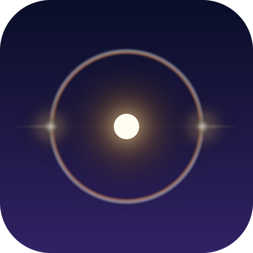
A generator of trance
Version 0.1.0 · 1670 parameters · manual built 30.09.2026
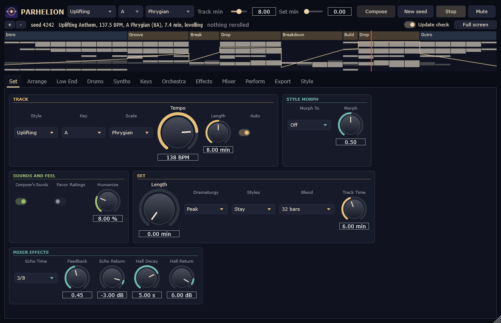
Parhelion composes, mixes and plays trance: tracks of two to fourteen minutes and DJ sets of up to twelve hours, in which the tracks follow one another on two decks as a DJ would mix them. Nothing is played back from a recording and no neural network makes a sound. The kick, the sub and the rolling bass, the 303, the twelve lanes of the kit, the six voices of the supersaw synthesiser -- lead, counter, pluck, arp, pad and stab --, the physically modelled piano, the bowed strings, the choir, the brass and the timpani, the risers and impacts are synthesised; the rooms, the plate and the hall are simulated; and every section, every note and every move of a knob is decided by the composer.
Five style profiles span the genre: Uplifting (the anthem with its long breakdown, and, now and then, an orchestra -- Cinematic), Progressive (the plateau that rises in layers), Dream House (the piano motif over a bass that never stops), Acid (the 303 carrying bass and melody, its filter the drama) and Deep (the pad as the instrument, a grain cloud over it). Any two can be blended. Every recipe was fitted against measurements of thirty reference tracks: their tempo and length, the share and length of their breakdowns, how far the drop rises over the breakdown, their loudness and its range, their spectral balance and their width.
The same seed always gives the same track. A track is a seed, a style, a length and a handful of rerolls, which is what a set file stores and what you can hand to someone else. The standalone and the plugin play what the offline renderer plays, sample for sample, whatever the block size.
A parhelion is a sun dog: the bright spot beside the sun, on the halo of ice crystals, that shines with the sun's own light. In trance the drop is the sun; everything before it is the halo.
The standalone plays by itself: press Play. Compose writes a new track with the knobs as they stand, New seed draws a fresh one. The status line tells what plays: its style and form, its tempo, its key with the Camelot label a DJ mixes by, and its length. While a track begins to play, Parhelion measures it in the background: each voice is set against the kick in a window of its own, every breakdown against the drop by the distance the style's references keep, every build a little under the drop, and the drop to the style's loudness. The status says "levelling" until the corrections have glided in.
For a set, move Set min above zero: Parhelion then writes a set of that many minutes -- a dramaturgy of energy and tempo, tracks in neighbouring keys on the Camelot wheel, the incoming track's intro under the outgoing track's outro, the bass swapped on the mixer's isolator, the next track's hook teased on the third deck.
In a DAW, Parhelion is an instrument plugin that follows the host's transport: it plays when the host plays, jumps when the host jumps, and plays at the host's tempo (a set's own tempo drift is the standalone's and the export's). Its output is a finished stereo mix, its loudest 20 seconds at the style's loudness (-8 to -10 LUFS, as the references) and its true peak under -1 dBTP.
A reroll draws one part of the track again and leaves the rest as it was: the form, the layer matrix, the energy, the harmony, the motif, the lead, the bass, the 303, the arp, the pluck, the piano, the orchestra, the drums, the effects, the sounds. In a set the rerolls act on the track under the playhead, and "reroll the whole track" or "reroll the set's plan" draw more at once (the Arrange page).
A track has one of five forms, and each style draws its own. The Anthem is Uplifting's: intro, groove, a short break and a first drop, the main breakdown of 32 to 64 bars with its tease, its peak and its build, the main drop, and now and then a second break and a final drop, the outro. The Dream is Dream House's, shorter, and the bass never leaves, not even in the breakdown. The Acid form has no long breakdown: one to three pauses of the kick of eight bars each, between grooves, and the main drop; its drama is the 303's filter. The Plateau is Progressive's: grooves and plateaus that add a layer at a time, short breaks between them, a breakdown of 24 or 32 bars. The Drift is Deep's, a long groove and plateau before the breakdown and the main drop. Every section is a multiple of eight bars and the whole a multiple of thirty-two; every 8-bar block changes something against the one before it; the bar before a drop empties -- the last beat, the last two, the whole bar, or the kick alone on four -- so that the drop lands.
The intro opens on an atmosphere. The pad plays from the first bar, filtered dark, and opens over the intro; the effects lay a long atmosphere under it (a swell of detuned saws and noise in the key) with reverse swells into the 16-bar lines, and in the intro's second half the arp's pattern ghosts through, filtered. Under that the DJ intro builds as a DJ needs it: the kick, the hats, the bass, the open hat, the percussion. A track that stands alone -- not in a set -- may open without the kick altogether, on the pad and the atmosphere (Progressive, Dream House and Deep often, Uplifting and Acid now and then); a set's tracks always start with the kick, so they can be mixed. How much sustained sound an intro carries was measured on the references (the sustained energy between 200 Hz and 5 kHz in the first 16 and 32 bars against the drop) and the intros are held to it.
The harmony: a key the profile favours (the roots from D to A most often), one of five progressions (i-VI-III-VII and its relatives; the major keys through their relative minors), the harmonic rhythm of the section, the VII in the two bars before every drop and its resolution on i. Acid stays on its chord and moves a fourth or a fifth every 16 bars; the Cinematic tracks lift by a third after the second breakdown.
The melody is written from rules and from counts. The anthem's motif is long notes: a leap of a fourth to an octave after the first note, then down by steps, a chord tone on every beat, phrased A A' B A''; filtered sections hear only A, the main drop's second half an octave higher. The riff, the pluck's rhythm, the piano's line and the 303's bar are drawn from note statistics of order two, never from a melody itself, and every lead is checked two bars at a time against a fingerprint of 144 250 windows of known trance tracks and drawn again on a match.
Style picks the profile; Morph To and Morph blend it with a second one. With Auto the tempo and the key are drawn from the profile; without it the knobs decide. Length is the track's, rounded to whole 32-bar blocks. Humanize is the spread of the velocities and the timing. Composer's Sounds lets the composer choose a preset per synth for every track (the next chapter); Favor Ratings weighs what you rated (the Arrange page).
A set is a length in minutes and a dramaturgy -- Warm-up, Peak, Closing, Sunrise (from the deep end up into the light) and Journey (a long arc with two peaks) --, which draws the energy and the tempo of every track (the tempo moves by at most two BPM a track). Styles: Stay keeps the style of the knobs, Wander walks the ladder Deep, Dream House, Progressive, Uplifting, Acid with the energy. The keys walk the Camelot wheel: the same key, a fifth, the relative major or minor -- from major back to minor more often, trance lives in minor --, now and then an energy boost by one or two semitones. Every track of a set can be mixed: an intro and an outro of 32 bars or more, with a beat, never beatless.
The blend lays the incoming track's intro over the outgoing track's outro, 32 or 64 bars (Blend). The bass goes over on the isolator in one move, 16 bars before the incoming groove, never before the incoming bass; the DJ's hand works the faders and the filters. On deck C the next track's hook is teased, filtered, over the end of the one playing. Track Time is how long each track is heard on its own. The mixer's effects (djfx) are an echo and a hall that the breaks and the Perform page's throw send into.
| Control | Key | Range | Default |
|---|---|---|---|
| Tempo | compose.bpm | 90 .. 150 BPM | 138 BPM |
| Key | compose.key | C, C#, D, D#, E, F, F#, G, G#, A, A#, B | A |
| Scale | compose.scale | Aeolian, Dorian, Harmonic Minor, Minor Pentatonic, Phrygian, Ionian | Aeolian |
| Style | compose.style | Uplifting, Progressive, Dream House, Acid, Deep | Uplifting |
| Length | compose.minutes | 2 .. 14 min | 8 min |
| Auto | compose.auto | off / on | on |
| Morph To | compose.morph_to | Off, Uplifting, Progressive, Dream House, Acid, Deep | Off |
| Morph | compose.morph | 0 .. 1 | 0.5 |
| Composer's Sounds | compose.pick_sounds | off / on | on |
| Favor Ratings | compose.use_ratings | off / on | off |
| Humanize | compose.humanize | 0 .. 30 % | 8 % |
| Control | Key | Range | Default |
|---|---|---|---|
| Dramaturgy | set.dramaturgy | Warm-up, Peak, Closing, Sunrise, Journey | Peak |
| Styles | set.journey | Stay, Wander | Stay |
| Blend | set.blend | 32 bars, 64 bars | 32 bars |
| Set Length | set.minutes | 0 .. 720 min | 0 min |
| Track Time | set.track_minutes | 3 .. 10 min | 6 min |
| Control | Key | Range | Default |
|---|---|---|---|
| Echo Time | djfx.echo_time | 1/16, 1/8, 3/16, 1/4, 3/8, 1/2 | 3/8 |
| Feedback | djfx.feedback | 0 .. 1 | 0.45 |
| Echo Return | djfx.echo_return | -60 .. 6 dB | -3 dB |
| Hall Decay | djfx.hall_decay | 0.5 .. 12 s | 5 s |
| Hall Return | djfx.hall_return | -60 .. 12 dB | 6 dB |
Every synth has 1024 factory presets: the kick, the sub, the kit (by role), the bass, the 303, each of the six voices of the supersaw synthesiser (lead, counter, pluck, arp, pad, stab), the piano, the strings, the choir, the brass, the timpani, the effects and the grain cloud -- 18 banks, 18 432 sounds. Each bank has sixteen groups -- "Anthem Supersaw", "Classic 303", "Gated Pad", "Concert Grand" -- and each group sixty-four presets on an eight by eight grid: the rows an adjective from dark to bright, the columns a noun of the group's own, so the name tells where on the grid a sound lies. A preset is the sound with its modulation, not the mix: levels, sends, the pump and the notes stay where the mix and the composer put them. Each preset's loudness against the default sound was measured, and the composer trims it by that amount.
For every track the composer chooses a preset per synth (Composer's Sounds, compose.pick_sounds): a group by how well it suits the track's style -- the weights cubed, so that an Uplifting lead is mostly a supersaw --, a lane of the kit only among the groups made for its role, and in the group a row around the style's brightness (Uplifting brighter, Deep darker) and a column at random. The style then holds a few knobs in its own range. Reroll sounds draws other presets and leaves the notes as they are.
The knobs show what plays. When a track begins -- in a set, when the next track starts on its deck -- its presets are put on the knobs, and each voice's preset bar names the preset the composer chose; the Arrange page lists them for the whole track. Turn a knob and the sound follows from there; choose another preset from the menu, or step through them with the arrows, and it plays at once. In a blend each deck keeps its own track's sounds.
Save as user preset (the last item of the menu) keeps a sound of your own: every knob a preset sets, as it stands, goes under a name into Documents/Parhelion/Presets/<synth>, one "knob=value" a line, and appears in the menu under User. The twelve lanes of the kit share their folder, so a lane's sound loads into any lane. A user preset is the whole sound, as a factory preset is: a knob its file does not name (one edited out by hand) goes back to its default.
Every voice has the same modulation block: a modulation envelope, four LFOs (free or in time with the beat) and a matrix of eight slots, each a source, a destination and an amount. The sources: the envelope, the LFOs, velocity, the key, a random value per note, the mod wheel, channel pressure and the energy of the score, so that a voice can open with the track (the synthesisers add their filter envelope). The destinations are the engine's own: pitch, pulse width, wavetable position, FM index, cutoff, resonance, drive and detune for the synthesisers; hammer hardness for the piano; bow pressure, speed and position for the strings; vowel, formant, tension and breath for the choir; breath and brassiness for the brass; hardness, strike position and decay for the timpani; vibrato, level and pan for all of them. Most presets use a few slots; what the mod wheel does is the preset's.
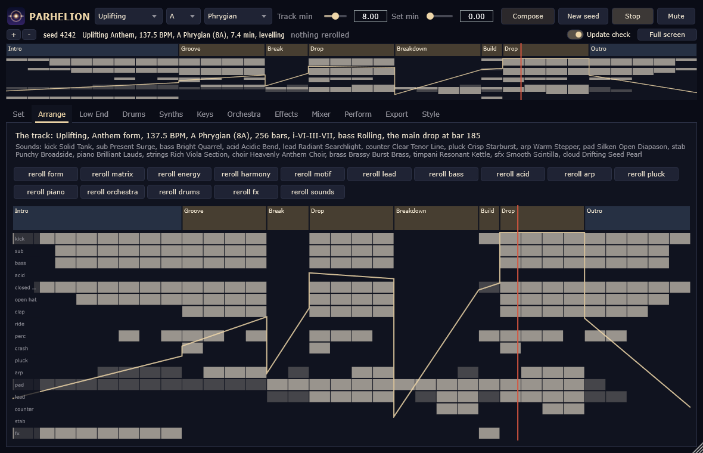
The arrangement across the whole length: in a track its sections by name, and under them a lane per layer -- kick, sub, bass, 303, the hats, the clap, the ride, the percussion, the crash, pluck, arp, pad, lead, counter, stab, effects --, bright where the layer plays open, dim where it plays filtered. Over them the energy curve the composer wrote. In a set the tracks lie on decks A and B, their bass swaps marked, and the teases on deck C. A click jumps there. The line above names the style, the form, the tempo, the key, the progression, the bass figure, the main drop and, where there is one, the orchestra and the key change; the line below the preset of every synth.
The row of rerolls acts on the track under the playhead; each part is drawn from a stream of its own, so a reroll of the matrix keeps the harmony and the sounds, a reroll of the energy redraws the curve the pads' opening and the 303 follow, and a reroll of the motif writes another hook for the same form.
The + and - beside the status line rate the track under the playhead. The ratings are kept in Documents/Parhelion/ratings.tsv with the track's form and the groups of its presets; with Favor Ratings (the Set page) the composer draws the forms and preset groups you liked more often and the ones you did not seldom -- none is ever ruled out. A saved set does not carry the ratings: it plays back the same only with Favor Ratings off.
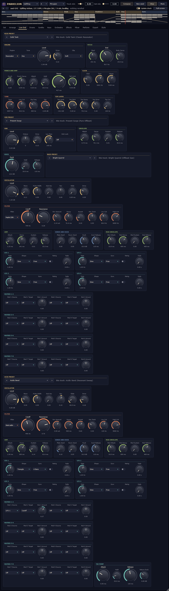
The low end is one system. The kick is tuned to the key (or its fifth, or its flat seventh); it has three engines (a swept sine, a resonator, a modelled 909) and a top layer, and its drive and clip run at four times the rate. The sub bass is a sine under the bass line, ducked by every kick and, with Kick Lock, locked to its phase, so that the two never cancel each other.
The mid bass and the 303 share one synthesiser with ten filter models (the Moog ladder, the 303's diode ladder, the Prophet's SSM2040, the Juno's IR3109, the SEM, the MS-20's Korg35 and more). The bass plays one of the trance figures -- the off-beat eighths, the rolling sixteenths, the gallop, the walking line, the drone --; the 303 plays its bar with accents and slides, and in Acid its cutoff, resonance, envelope and decay climb over phrases of 16, 32 or 64 bars and fall back at their end.
The pump is trance's sidechain: a ghost kick, silent and on a track of its own, ducks each voice by its own depth in dB, with the attack, hold and release here, and the returns of the rooms by Return Duck. It gives the pads and the leads their breathing without a compressor; in a breakdown the composer lets it go and ramps it back in for the drop.
| Control | Key | Range | Default |
|---|---|---|---|
| Engine | kick.engine | Sweep, Resonator, 909 | Sweep |
| Tune | kick.tune | Free, Key, Fifth, Flat Seventh | Key |
| Pitch End | kick.pitch_end | 30 .. 120 Hz | 52 Hz |
| Pitch Start | kick.pitch_start | 60 .. 1500 Hz | 220 Hz |
| Body Decay | kick.pitch_decay | 5 .. 300 ms | 24 ms |
| Punch Decay | kick.punch_decay | 0.5 .. 20 ms | 3 ms |
| Punch | kick.punch | 0 .. 1 | 0.55 |
| Attack | kick.amp_attack | 0 .. 10 ms | 0.2 ms |
| Hold | kick.amp_hold | 0 .. 150 ms | 20 ms |
| Decay | kick.amp_decay | 20 .. 1500 ms | 320 ms |
| Drive | kick.drive | 0 .. 1 | 0.3 |
| Clip | kick.clip | Soft, Hard | Soft |
| Click | kick.click_level | 0 .. 1 | 0.4 |
| Click Tone | kick.click_tone | 500 .. 12000 Hz | 3500 Hz |
| Click Decay | kick.click_decay | 0.5 .. 30 ms | 5 ms |
| Tone | kick.tone | 200 .. 20000 Hz | 8000 Hz |
| Level | kick.level | -36 .. 6 dB | -3 dB |
| Tail Limit | kick.tail_limit | -60 .. 0 dB | 0 dB |
| Low Cut | kick.low_cut | 15 .. 60 Hz | 30 Hz |
| Dip Freq | kick.dip_freq | 200 .. 1500 Hz | 400 Hz |
| Dip | kick.dip | -12 .. 0 dB | -2 dB |
| Top Level | kick.top_level | -60 .. 0 dB | -10 dB |
| Top Pitch | kick.top_pitch | -24 .. 0 st | -5 st |
| Top Decay | kick.top_decay | 20 .. 400 ms | 70 ms |
| Top Drive | kick.top_drive | 0 .. 1 | 0.4 |
| Top Cut | kick.top_cut | 80 .. 2000 Hz | 100 Hz |
| Control | Key | Range | Default |
|---|---|---|---|
| Level | sub.level | -60 .. 6 dB | -4 dB |
| Octave | sub.octave | -2 .. 2 | 0 |
| Attack | sub.attack | 0.5 .. 50 ms | 1 ms |
| Decay | sub.decay | 20 .. 2000 ms | 60 ms |
| Sustain | sub.sustain | 0 .. 1 | 0 |
| Release | sub.release | 10 .. 800 ms | 40 ms |
| Low Pass | sub.low_pass | 40 .. 300 Hz | 110 Hz |
| Drive | sub.drive | 0 .. 1 | 0.1 |
| Kick Lock | sub.lock | Off, Kick | Off |
| Duck | sub.duck | 0 .. 24 dB | 11 dB |
| Duck Hold | sub.duck_hold | 0 .. 250 ms | 20 ms |
| Duck Release | sub.duck_release | 30 .. 600 ms | 110 ms |
| Control | Key | Range | Default |
|---|---|---|---|
| Level | bass.level | -60 .. 6 dB | -1 dB |
| Pan | bass.pan | -1 .. 1 | 0 |
| Wave | bass.wave | 0 .. 1 | 0 |
| Pulse Width | bass.pulse_width | 0.05 .. 0.95 | 0.5 |
| Sub Osc | bass.sub_osc | 0 .. 1 | 0 |
| Filter | bass.filter | Moog Ladder, Prophet (SSM2040), Juno (IR3109), Oberheim SEM, Xpander, Diode Ladder (303), Korg35 (MS-20), Polivoks, Wasp, Comb | Moog Ladder |
| Cutoff | bass.cutoff | 40 .. 12000 Hz | 420 Hz |
| Resonance | bass.resonance | 0 .. 1 | 0.15 |
| Env Amount | bass.env_amount | 0 .. 6 oct | 2.2 oct |
| Decay | bass.decay | 5 .. 3000 ms | 90 ms |
| Accent | bass.accent | 0 .. 1 | 0.2 |
| Attack | bass.amp_attack | 0.5 .. 500 ms | 0.5 ms |
| Amp Decay | bass.amp_decay | 5 .. 3000 ms | 150 ms |
| Sustain | bass.amp_sustain | 0 .. 1 | 0 |
| Release | bass.amp_release | 5 .. 3000 ms | 40 ms |
| Glide | bass.glide | 0 .. 500 ms | 0 ms |
| Drive | bass.drive | 0 .. 1 | 0.25 |
| Key Track | bass.key_track | 0 .. 1 | 0.5 |
| Low Cut | bass.low_cut | 20 .. 500 Hz | 80 Hz |
| High Cut | bass.high_cut | 500 .. 20000 Hz | 6000 Hz |
| Plate Send | bass.plate_send | 0 .. 1 | 0 |
| Room Send | bass.room_send | 0 .. 1 | 0 |
| Duck | bass.duck | 0 .. 24 dB | 8 dB |
| Duck Release | bass.duck_release | 30 .. 600 ms | 110 ms |
| Mod Attack | bass.menv_attack | 0.1 .. 8000 ms | 10 ms |
| Mod Decay | bass.menv_decay | 5 .. 12000 ms | 800 ms |
| Mod Sustain | bass.menv_sustain | 0 .. 1 | 0 |
| Mod Release | bass.menv_release | 5 .. 12000 ms | 400 ms |
| LFO 1 Rate | bass.lfo1_rate | 0.01 .. 40 Hz | 1 Hz |
| LFO 1 Shape | bass.lfo1_shape | Sine, Triangle, Saw Up, Saw Down, Square, Sample & Hold, Smooth Random | Sine |
| LFO 1 Sync | bass.lfo1_sync | Free, 4 Bars, 2 Bars, 1 Bar, 1/2, 1/4, 1/8, 1/16, 1/4 T, 1/8 T | Free |
| LFO 1 Retrig | bass.lfo1_retrig | off / on | off |
| LFO 1 Fade | bass.lfo1_fade | 0 .. 8 s | 0 s |
| LFO 2 Rate | bass.lfo2_rate | 0.01 .. 40 Hz | 1 Hz |
| LFO 2 Shape | bass.lfo2_shape | Sine, Triangle, Saw Up, Saw Down, Square, Sample & Hold, Smooth Random | Sine |
| LFO 2 Sync | bass.lfo2_sync | Free, 4 Bars, 2 Bars, 1 Bar, 1/2, 1/4, 1/8, 1/16, 1/4 T, 1/8 T | Free |
| LFO 2 Retrig | bass.lfo2_retrig | off / on | off |
| LFO 2 Fade | bass.lfo2_fade | 0 .. 8 s | 0 s |
| LFO 3 Rate | bass.lfo3_rate | 0.01 .. 40 Hz | 1 Hz |
| LFO 3 Shape | bass.lfo3_shape | Sine, Triangle, Saw Up, Saw Down, Square, Sample & Hold, Smooth Random | Sine |
| LFO 3 Sync | bass.lfo3_sync | Free, 4 Bars, 2 Bars, 1 Bar, 1/2, 1/4, 1/8, 1/16, 1/4 T, 1/8 T | Free |
| LFO 3 Retrig | bass.lfo3_retrig | off / on | off |
| LFO 3 Fade | bass.lfo3_fade | 0 .. 8 s | 0 s |
| LFO 4 Rate | bass.lfo4_rate | 0.01 .. 40 Hz | 1 Hz |
| LFO 4 Shape | bass.lfo4_shape | Sine, Triangle, Saw Up, Saw Down, Square, Sample & Hold, Smooth Random | Sine |
| LFO 4 Sync | bass.lfo4_sync | Free, 4 Bars, 2 Bars, 1 Bar, 1/2, 1/4, 1/8, 1/16, 1/4 T, 1/8 T | Free |
| LFO 4 Retrig | bass.lfo4_retrig | off / on | off |
| LFO 4 Fade | bass.lfo4_fade | 0 .. 8 s | 0 s |
| Mod 1 Source | bass.mx1_src | Off, LFO 1, LFO 2, LFO 3, LFO 4, Mod Env, Filter Env, Velocity, Key, Random, Wheel, Pressure, Energy | Off |
| Mod 1 Target | bass.mx1_dst | Off, Pitch, Pulse Width, Cutoff, Resonance, Env Amount, Drive, Level, Pan | Off |
| Mod 1 Amount | bass.mx1_amount | -1 .. 1 | 0 |
| Mod 2 Source | bass.mx2_src | Off, LFO 1, LFO 2, LFO 3, LFO 4, Mod Env, Filter Env, Velocity, Key, Random, Wheel, Pressure, Energy | Off |
| Mod 2 Target | bass.mx2_dst | Off, Pitch, Pulse Width, Cutoff, Resonance, Env Amount, Drive, Level, Pan | Off |
| Mod 2 Amount | bass.mx2_amount | -1 .. 1 | 0 |
| Mod 3 Source | bass.mx3_src | Off, LFO 1, LFO 2, LFO 3, LFO 4, Mod Env, Filter Env, Velocity, Key, Random, Wheel, Pressure, Energy | Off |
| Mod 3 Target | bass.mx3_dst | Off, Pitch, Pulse Width, Cutoff, Resonance, Env Amount, Drive, Level, Pan | Off |
| Mod 3 Amount | bass.mx3_amount | -1 .. 1 | 0 |
| Mod 4 Source | bass.mx4_src | Off, LFO 1, LFO 2, LFO 3, LFO 4, Mod Env, Filter Env, Velocity, Key, Random, Wheel, Pressure, Energy | Off |
| Mod 4 Target | bass.mx4_dst | Off, Pitch, Pulse Width, Cutoff, Resonance, Env Amount, Drive, Level, Pan | Off |
| Mod 4 Amount | bass.mx4_amount | -1 .. 1 | 0 |
| Mod 5 Source | bass.mx5_src | Off, LFO 1, LFO 2, LFO 3, LFO 4, Mod Env, Filter Env, Velocity, Key, Random, Wheel, Pressure, Energy | Off |
| Mod 5 Target | bass.mx5_dst | Off, Pitch, Pulse Width, Cutoff, Resonance, Env Amount, Drive, Level, Pan | Off |
| Mod 5 Amount | bass.mx5_amount | -1 .. 1 | 0 |
| Mod 6 Source | bass.mx6_src | Off, LFO 1, LFO 2, LFO 3, LFO 4, Mod Env, Filter Env, Velocity, Key, Random, Wheel, Pressure, Energy | Off |
| Mod 6 Target | bass.mx6_dst | Off, Pitch, Pulse Width, Cutoff, Resonance, Env Amount, Drive, Level, Pan | Off |
| Mod 6 Amount | bass.mx6_amount | -1 .. 1 | 0 |
| Mod 7 Source | bass.mx7_src | Off, LFO 1, LFO 2, LFO 3, LFO 4, Mod Env, Filter Env, Velocity, Key, Random, Wheel, Pressure, Energy | Off |
| Mod 7 Target | bass.mx7_dst | Off, Pitch, Pulse Width, Cutoff, Resonance, Env Amount, Drive, Level, Pan | Off |
| Mod 7 Amount | bass.mx7_amount | -1 .. 1 | 0 |
| Mod 8 Source | bass.mx8_src | Off, LFO 1, LFO 2, LFO 3, LFO 4, Mod Env, Filter Env, Velocity, Key, Random, Wheel, Pressure, Energy | Off |
| Mod 8 Target | bass.mx8_dst | Off, Pitch, Pulse Width, Cutoff, Resonance, Env Amount, Drive, Level, Pan | Off |
| Mod 8 Amount | bass.mx8_amount | -1 .. 1 | 0 |
| Control | Key | Range | Default |
|---|---|---|---|
| Level | acid.level | -60 .. 6 dB | -12 dB |
| Pan | acid.pan | -1 .. 1 | 0.1 |
| Wave | acid.wave | 0 .. 1 | 0 |
| Pulse Width | acid.pulse_width | 0.05 .. 0.95 | 0.5 |
| Sub Osc | acid.sub_osc | 0 .. 1 | 0 |
| Filter | acid.filter | Moog Ladder, Prophet (SSM2040), Juno (IR3109), Oberheim SEM, Xpander, Diode Ladder (303), Korg35 (MS-20), Polivoks, Wasp, Comb | Diode Ladder (303) |
| Cutoff | acid.cutoff | 40 .. 12000 Hz | 600 Hz |
| Resonance | acid.resonance | 0 .. 1 | 0.72 |
| Env Amount | acid.env_amount | 0 .. 6 oct | 2.5 oct |
| Decay | acid.decay | 5 .. 3000 ms | 220 ms |
| Accent | acid.accent | 0 .. 1 | 0.6 |
| Attack | acid.amp_attack | 0.5 .. 500 ms | 0.5 ms |
| Amp Decay | acid.amp_decay | 5 .. 3000 ms | 900 ms |
| Sustain | acid.amp_sustain | 0 .. 1 | 0.8 |
| Release | acid.amp_release | 5 .. 3000 ms | 60 ms |
| Glide | acid.glide | 0 .. 500 ms | 60 ms |
| Drive | acid.drive | 0 .. 1 | 0.6 |
| Key Track | acid.key_track | 0 .. 1 | 0.3 |
| Low Cut | acid.low_cut | 20 .. 500 Hz | 120 Hz |
| High Cut | acid.high_cut | 500 .. 20000 Hz | 9000 Hz |
| Plate Send | acid.plate_send | 0 .. 1 | 0.1 |
| Room Send | acid.room_send | 0 .. 1 | 0.05 |
| Duck | acid.duck | 0 .. 24 dB | 6 dB |
| Duck Release | acid.duck_release | 30 .. 600 ms | 110 ms |
| Mod Attack | acid.menv_attack | 0.1 .. 8000 ms | 10 ms |
| Mod Decay | acid.menv_decay | 5 .. 12000 ms | 800 ms |
| Mod Sustain | acid.menv_sustain | 0 .. 1 | 0 |
| Mod Release | acid.menv_release | 5 .. 12000 ms | 400 ms |
| LFO 1 Rate | acid.lfo1_rate | 0.01 .. 40 Hz | 1 Hz |
| LFO 1 Shape | acid.lfo1_shape | Sine, Triangle, Saw Up, Saw Down, Square, Sample & Hold, Smooth Random | Sine |
| LFO 1 Sync | acid.lfo1_sync | Free, 4 Bars, 2 Bars, 1 Bar, 1/2, 1/4, 1/8, 1/16, 1/4 T, 1/8 T | Free |
| LFO 1 Retrig | acid.lfo1_retrig | off / on | off |
| LFO 1 Fade | acid.lfo1_fade | 0 .. 8 s | 0 s |
| LFO 2 Rate | acid.lfo2_rate | 0.01 .. 40 Hz | 1 Hz |
| LFO 2 Shape | acid.lfo2_shape | Sine, Triangle, Saw Up, Saw Down, Square, Sample & Hold, Smooth Random | Sine |
| LFO 2 Sync | acid.lfo2_sync | Free, 4 Bars, 2 Bars, 1 Bar, 1/2, 1/4, 1/8, 1/16, 1/4 T, 1/8 T | Free |
| LFO 2 Retrig | acid.lfo2_retrig | off / on | off |
| LFO 2 Fade | acid.lfo2_fade | 0 .. 8 s | 0 s |
| LFO 3 Rate | acid.lfo3_rate | 0.01 .. 40 Hz | 1 Hz |
| LFO 3 Shape | acid.lfo3_shape | Sine, Triangle, Saw Up, Saw Down, Square, Sample & Hold, Smooth Random | Sine |
| LFO 3 Sync | acid.lfo3_sync | Free, 4 Bars, 2 Bars, 1 Bar, 1/2, 1/4, 1/8, 1/16, 1/4 T, 1/8 T | Free |
| LFO 3 Retrig | acid.lfo3_retrig | off / on | off |
| LFO 3 Fade | acid.lfo3_fade | 0 .. 8 s | 0 s |
| LFO 4 Rate | acid.lfo4_rate | 0.01 .. 40 Hz | 1 Hz |
| LFO 4 Shape | acid.lfo4_shape | Sine, Triangle, Saw Up, Saw Down, Square, Sample & Hold, Smooth Random | Sine |
| LFO 4 Sync | acid.lfo4_sync | Free, 4 Bars, 2 Bars, 1 Bar, 1/2, 1/4, 1/8, 1/16, 1/4 T, 1/8 T | Free |
| LFO 4 Retrig | acid.lfo4_retrig | off / on | off |
| LFO 4 Fade | acid.lfo4_fade | 0 .. 8 s | 0 s |
| Mod 1 Source | acid.mx1_src | Off, LFO 1, LFO 2, LFO 3, LFO 4, Mod Env, Filter Env, Velocity, Key, Random, Wheel, Pressure, Energy | Off |
| Mod 1 Target | acid.mx1_dst | Off, Pitch, Pulse Width, Cutoff, Resonance, Env Amount, Drive, Level, Pan | Off |
| Mod 1 Amount | acid.mx1_amount | -1 .. 1 | 0 |
| Mod 2 Source | acid.mx2_src | Off, LFO 1, LFO 2, LFO 3, LFO 4, Mod Env, Filter Env, Velocity, Key, Random, Wheel, Pressure, Energy | Off |
| Mod 2 Target | acid.mx2_dst | Off, Pitch, Pulse Width, Cutoff, Resonance, Env Amount, Drive, Level, Pan | Off |
| Mod 2 Amount | acid.mx2_amount | -1 .. 1 | 0 |
| Mod 3 Source | acid.mx3_src | Off, LFO 1, LFO 2, LFO 3, LFO 4, Mod Env, Filter Env, Velocity, Key, Random, Wheel, Pressure, Energy | Off |
| Mod 3 Target | acid.mx3_dst | Off, Pitch, Pulse Width, Cutoff, Resonance, Env Amount, Drive, Level, Pan | Off |
| Mod 3 Amount | acid.mx3_amount | -1 .. 1 | 0 |
| Mod 4 Source | acid.mx4_src | Off, LFO 1, LFO 2, LFO 3, LFO 4, Mod Env, Filter Env, Velocity, Key, Random, Wheel, Pressure, Energy | Off |
| Mod 4 Target | acid.mx4_dst | Off, Pitch, Pulse Width, Cutoff, Resonance, Env Amount, Drive, Level, Pan | Off |
| Mod 4 Amount | acid.mx4_amount | -1 .. 1 | 0 |
| Mod 5 Source | acid.mx5_src | Off, LFO 1, LFO 2, LFO 3, LFO 4, Mod Env, Filter Env, Velocity, Key, Random, Wheel, Pressure, Energy | Off |
| Mod 5 Target | acid.mx5_dst | Off, Pitch, Pulse Width, Cutoff, Resonance, Env Amount, Drive, Level, Pan | Off |
| Mod 5 Amount | acid.mx5_amount | -1 .. 1 | 0 |
| Mod 6 Source | acid.mx6_src | Off, LFO 1, LFO 2, LFO 3, LFO 4, Mod Env, Filter Env, Velocity, Key, Random, Wheel, Pressure, Energy | Off |
| Mod 6 Target | acid.mx6_dst | Off, Pitch, Pulse Width, Cutoff, Resonance, Env Amount, Drive, Level, Pan | Off |
| Mod 6 Amount | acid.mx6_amount | -1 .. 1 | 0 |
| Mod 7 Source | acid.mx7_src | Off, LFO 1, LFO 2, LFO 3, LFO 4, Mod Env, Filter Env, Velocity, Key, Random, Wheel, Pressure, Energy | Off |
| Mod 7 Target | acid.mx7_dst | Off, Pitch, Pulse Width, Cutoff, Resonance, Env Amount, Drive, Level, Pan | Off |
| Mod 7 Amount | acid.mx7_amount | -1 .. 1 | 0 |
| Mod 8 Source | acid.mx8_src | Off, LFO 1, LFO 2, LFO 3, LFO 4, Mod Env, Filter Env, Velocity, Key, Random, Wheel, Pressure, Energy | Off |
| Mod 8 Target | acid.mx8_dst | Off, Pitch, Pulse Width, Cutoff, Resonance, Env Amount, Drive, Level, Pan | Off |
| Mod 8 Amount | acid.mx8_amount | -1 .. 1 | 0 |
| Control | Key | Range | Default |
|---|---|---|---|
| Attack | pump.attack | 0.1 .. 20 ms | 0.5 ms |
| Hold | pump.hold | 0 .. 150 ms | 20 ms |
| Release | pump.release | 30 .. 600 ms | 120 ms |
| Return Duck | pump.return_duck | 0 .. 12 dB | 4 dB |
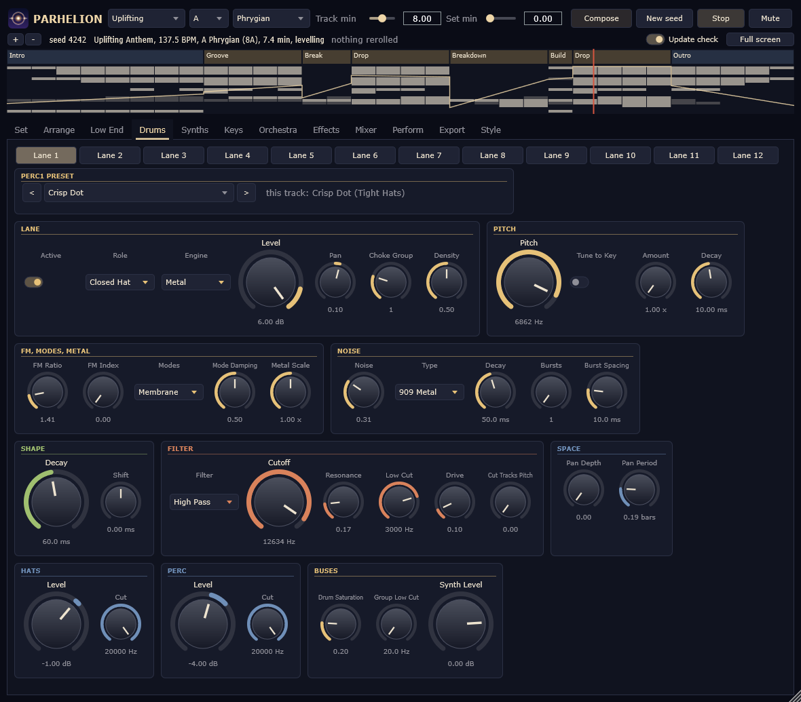
Twelve lanes, each a small drum synthesiser: a role (the closed, rolling and open hats, the ride, the clap and its ghost, the snare, the rim, the shaker, toms, congas, noise, the crash, the tambourine), an engine (noise, metal -- the 909's six square waves --, modal, tone, FM), a filter and a shape. They run side by side in the lanes of the processor's vector registers. The snare plays the roll into the drop, from quarters to thirty-seconds; the crash marks the drops.
The mix module holds the buses: the hats and the percussion with their level and low pass, the drum bus's saturation, the group low cut the builds draw up, and the synth bus's level -- the fader the energy curve moves.
| Control | Key | Range | Default |
|---|---|---|---|
| Active | percN.active | off / on | on |
| Role | percN.role | Closed Hat, Rolling Hat, Open Hat, Ride, Clap, Clap Ghost, Snare, Rim, Shaker, Tom, Conga, Noise, Crash, Tambourine | Closed Hat |
| Engine | percN.engine | Noise, Metal, Modal, Tone, FM | Noise |
| Pitch | percN.pitch | 40 .. 12000 Hz | 400 Hz |
| Pitch Amount | percN.pitch_amount | 1 .. 16 x | 1 x |
| Pitch Decay | percN.pitch_decay | 0.5 .. 300 ms | 10 ms |
| FM Ratio | percN.fm_ratio | 0.25 .. 8 | 1.41 |
| FM Index | percN.fm_index | 0 .. 8 | 0 |
| Modes | percN.mode_set | Membrane, Bar, Harmonic | Membrane |
| Mode Damping | percN.mode_damp | 0 .. 1 | 0.5 |
| Metal Scale | percN.metal_scale | 0.25 .. 4 x | 1 x |
| Noise | percN.noise | 0 .. 1 | 1 |
| Noise Decay | percN.noise_decay | 2 .. 3000 ms | 55 ms |
| Bursts | percN.bursts | 1 .. 6 | 1 |
| Burst Spacing | percN.burst_spacing | 2 .. 40 ms | 10 ms |
| Decay | percN.decay | 2 .. 3000 ms | 55 ms |
| Filter | percN.filter | Low Pass, Band Pass, High Pass | High Pass |
| Cutoff | percN.cutoff | 100 .. 18000 Hz | 7500 Hz |
| Resonance | percN.resonance | 0 .. 1 | 0.15 |
| Low Cut | percN.low_cut | 150 .. 8000 Hz | 3000 Hz |
| Drive | percN.drive | 0 .. 1 | 0.1 |
| Level | percN.level | -36 .. 6 dB | -2.5 dB |
| Pan | percN.pan | -1 .. 1 | 0.1 |
| Choke Group | percN.choke | 0 .. 4 | 1 |
| Shift | percN.shift | -10 .. 10 ms | 0 ms |
| Density | percN.density | 0 .. 1 | 0.5 |
| Tune to Key | percN.tune | off / on | off |
| Pan Depth | percN.pan_depth | 0 .. 1 | 0 |
| Pan Period | percN.pan_bars | 0.0625 .. 16 bars | 0.1875 bars |
| Cut Tracks Pitch | percN.cut_track | 0 .. 2 | 0 |
| Noise Type | percN.noise_type | White, 909 Metal | 909 Metal |
| Control | Key | Range | Default |
|---|---|---|---|
| Hats Level | mix.hats_level | -24 .. 12 dB | -1 dB |
| Hats Cut | mix.hats_cut | 200 .. 20000 Hz | 20000 Hz |
| Perc Level | mix.perc_level | -24 .. 12 dB | -4 dB |
| Perc Cut | mix.perc_cut | 200 .. 20000 Hz | 20000 Hz |
| Drum Saturation | mix.drum_sat | 0 .. 1 | 0.2 |
| Group Low Cut | mix.low_cut | 20 .. 500 Hz | 20 Hz |
| Synth Level | mix.synth_level | -24 .. 6 dB | 0 dB |
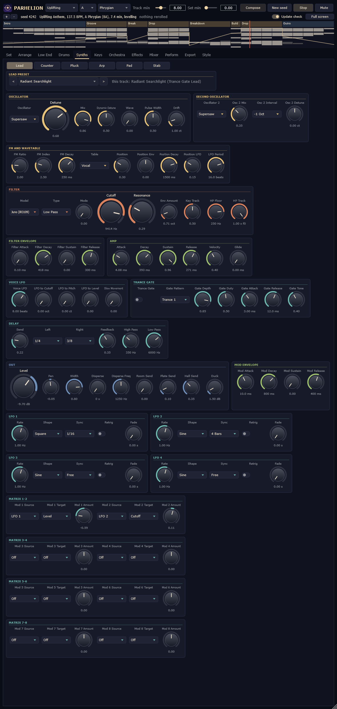
Six voices of one synthesiser, each with its own role and bank: the lead, the counter-melody, the pluck, the arp, the pad and the stab. Two oscillators -- the supersaw after Adam Szabo's measurements of the Roland JP-8000 (seven saws, the detune curve and the mix of the original), virtual analogue, FM or a wavetable --, a filter from the same ten models, an amplitude and a filter envelope, the trance gate (the classic patterns and their sixteenth-note masks), a tempo delay, sends into the room, the plate and the hall, and the modulation block. The page shows one voice at a time; the voice buttons switch between them.
The lead plays the motif; the counter answers in the lead's held notes an octave above; the pluck plays the chords in syncopated sixteenths; the arp breaks them up; the pad holds them, gated in the drops and opening over the breakdown; the stab hits them in the drops (every other block of the first drop, the main drop from its second block on). Which voices play in which block is the layer matrix's.
| Control | Key | Range | Default |
|---|---|---|---|
| Oscillator | lead.osc | Supersaw, VA, FM, Wavetable | Supersaw |
| Detune | lead.detune | 0 .. 1 | 0.62 |
| Mix | lead.mix | 0 .. 1 | 0.8 |
| Dynamic Detune | lead.dynamic_detune | 0 .. 1 | 0.5 |
| Wave | lead.wave | 0 .. 1 | 0 |
| Pulse Width | lead.pulse_width | 0.05 .. 0.95 | 0.5 |
| FM Ratio | lead.fm_ratio | 0.5 .. 8 | 2 |
| FM Index | lead.fm_index | 0 .. 10 | 2.5 |
| FM Decay | lead.fm_decay | 5 .. 2000 ms | 250 ms |
| Table | lead.table | Classic, Vocal, Glass, PWM, Sync, Formant Saw, WaveEdit Hienharm, WaveEdit Junox_ho, WaveEdit Euclidea, WaveEdit Sohler49, WaveEdit Vocal_fo, WaveEdit Pwn_saw, WaveEdit Tidyb030, WaveEdit I_heart, WaveEdit Sine_n, WaveEdit Vocal_00, WaveEdit Supersaw, WaveEdit Tidyb060, Consonant 024, WaveEdit Synlp92, WaveEdit Distorte, WaveEdit Fourier2, WaveEdit Grav_b8, WaveEdit Spectr01, WaveEdit Discorda, WaveEdit Sohler47, WaveEdit Ppg_wa27, WaveEdit Micro_q, WaveEdit Noise_wa, WaveEdit Kuato, WaveEdit Synlp67, WaveEdit Komple01, Consonant 066, WaveEdit Iterat00, WaveEdit Retro_sp, WaveEdit Acid_rin, WaveEdit Meravigl, WaveEdit Tidyb066, WaveEdit Tidyb049, WaveEdit Fracta03, WaveEdit Chebyshe, Sampled 167, WaveEdit Wavetabl, Chord 004, WaveEdit Grav_b6, WaveEdit Sohler33, WaveEdit Ppg_wa13, WaveEdit Pd104, WaveEdit Sohler48, WaveEdit Ppg_wa28, WaveEdit Wavetrip, WaveEdit Cz_ish, WaveEdit Fx_bitno, WaveEdit Tidyb046, WaveEdit Sohler74, WaveEdit Sohler29, WaveEdit Enshtu02, WaveEdit Tidyb072, WaveEdit Tidyb050, WaveEdit Voice_a, Resonator 018, WaveEdit Tidyb035, WaveEdit Tezzalog, AKWF 0004-hollow-01, WaveEdit Lom_a, WaveEdit Tidyb064, WaveEdit Moddrop, WaveEdit Harmomet, Hollow 013, WaveEdit Tidyb065, WaveEdit Ultra_ch, WaveEdit Laser_cr, WaveEdit Ppg_wa05, WaveEdit Drone, WaveEdit Gentle_m, WaveEdit Tidyb067, WaveEdit Tidyb005, Resonator 008, WaveEdit Synlp71, WaveEdit Sohler46, WaveEdit Tidyb077, WaveEdit Tidyb027, WaveEdit Sand_eye, WaveEdit Feedback, WaveEdit Tidyb071, WaveEdit Snake_ey, WaveEdit Hyperbol, AKWF 0018-hollow-01, Overtone 064, WaveEdit Light_00, WaveEdit Crush_ad, Organ 034, Sampled 131, Glass 012, WaveEdit Sohler67, Organ 006, WaveEdit Ppg_wa14, WaveEdit Sq8_sh, AKWF clavinet-hollow-01, Glass 009, WaveEdit Grav_c7, Consonant 100, WaveEdit Sohler51, Vowel Bass 015, Sampled 227, Hollow 005, Sampled 065, AKWF oscchip-04, AKWF raw-01, Hollow 015, AKWF snippets-01, Chord 027, Consonant 071, Chord 020, Consonant 051, WaveEdit Cyborg, Sampled 238, AKWF 0014-hollow-01, Overtone 000, WaveEdit Ppg_wa15, WaveEdit Grav_b4, Consonant 009, WaveEdit Grav_c5, WaveEdit Twist6, Glass 027, Sampled 078, AKWF oscchip-05, Consonant 120, WaveEdit Ppg_wa04, WaveEdit Sohler59, Sampled 081, Otmorph 053, Chord 030, Chord 032, Organ 029, Overtone 108, Hollow 001, WaveEdit Ppg_wa10, WaveEdit Organ_di, AKWF 0009-hollow-01, Tube 042, Vowel Bass 008, Organ 035, Metal 001, Consonant 114, AKWF vgame-03, Sampled 224, Resonator 001, Vowel Bass 038, Sampled 058, Vowel Tenor 038, Glass 026, Chord 019, Otmorph 115, AKWF stereo-04, Consonant 105, Vowel Bass 026, Chord 017, WaveEdit Ppg_wa11, Consonant 109, Sampled 125, Consonant 012, Overtone 046, Glass 016, Otmorph 067, Organ 026, Otmorph 005, Glass 018, Consonant 018, Hollow 023, Overtone 019, Otmorph 070, Consonant 127, Vowel Bass 029, Organ 016, Vowel Bass 017, Sampled 209, Sampled 130, Overtone 038, WaveEdit Reso_ana, Consonant 142, WaveEdit Reso_p00, Chord 009, AKWF distorted-01, Sampled 162, Glass 006, Metal 003, WaveEdit Square_p, Sampled 059, Organ 030, Sampled 003, Consonant 036, Chord 034, Sampled 193, WaveEdit Qux_fmy, Vowel Bass 023, Otmorph 133, WaveEdit Sohler52, Vowel Bass 007, WaveEdit Grav_b3, Consonant 025, Consonant 146, Chord 018, Overtone 047, Chord 038, Sampled 127, Metal 009, Organ 014, Consonant 033, Vowel Bass 035, Consonant 001, WaveEdit Iterativ, Consonant 129, Tube 066, Organ 025, Vowel Tenor 012, Chord 039, Sampled 106, Sampled 207, Breath 013, WaveEdit Grav_c2, Consonant 079, Otmorph 119, Consonant 064, WaveEdit Ppg_wa18, WaveEdit Pd103, Overtone 033, Chord 013, Vowel Bass 014, Sampled 226, Chord 011, Sampled 048, Vowel Tenor 037, Otmorph 095, Organ 012, Vowel Tenor 019, Overtone 015, Overtone 054, Consonant 088, Consonant 108, Sampled 197, Organ 037, Choir 004, Vowel Bass 030, Resonator 019, Otmorph 086, Tube 074, Tube 089, Sampled 182, Organ 038, Sampled 173, Consonant 060, Otmorph 030, Sampled 138, Consonant 056, Otmorph 132, Otmorph 138, Glass 003, Vowel Bass 021, Vowel Tenor 036, Organ 033, Sampled 214, Consonant 081, Consonant 094, Consonant 028, Consonant 003, Vowel Soprano 035, Consonant 126, Vowel Bass 027, Chord 000, Resonator 010, Choir 026, Metal 015, AKWF 0018-02, Consonant 046, Otmorph 079, Vowel Tenor 024, Consonant 117, Choir 025, Overtone 067, Chord 016, Otmorph 109, Vowel Alto 001, Otmorph 089, Consonant 077, Shimmer 033, Otmorph 022, Consonant 144, Organ 000, Consonant 139, Consonant 106, Vowel Bass 039, Otmorph 043, Vowel Tenor 033, Resonator 012, Otmorph 059, Otmorph 073, Sampled 093, Overtone 055, Sampled 189, Otmorph 068, Otmorph 064, Breath 029, Chord 033, Sampled 108, Consonant 030, Bowed 075, Organ 011, Vowel Tenor 006, Otmorph 056, AKWF 0006-02, Glass 037, Vowel Bass 001, WaveEdit Tidyb026, WaveEdit Sohler39, Sampled 076, Organ 021, WaveEdit Harmonio, WaveEdit Grav_c9, Consonant 037, WaveEdit Sine_a02, WaveEdit High_fre, WaveEdit Tidyb024, AKWF hvoice-01, WaveEdit Sohler58, WaveEdit Ppg_wa29, Vowel Bass 036, WaveEdit Sohler19, WaveEdit Sohler53, WaveEdit Sohler94, Glass 023, Chord 031, WaveEdit Access_v, Bowed 079, AKWF c604-01, WaveEdit Sohler56, WaveEdit Tidyb017, WaveEdit Sohler11, Overtone 018, Consonant 032, Reed 034, WaveEdit Mk_dwg_h, WaveEdit Grav_c3, WaveEdit Fracta01, WaveEdit Synlp54, WaveEdit Tidyb062, WaveEdit Envelo01, Vowel Tenor 005, WaveEdit Tidyb004, Chord 008, AKWF bitreduced-01, AKWF bw-saw-01, Overtone 053, WaveEdit Grav_a6, WaveEdit Sohler26, Sampled 066, WaveEdit Sohler86, Tube 036, Otmorph 014, WaveEdit Sohler76, WaveEdit Sohler27, Choir 030, WaveEdit Bank_410, WaveEdit Tidyb018, WaveEdit Alpha_2, WaveEdit Tidyb003, WaveEdit Sohler35, WaveEdit Lfo_play, WaveEdit Ppg_wa01, WaveEdit Ppg_wa02, WaveEdit Prophe00, Vowel Tenor 011, Tube 072, WaveEdit Tidyb058, Consonant 137, WaveEdit Sohler31, Consonant 076, WaveEdit Just_ran, Consonant 080, WaveEdit Grav_a5, WaveEdit Sohler14, Resonator 020, WaveEdit Grav_a1, Glass 020, WaveEdit Sohler97, Chord 028, WaveEdit Grav_a2, Vowel Bass 034, WaveEdit Sohler70, Breath 031, AKWF oscchip-03, WaveEdit Sohler84, Consonant 149, WaveEdit Tidyb041, Consonant 023, Otmorph 126, Bowed 054, WaveEdit Mixed_as, Otmorph 084, WaveEdit Twist31, WaveEdit Spectr05, WaveEdit Sohler92, WaveEdit Isobelle, Chord 021, Consonant 067, WaveEdit Envelope, Sub 003, WaveEdit Sohler79, Tube 002, Consonant 008, WaveEdit Ppg_wa03, Pluck 028, Vowel Alto 012, AKWF epiano-01, AKWF bw-squ-02, Organ 005, WaveEdit Sine2saw, Vowel Alto 039, Glass 004, WaveEdit Sohler43, Sampled 109, Vowel Alto 003, Glass 010, AKWF clarinett-01, WaveEdit Sohler18, Sampled 170, Tube 046, Vowel Tenor 017, WaveEdit Foldfeed, Tube 008, AKWF 0015-01, Otmorph 106, Overtone 037, Consonant 022, Breath 019, WaveEdit Ppg_wa07, Sampled 164, WaveEdit Sine_mut, Vowel Alto 007, Sampled 211, Metal 025, Glass 007, Vowel Soprano 011, Glass 024, AKWF 0008-01, Vowel Soprano 033, Shimmer 002, Pure 015, WaveEdit Geometri, Sampled 203, Chord 007, Vowel Soprano 005, AKWF altosax-01, Vowel Soprano 015, WaveEdit Ppg_wa17, Overtone 010, WaveEdit Synlp159, Sampled 115, WaveEdit Ppg_wa22, Otmorph 112, Vowel Alto 016, Breath 033, Tube 009, Tube 079, Sampled 097, Chord 023, Stack 008, AKWF 0003-01, Glass 038, Metal 016 | Vocal |
| Position | lead.position | 0 .. 1 | 0.3 |
| Position Env | lead.pos_env | -1 .. 1 | 0 |
| Position Decay | lead.pos_decay | 10 .. 8000 ms | 1500 ms |
| Position LFO | lead.pos_lfo_depth | 0 .. 0.5 | 0.15 |
| LFO Period | lead.pos_lfo_beats | 0.25 .. 64 beats | 16 beats |
| Cutoff | lead.cutoff | 200 .. 18000 Hz | 9000 Hz |
| Resonance | lead.resonance | 0 .. 1 | 0.1 |
| Env Amount | lead.env_amount | 0 .. 6 oct | 1 oct |
| Filter Decay | lead.filter_decay | 5 .. 3000 ms | 600 ms |
| Key Track | lead.key_track | 0 .. 1 | 0.5 |
| HP Floor | lead.hp_floor | 40 .. 400 Hz | 250 Hz |
| HP Track | lead.hp_track | 0 .. 1 x f0 | 1 x f0 |
| Attack | lead.amp_attack | 0.3 .. 2000 ms | 3 ms |
| Decay | lead.amp_decay | 5 .. 4000 ms | 800 ms |
| Sustain | lead.amp_sustain | 0 .. 1 | 0.85 |
| Release | lead.amp_release | 5 .. 4000 ms | 220 ms |
| Width | lead.width | 0 .. 1 | 0.8 |
| Velocity | lead.vel_sens | 0 .. 1 | 0.4 |
| Delay Send | lead.delay_send | 0 .. 1 | 0.22 |
| Delay Left | lead.delay_left | 1/16, 1/8, 3/16, 1/4, 3/8, 1/2 | 1/4 |
| Delay Right | lead.delay_right | 1/16, 1/8, 3/16, 1/4, 3/8, 1/2 | 3/8 |
| Delay Feedback | lead.delay_feedback | 0 .. 0.9 | 0.35 |
| Delay High Pass | lead.delay_high_pass | 150 .. 2000 Hz | 350 Hz |
| Delay Low Pass | lead.delay_low_pass | 800 .. 16000 Hz | 6000 Hz |
| Room Send | lead.room_send | 0 .. 1 | 0 |
| Hall Send | lead.hall_send | 0 .. 1 | 0.35 |
| Duck | lead.duck | 0 .. 18 dB | 1.5 dB |
| Trance Gate | lead.gate | off / on | off |
| Gate Pattern | lead.gate_pattern | Sixteenths, Eighths, Rolling, Gallop, 3-3-2, Triplets, Trance 1, Trance 2, Trance 3 | Trance 1 |
| Gate Depth | lead.gate_depth | 0 .. 1 | 0.85 |
| Gate Duty | lead.gate_duty | 0.05 .. 1 | 0.5 |
| Gate Attack | lead.gate_attack | 0.5 .. 60 ms | 3 ms |
| Gate Release | lead.gate_release | 0.5 .. 120 ms | 12 ms |
| Gate Tone | lead.gate_tone | 0 .. 1 | 0.4 |
| Level | lead.level | -36 .. 6 dB | -9 dB |
| Disperse | lead.disperse | 0 .. 8 x | 0 x |
| Disperse Freq | lead.disperse_freq | 200 .. 8000 Hz | 1250 Hz |
| Drift | lead.drift | 0 .. 8 ct | 1 ct |
| Filter Type | lead.filter_type | Low Pass, Band Pass, High Pass, Notch | Low Pass |
| Glide | lead.glide | 0 .. 400 ms | 0 ms |
| Pan | lead.pan | -1 .. 1 | -0.05 |
| Oscillator 2 | lead.osc2 | Off, Supersaw, VA, FM, Wavetable | Supersaw |
| Osc 2 Mix | lead.osc2_mix | 0 .. 1 | 0.35 |
| Osc 2 Interval | lead.osc2_interval | -2 Oct, -1 Oct, -5th, Unison, +5th, +1 Oct | -1 Oct |
| Osc 2 Detune | lead.osc2_detune | -50 .. 50 ct | 0 ct |
| Voice LFO | lead.lfo_beats | 0.25 .. 64 beats | 8 beats |
| LFO to Cutoff | lead.lfo_cutoff | 0 .. 4 oct | 0 oct |
| LFO to Pitch | lead.lfo_pitch | 0 .. 50 ct | 0 ct |
| LFO to Level | lead.lfo_amp | 0 .. 1 | 0 |
| Plate Send | lead.plate_send | 0 .. 1 | 0.1 |
| Slow Movement | lead.slow_mod | 0 .. 1 | 0 |
| Filter Model | lead.filter_model | State Variable, Moog Ladder, Prophet (SSM2040), Juno (IR3109), Oberheim SEM, Xpander, Diode Ladder, Korg35 (MS-20), Polivoks, Wasp | State Variable |
| Filter Mode | lead.filter_mode | 0 .. 1 | 0 |
| Filter Attack | lead.filt_attack | 0.1 .. 4000 ms | 0.1 ms |
| Filter Sustain | lead.filt_sustain | 0 .. 1 | 0 |
| Filter Release | lead.filt_release | 5 .. 8000 ms | 300 ms |
| Mod Attack | lead.menv_attack | 0.1 .. 8000 ms | 10 ms |
| Mod Decay | lead.menv_decay | 5 .. 12000 ms | 800 ms |
| Mod Sustain | lead.menv_sustain | 0 .. 1 | 0 |
| Mod Release | lead.menv_release | 5 .. 12000 ms | 400 ms |
| LFO 1 Rate | lead.lfo1_rate | 0.01 .. 40 Hz | 1 Hz |
| LFO 1 Shape | lead.lfo1_shape | Sine, Triangle, Saw Up, Saw Down, Square, Sample & Hold, Smooth Random | Sine |
| LFO 1 Sync | lead.lfo1_sync | Free, 4 Bars, 2 Bars, 1 Bar, 1/2, 1/4, 1/8, 1/16, 1/4 T, 1/8 T | Free |
| LFO 1 Retrig | lead.lfo1_retrig | off / on | off |
| LFO 1 Fade | lead.lfo1_fade | 0 .. 8 s | 0 s |
| LFO 2 Rate | lead.lfo2_rate | 0.01 .. 40 Hz | 1 Hz |
| LFO 2 Shape | lead.lfo2_shape | Sine, Triangle, Saw Up, Saw Down, Square, Sample & Hold, Smooth Random | Sine |
| LFO 2 Sync | lead.lfo2_sync | Free, 4 Bars, 2 Bars, 1 Bar, 1/2, 1/4, 1/8, 1/16, 1/4 T, 1/8 T | Free |
| LFO 2 Retrig | lead.lfo2_retrig | off / on | off |
| LFO 2 Fade | lead.lfo2_fade | 0 .. 8 s | 0 s |
| LFO 3 Rate | lead.lfo3_rate | 0.01 .. 40 Hz | 1 Hz |
| LFO 3 Shape | lead.lfo3_shape | Sine, Triangle, Saw Up, Saw Down, Square, Sample & Hold, Smooth Random | Sine |
| LFO 3 Sync | lead.lfo3_sync | Free, 4 Bars, 2 Bars, 1 Bar, 1/2, 1/4, 1/8, 1/16, 1/4 T, 1/8 T | Free |
| LFO 3 Retrig | lead.lfo3_retrig | off / on | off |
| LFO 3 Fade | lead.lfo3_fade | 0 .. 8 s | 0 s |
| LFO 4 Rate | lead.lfo4_rate | 0.01 .. 40 Hz | 1 Hz |
| LFO 4 Shape | lead.lfo4_shape | Sine, Triangle, Saw Up, Saw Down, Square, Sample & Hold, Smooth Random | Sine |
| LFO 4 Sync | lead.lfo4_sync | Free, 4 Bars, 2 Bars, 1 Bar, 1/2, 1/4, 1/8, 1/16, 1/4 T, 1/8 T | Free |
| LFO 4 Retrig | lead.lfo4_retrig | off / on | off |
| LFO 4 Fade | lead.lfo4_fade | 0 .. 8 s | 0 s |
| Mod 1 Source | lead.mx1_src | Off, LFO 1, LFO 2, LFO 3, LFO 4, Mod Env, Filter Env, Velocity, Key, Random, Wheel, Pressure, Energy | Off |
| Mod 1 Target | lead.mx1_dst | Off, Pitch, Osc 2 Pitch, Pulse Width, Table Position, FM Index, Cutoff, Resonance, Filter Mode, Level, Pan, Detune | Off |
| Mod 1 Amount | lead.mx1_amount | -1 .. 1 | 0 |
| Mod 2 Source | lead.mx2_src | Off, LFO 1, LFO 2, LFO 3, LFO 4, Mod Env, Filter Env, Velocity, Key, Random, Wheel, Pressure, Energy | Off |
| Mod 2 Target | lead.mx2_dst | Off, Pitch, Osc 2 Pitch, Pulse Width, Table Position, FM Index, Cutoff, Resonance, Filter Mode, Level, Pan, Detune | Off |
| Mod 2 Amount | lead.mx2_amount | -1 .. 1 | 0 |
| Mod 3 Source | lead.mx3_src | Off, LFO 1, LFO 2, LFO 3, LFO 4, Mod Env, Filter Env, Velocity, Key, Random, Wheel, Pressure, Energy | Off |
| Mod 3 Target | lead.mx3_dst | Off, Pitch, Osc 2 Pitch, Pulse Width, Table Position, FM Index, Cutoff, Resonance, Filter Mode, Level, Pan, Detune | Off |
| Mod 3 Amount | lead.mx3_amount | -1 .. 1 | 0 |
| Mod 4 Source | lead.mx4_src | Off, LFO 1, LFO 2, LFO 3, LFO 4, Mod Env, Filter Env, Velocity, Key, Random, Wheel, Pressure, Energy | Off |
| Mod 4 Target | lead.mx4_dst | Off, Pitch, Osc 2 Pitch, Pulse Width, Table Position, FM Index, Cutoff, Resonance, Filter Mode, Level, Pan, Detune | Off |
| Mod 4 Amount | lead.mx4_amount | -1 .. 1 | 0 |
| Mod 5 Source | lead.mx5_src | Off, LFO 1, LFO 2, LFO 3, LFO 4, Mod Env, Filter Env, Velocity, Key, Random, Wheel, Pressure, Energy | Off |
| Mod 5 Target | lead.mx5_dst | Off, Pitch, Osc 2 Pitch, Pulse Width, Table Position, FM Index, Cutoff, Resonance, Filter Mode, Level, Pan, Detune | Off |
| Mod 5 Amount | lead.mx5_amount | -1 .. 1 | 0 |
| Mod 6 Source | lead.mx6_src | Off, LFO 1, LFO 2, LFO 3, LFO 4, Mod Env, Filter Env, Velocity, Key, Random, Wheel, Pressure, Energy | Off |
| Mod 6 Target | lead.mx6_dst | Off, Pitch, Osc 2 Pitch, Pulse Width, Table Position, FM Index, Cutoff, Resonance, Filter Mode, Level, Pan, Detune | Off |
| Mod 6 Amount | lead.mx6_amount | -1 .. 1 | 0 |
| Mod 7 Source | lead.mx7_src | Off, LFO 1, LFO 2, LFO 3, LFO 4, Mod Env, Filter Env, Velocity, Key, Random, Wheel, Pressure, Energy | Off |
| Mod 7 Target | lead.mx7_dst | Off, Pitch, Osc 2 Pitch, Pulse Width, Table Position, FM Index, Cutoff, Resonance, Filter Mode, Level, Pan, Detune | Off |
| Mod 7 Amount | lead.mx7_amount | -1 .. 1 | 0 |
| Mod 8 Source | lead.mx8_src | Off, LFO 1, LFO 2, LFO 3, LFO 4, Mod Env, Filter Env, Velocity, Key, Random, Wheel, Pressure, Energy | Off |
| Mod 8 Target | lead.mx8_dst | Off, Pitch, Osc 2 Pitch, Pulse Width, Table Position, FM Index, Cutoff, Resonance, Filter Mode, Level, Pan, Detune | Off |
| Mod 8 Amount | lead.mx8_amount | -1 .. 1 | 0 |
| Control | Key | Range | Default |
|---|---|---|---|
| Oscillator | counter.osc | Supersaw, VA, FM, Wavetable | Supersaw |
| Detune | counter.detune | 0 .. 1 | 0.45 |
| Mix | counter.mix | 0 .. 1 | 0.7 |
| Dynamic Detune | counter.dynamic_detune | 0 .. 1 | 0.6 |
| Wave | counter.wave | 0 .. 1 | 0 |
| Pulse Width | counter.pulse_width | 0.05 .. 0.95 | 0.5 |
| FM Ratio | counter.fm_ratio | 0.5 .. 8 | 2 |
| FM Index | counter.fm_index | 0 .. 10 | 2.5 |
| FM Decay | counter.fm_decay | 5 .. 2000 ms | 250 ms |
| Table | counter.table | Classic, Vocal, Glass, PWM, Sync, Formant Saw, WaveEdit Hienharm, WaveEdit Junox_ho, WaveEdit Euclidea, WaveEdit Sohler49, WaveEdit Vocal_fo, WaveEdit Pwn_saw, WaveEdit Tidyb030, WaveEdit I_heart, WaveEdit Sine_n, WaveEdit Vocal_00, WaveEdit Supersaw, WaveEdit Tidyb060, Consonant 024, WaveEdit Synlp92, WaveEdit Distorte, WaveEdit Fourier2, WaveEdit Grav_b8, WaveEdit Spectr01, WaveEdit Discorda, WaveEdit Sohler47, WaveEdit Ppg_wa27, WaveEdit Micro_q, WaveEdit Noise_wa, WaveEdit Kuato, WaveEdit Synlp67, WaveEdit Komple01, Consonant 066, WaveEdit Iterat00, WaveEdit Retro_sp, WaveEdit Acid_rin, WaveEdit Meravigl, WaveEdit Tidyb066, WaveEdit Tidyb049, WaveEdit Fracta03, WaveEdit Chebyshe, Sampled 167, WaveEdit Wavetabl, Chord 004, WaveEdit Grav_b6, WaveEdit Sohler33, WaveEdit Ppg_wa13, WaveEdit Pd104, WaveEdit Sohler48, WaveEdit Ppg_wa28, WaveEdit Wavetrip, WaveEdit Cz_ish, WaveEdit Fx_bitno, WaveEdit Tidyb046, WaveEdit Sohler74, WaveEdit Sohler29, WaveEdit Enshtu02, WaveEdit Tidyb072, WaveEdit Tidyb050, WaveEdit Voice_a, Resonator 018, WaveEdit Tidyb035, WaveEdit Tezzalog, AKWF 0004-hollow-01, WaveEdit Lom_a, WaveEdit Tidyb064, WaveEdit Moddrop, WaveEdit Harmomet, Hollow 013, WaveEdit Tidyb065, WaveEdit Ultra_ch, WaveEdit Laser_cr, WaveEdit Ppg_wa05, WaveEdit Drone, WaveEdit Gentle_m, WaveEdit Tidyb067, WaveEdit Tidyb005, Resonator 008, WaveEdit Synlp71, WaveEdit Sohler46, WaveEdit Tidyb077, WaveEdit Tidyb027, WaveEdit Sand_eye, WaveEdit Feedback, WaveEdit Tidyb071, WaveEdit Snake_ey, WaveEdit Hyperbol, AKWF 0018-hollow-01, Overtone 064, WaveEdit Light_00, WaveEdit Crush_ad, Organ 034, Sampled 131, Glass 012, WaveEdit Sohler67, Organ 006, WaveEdit Ppg_wa14, WaveEdit Sq8_sh, AKWF clavinet-hollow-01, Glass 009, WaveEdit Grav_c7, Consonant 100, WaveEdit Sohler51, Vowel Bass 015, Sampled 227, Hollow 005, Sampled 065, AKWF oscchip-04, AKWF raw-01, Hollow 015, AKWF snippets-01, Chord 027, Consonant 071, Chord 020, Consonant 051, WaveEdit Cyborg, Sampled 238, AKWF 0014-hollow-01, Overtone 000, WaveEdit Ppg_wa15, WaveEdit Grav_b4, Consonant 009, WaveEdit Grav_c5, WaveEdit Twist6, Glass 027, Sampled 078, AKWF oscchip-05, Consonant 120, WaveEdit Ppg_wa04, WaveEdit Sohler59, Sampled 081, Otmorph 053, Chord 030, Chord 032, Organ 029, Overtone 108, Hollow 001, WaveEdit Ppg_wa10, WaveEdit Organ_di, AKWF 0009-hollow-01, Tube 042, Vowel Bass 008, Organ 035, Metal 001, Consonant 114, AKWF vgame-03, Sampled 224, Resonator 001, Vowel Bass 038, Sampled 058, Vowel Tenor 038, Glass 026, Chord 019, Otmorph 115, AKWF stereo-04, Consonant 105, Vowel Bass 026, Chord 017, WaveEdit Ppg_wa11, Consonant 109, Sampled 125, Consonant 012, Overtone 046, Glass 016, Otmorph 067, Organ 026, Otmorph 005, Glass 018, Consonant 018, Hollow 023, Overtone 019, Otmorph 070, Consonant 127, Vowel Bass 029, Organ 016, Vowel Bass 017, Sampled 209, Sampled 130, Overtone 038, WaveEdit Reso_ana, Consonant 142, WaveEdit Reso_p00, Chord 009, AKWF distorted-01, Sampled 162, Glass 006, Metal 003, WaveEdit Square_p, Sampled 059, Organ 030, Sampled 003, Consonant 036, Chord 034, Sampled 193, WaveEdit Qux_fmy, Vowel Bass 023, Otmorph 133, WaveEdit Sohler52, Vowel Bass 007, WaveEdit Grav_b3, Consonant 025, Consonant 146, Chord 018, Overtone 047, Chord 038, Sampled 127, Metal 009, Organ 014, Consonant 033, Vowel Bass 035, Consonant 001, WaveEdit Iterativ, Consonant 129, Tube 066, Organ 025, Vowel Tenor 012, Chord 039, Sampled 106, Sampled 207, Breath 013, WaveEdit Grav_c2, Consonant 079, Otmorph 119, Consonant 064, WaveEdit Ppg_wa18, WaveEdit Pd103, Overtone 033, Chord 013, Vowel Bass 014, Sampled 226, Chord 011, Sampled 048, Vowel Tenor 037, Otmorph 095, Organ 012, Vowel Tenor 019, Overtone 015, Overtone 054, Consonant 088, Consonant 108, Sampled 197, Organ 037, Choir 004, Vowel Bass 030, Resonator 019, Otmorph 086, Tube 074, Tube 089, Sampled 182, Organ 038, Sampled 173, Consonant 060, Otmorph 030, Sampled 138, Consonant 056, Otmorph 132, Otmorph 138, Glass 003, Vowel Bass 021, Vowel Tenor 036, Organ 033, Sampled 214, Consonant 081, Consonant 094, Consonant 028, Consonant 003, Vowel Soprano 035, Consonant 126, Vowel Bass 027, Chord 000, Resonator 010, Choir 026, Metal 015, AKWF 0018-02, Consonant 046, Otmorph 079, Vowel Tenor 024, Consonant 117, Choir 025, Overtone 067, Chord 016, Otmorph 109, Vowel Alto 001, Otmorph 089, Consonant 077, Shimmer 033, Otmorph 022, Consonant 144, Organ 000, Consonant 139, Consonant 106, Vowel Bass 039, Otmorph 043, Vowel Tenor 033, Resonator 012, Otmorph 059, Otmorph 073, Sampled 093, Overtone 055, Sampled 189, Otmorph 068, Otmorph 064, Breath 029, Chord 033, Sampled 108, Consonant 030, Bowed 075, Organ 011, Vowel Tenor 006, Otmorph 056, AKWF 0006-02, Glass 037, Vowel Bass 001, WaveEdit Tidyb026, WaveEdit Sohler39, Sampled 076, Organ 021, WaveEdit Harmonio, WaveEdit Grav_c9, Consonant 037, WaveEdit Sine_a02, WaveEdit High_fre, WaveEdit Tidyb024, AKWF hvoice-01, WaveEdit Sohler58, WaveEdit Ppg_wa29, Vowel Bass 036, WaveEdit Sohler19, WaveEdit Sohler53, WaveEdit Sohler94, Glass 023, Chord 031, WaveEdit Access_v, Bowed 079, AKWF c604-01, WaveEdit Sohler56, WaveEdit Tidyb017, WaveEdit Sohler11, Overtone 018, Consonant 032, Reed 034, WaveEdit Mk_dwg_h, WaveEdit Grav_c3, WaveEdit Fracta01, WaveEdit Synlp54, WaveEdit Tidyb062, WaveEdit Envelo01, Vowel Tenor 005, WaveEdit Tidyb004, Chord 008, AKWF bitreduced-01, AKWF bw-saw-01, Overtone 053, WaveEdit Grav_a6, WaveEdit Sohler26, Sampled 066, WaveEdit Sohler86, Tube 036, Otmorph 014, WaveEdit Sohler76, WaveEdit Sohler27, Choir 030, WaveEdit Bank_410, WaveEdit Tidyb018, WaveEdit Alpha_2, WaveEdit Tidyb003, WaveEdit Sohler35, WaveEdit Lfo_play, WaveEdit Ppg_wa01, WaveEdit Ppg_wa02, WaveEdit Prophe00, Vowel Tenor 011, Tube 072, WaveEdit Tidyb058, Consonant 137, WaveEdit Sohler31, Consonant 076, WaveEdit Just_ran, Consonant 080, WaveEdit Grav_a5, WaveEdit Sohler14, Resonator 020, WaveEdit Grav_a1, Glass 020, WaveEdit Sohler97, Chord 028, WaveEdit Grav_a2, Vowel Bass 034, WaveEdit Sohler70, Breath 031, AKWF oscchip-03, WaveEdit Sohler84, Consonant 149, WaveEdit Tidyb041, Consonant 023, Otmorph 126, Bowed 054, WaveEdit Mixed_as, Otmorph 084, WaveEdit Twist31, WaveEdit Spectr05, WaveEdit Sohler92, WaveEdit Isobelle, Chord 021, Consonant 067, WaveEdit Envelope, Sub 003, WaveEdit Sohler79, Tube 002, Consonant 008, WaveEdit Ppg_wa03, Pluck 028, Vowel Alto 012, AKWF epiano-01, AKWF bw-squ-02, Organ 005, WaveEdit Sine2saw, Vowel Alto 039, Glass 004, WaveEdit Sohler43, Sampled 109, Vowel Alto 003, Glass 010, AKWF clarinett-01, WaveEdit Sohler18, Sampled 170, Tube 046, Vowel Tenor 017, WaveEdit Foldfeed, Tube 008, AKWF 0015-01, Otmorph 106, Overtone 037, Consonant 022, Breath 019, WaveEdit Ppg_wa07, Sampled 164, WaveEdit Sine_mut, Vowel Alto 007, Sampled 211, Metal 025, Glass 007, Vowel Soprano 011, Glass 024, AKWF 0008-01, Vowel Soprano 033, Shimmer 002, Pure 015, WaveEdit Geometri, Sampled 203, Chord 007, Vowel Soprano 005, AKWF altosax-01, Vowel Soprano 015, WaveEdit Ppg_wa17, Overtone 010, WaveEdit Synlp159, Sampled 115, WaveEdit Ppg_wa22, Otmorph 112, Vowel Alto 016, Breath 033, Tube 009, Tube 079, Sampled 097, Chord 023, Stack 008, AKWF 0003-01, Glass 038, Metal 016 | Vocal |
| Position | counter.position | 0 .. 1 | 0.3 |
| Position Env | counter.pos_env | -1 .. 1 | 0 |
| Position Decay | counter.pos_decay | 10 .. 8000 ms | 1500 ms |
| Position LFO | counter.pos_lfo_depth | 0 .. 0.5 | 0.15 |
| LFO Period | counter.pos_lfo_beats | 0.25 .. 64 beats | 16 beats |
| Cutoff | counter.cutoff | 200 .. 18000 Hz | 7000 Hz |
| Resonance | counter.resonance | 0 .. 1 | 0.15 |
| Env Amount | counter.env_amount | 0 .. 6 oct | 2 oct |
| Filter Decay | counter.filter_decay | 5 .. 3000 ms | 400 ms |
| Key Track | counter.key_track | 0 .. 1 | 0.5 |
| HP Floor | counter.hp_floor | 40 .. 400 Hz | 400 Hz |
| HP Track | counter.hp_track | 0 .. 1 x f0 | 1 x f0 |
| Attack | counter.amp_attack | 0.3 .. 2000 ms | 5 ms |
| Decay | counter.amp_decay | 5 .. 4000 ms | 500 ms |
| Sustain | counter.amp_sustain | 0 .. 1 | 0.8 |
| Release | counter.amp_release | 5 .. 4000 ms | 180 ms |
| Width | counter.width | 0 .. 1 | 0.8 |
| Velocity | counter.vel_sens | 0 .. 1 | 0.4 |
| Delay Send | counter.delay_send | 0 .. 1 | 0.15 |
| Delay Left | counter.delay_left | 1/16, 1/8, 3/16, 1/4, 3/8, 1/2 | 3/16 |
| Delay Right | counter.delay_right | 1/16, 1/8, 3/16, 1/4, 3/8, 1/2 | 1/4 |
| Delay Feedback | counter.delay_feedback | 0 .. 0.9 | 0.4 |
| Delay High Pass | counter.delay_high_pass | 150 .. 2000 Hz | 350 Hz |
| Delay Low Pass | counter.delay_low_pass | 800 .. 16000 Hz | 6000 Hz |
| Room Send | counter.room_send | 0 .. 1 | 0 |
| Hall Send | counter.hall_send | 0 .. 1 | 0.25 |
| Duck | counter.duck | 0 .. 18 dB | 1.5 dB |
| Trance Gate | counter.gate | off / on | off |
| Gate Pattern | counter.gate_pattern | Sixteenths, Eighths, Rolling, Gallop, 3-3-2, Triplets, Trance 1, Trance 2, Trance 3 | Trance 1 |
| Gate Depth | counter.gate_depth | 0 .. 1 | 0.85 |
| Gate Duty | counter.gate_duty | 0.05 .. 1 | 0.5 |
| Gate Attack | counter.gate_attack | 0.5 .. 60 ms | 3 ms |
| Gate Release | counter.gate_release | 0.5 .. 120 ms | 12 ms |
| Gate Tone | counter.gate_tone | 0 .. 1 | 0.4 |
| Level | counter.level | -36 .. 6 dB | -12 dB |
| Disperse | counter.disperse | 0 .. 8 x | 0 x |
| Disperse Freq | counter.disperse_freq | 200 .. 8000 Hz | 1250 Hz |
| Drift | counter.drift | 0 .. 8 ct | 1 ct |
| Filter Type | counter.filter_type | Low Pass, Band Pass, High Pass, Notch | Low Pass |
| Glide | counter.glide | 0 .. 400 ms | 0 ms |
| Pan | counter.pan | -1 .. 1 | 0.1 |
| Oscillator 2 | counter.osc2 | Off, Supersaw, VA, FM, Wavetable | Off |
| Osc 2 Mix | counter.osc2_mix | 0 .. 1 | 0 |
| Osc 2 Interval | counter.osc2_interval | -2 Oct, -1 Oct, -5th, Unison, +5th, +1 Oct | -1 Oct |
| Osc 2 Detune | counter.osc2_detune | -50 .. 50 ct | 0 ct |
| Voice LFO | counter.lfo_beats | 0.25 .. 64 beats | 8 beats |
| LFO to Cutoff | counter.lfo_cutoff | 0 .. 4 oct | 0 oct |
| LFO to Pitch | counter.lfo_pitch | 0 .. 50 ct | 0 ct |
| LFO to Level | counter.lfo_amp | 0 .. 1 | 0 |
| Plate Send | counter.plate_send | 0 .. 1 | 0 |
| Slow Movement | counter.slow_mod | 0 .. 1 | 0 |
| Filter Model | counter.filter_model | State Variable, Moog Ladder, Prophet (SSM2040), Juno (IR3109), Oberheim SEM, Xpander, Diode Ladder, Korg35 (MS-20), Polivoks, Wasp | State Variable |
| Filter Mode | counter.filter_mode | 0 .. 1 | 0 |
| Filter Attack | counter.filt_attack | 0.1 .. 4000 ms | 0.1 ms |
| Filter Sustain | counter.filt_sustain | 0 .. 1 | 0 |
| Filter Release | counter.filt_release | 5 .. 8000 ms | 300 ms |
| Mod Attack | counter.menv_attack | 0.1 .. 8000 ms | 10 ms |
| Mod Decay | counter.menv_decay | 5 .. 12000 ms | 800 ms |
| Mod Sustain | counter.menv_sustain | 0 .. 1 | 0 |
| Mod Release | counter.menv_release | 5 .. 12000 ms | 400 ms |
| LFO 1 Rate | counter.lfo1_rate | 0.01 .. 40 Hz | 1 Hz |
| LFO 1 Shape | counter.lfo1_shape | Sine, Triangle, Saw Up, Saw Down, Square, Sample & Hold, Smooth Random | Sine |
| LFO 1 Sync | counter.lfo1_sync | Free, 4 Bars, 2 Bars, 1 Bar, 1/2, 1/4, 1/8, 1/16, 1/4 T, 1/8 T | Free |
| LFO 1 Retrig | counter.lfo1_retrig | off / on | off |
| LFO 1 Fade | counter.lfo1_fade | 0 .. 8 s | 0 s |
| LFO 2 Rate | counter.lfo2_rate | 0.01 .. 40 Hz | 1 Hz |
| LFO 2 Shape | counter.lfo2_shape | Sine, Triangle, Saw Up, Saw Down, Square, Sample & Hold, Smooth Random | Sine |
| LFO 2 Sync | counter.lfo2_sync | Free, 4 Bars, 2 Bars, 1 Bar, 1/2, 1/4, 1/8, 1/16, 1/4 T, 1/8 T | Free |
| LFO 2 Retrig | counter.lfo2_retrig | off / on | off |
| LFO 2 Fade | counter.lfo2_fade | 0 .. 8 s | 0 s |
| LFO 3 Rate | counter.lfo3_rate | 0.01 .. 40 Hz | 1 Hz |
| LFO 3 Shape | counter.lfo3_shape | Sine, Triangle, Saw Up, Saw Down, Square, Sample & Hold, Smooth Random | Sine |
| LFO 3 Sync | counter.lfo3_sync | Free, 4 Bars, 2 Bars, 1 Bar, 1/2, 1/4, 1/8, 1/16, 1/4 T, 1/8 T | Free |
| LFO 3 Retrig | counter.lfo3_retrig | off / on | off |
| LFO 3 Fade | counter.lfo3_fade | 0 .. 8 s | 0 s |
| LFO 4 Rate | counter.lfo4_rate | 0.01 .. 40 Hz | 1 Hz |
| LFO 4 Shape | counter.lfo4_shape | Sine, Triangle, Saw Up, Saw Down, Square, Sample & Hold, Smooth Random | Sine |
| LFO 4 Sync | counter.lfo4_sync | Free, 4 Bars, 2 Bars, 1 Bar, 1/2, 1/4, 1/8, 1/16, 1/4 T, 1/8 T | Free |
| LFO 4 Retrig | counter.lfo4_retrig | off / on | off |
| LFO 4 Fade | counter.lfo4_fade | 0 .. 8 s | 0 s |
| Mod 1 Source | counter.mx1_src | Off, LFO 1, LFO 2, LFO 3, LFO 4, Mod Env, Filter Env, Velocity, Key, Random, Wheel, Pressure, Energy | Off |
| Mod 1 Target | counter.mx1_dst | Off, Pitch, Osc 2 Pitch, Pulse Width, Table Position, FM Index, Cutoff, Resonance, Filter Mode, Level, Pan, Detune | Off |
| Mod 1 Amount | counter.mx1_amount | -1 .. 1 | 0 |
| Mod 2 Source | counter.mx2_src | Off, LFO 1, LFO 2, LFO 3, LFO 4, Mod Env, Filter Env, Velocity, Key, Random, Wheel, Pressure, Energy | Off |
| Mod 2 Target | counter.mx2_dst | Off, Pitch, Osc 2 Pitch, Pulse Width, Table Position, FM Index, Cutoff, Resonance, Filter Mode, Level, Pan, Detune | Off |
| Mod 2 Amount | counter.mx2_amount | -1 .. 1 | 0 |
| Mod 3 Source | counter.mx3_src | Off, LFO 1, LFO 2, LFO 3, LFO 4, Mod Env, Filter Env, Velocity, Key, Random, Wheel, Pressure, Energy | Off |
| Mod 3 Target | counter.mx3_dst | Off, Pitch, Osc 2 Pitch, Pulse Width, Table Position, FM Index, Cutoff, Resonance, Filter Mode, Level, Pan, Detune | Off |
| Mod 3 Amount | counter.mx3_amount | -1 .. 1 | 0 |
| Mod 4 Source | counter.mx4_src | Off, LFO 1, LFO 2, LFO 3, LFO 4, Mod Env, Filter Env, Velocity, Key, Random, Wheel, Pressure, Energy | Off |
| Mod 4 Target | counter.mx4_dst | Off, Pitch, Osc 2 Pitch, Pulse Width, Table Position, FM Index, Cutoff, Resonance, Filter Mode, Level, Pan, Detune | Off |
| Mod 4 Amount | counter.mx4_amount | -1 .. 1 | 0 |
| Mod 5 Source | counter.mx5_src | Off, LFO 1, LFO 2, LFO 3, LFO 4, Mod Env, Filter Env, Velocity, Key, Random, Wheel, Pressure, Energy | Off |
| Mod 5 Target | counter.mx5_dst | Off, Pitch, Osc 2 Pitch, Pulse Width, Table Position, FM Index, Cutoff, Resonance, Filter Mode, Level, Pan, Detune | Off |
| Mod 5 Amount | counter.mx5_amount | -1 .. 1 | 0 |
| Mod 6 Source | counter.mx6_src | Off, LFO 1, LFO 2, LFO 3, LFO 4, Mod Env, Filter Env, Velocity, Key, Random, Wheel, Pressure, Energy | Off |
| Mod 6 Target | counter.mx6_dst | Off, Pitch, Osc 2 Pitch, Pulse Width, Table Position, FM Index, Cutoff, Resonance, Filter Mode, Level, Pan, Detune | Off |
| Mod 6 Amount | counter.mx6_amount | -1 .. 1 | 0 |
| Mod 7 Source | counter.mx7_src | Off, LFO 1, LFO 2, LFO 3, LFO 4, Mod Env, Filter Env, Velocity, Key, Random, Wheel, Pressure, Energy | Off |
| Mod 7 Target | counter.mx7_dst | Off, Pitch, Osc 2 Pitch, Pulse Width, Table Position, FM Index, Cutoff, Resonance, Filter Mode, Level, Pan, Detune | Off |
| Mod 7 Amount | counter.mx7_amount | -1 .. 1 | 0 |
| Mod 8 Source | counter.mx8_src | Off, LFO 1, LFO 2, LFO 3, LFO 4, Mod Env, Filter Env, Velocity, Key, Random, Wheel, Pressure, Energy | Off |
| Mod 8 Target | counter.mx8_dst | Off, Pitch, Osc 2 Pitch, Pulse Width, Table Position, FM Index, Cutoff, Resonance, Filter Mode, Level, Pan, Detune | Off |
| Mod 8 Amount | counter.mx8_amount | -1 .. 1 | 0 |
| Control | Key | Range | Default |
|---|---|---|---|
| Oscillator | pluck.osc | Supersaw, VA, FM, Wavetable | VA |
| Detune | pluck.detune | 0 .. 1 | 0.3 |
| Mix | pluck.mix | 0 .. 1 | 0.55 |
| Dynamic Detune | pluck.dynamic_detune | 0 .. 1 | 0.6 |
| Wave | pluck.wave | 0 .. 1 | 0.15 |
| Pulse Width | pluck.pulse_width | 0.05 .. 0.95 | 0.5 |
| FM Ratio | pluck.fm_ratio | 0.5 .. 8 | 2 |
| FM Index | pluck.fm_index | 0 .. 10 | 2.5 |
| FM Decay | pluck.fm_decay | 5 .. 2000 ms | 250 ms |
| Table | pluck.table | Classic, Vocal, Glass, PWM, Sync, Formant Saw, WaveEdit Hienharm, WaveEdit Junox_ho, WaveEdit Euclidea, WaveEdit Sohler49, WaveEdit Vocal_fo, WaveEdit Pwn_saw, WaveEdit Tidyb030, WaveEdit I_heart, WaveEdit Sine_n, WaveEdit Vocal_00, WaveEdit Supersaw, WaveEdit Tidyb060, Consonant 024, WaveEdit Synlp92, WaveEdit Distorte, WaveEdit Fourier2, WaveEdit Grav_b8, WaveEdit Spectr01, WaveEdit Discorda, WaveEdit Sohler47, WaveEdit Ppg_wa27, WaveEdit Micro_q, WaveEdit Noise_wa, WaveEdit Kuato, WaveEdit Synlp67, WaveEdit Komple01, Consonant 066, WaveEdit Iterat00, WaveEdit Retro_sp, WaveEdit Acid_rin, WaveEdit Meravigl, WaveEdit Tidyb066, WaveEdit Tidyb049, WaveEdit Fracta03, WaveEdit Chebyshe, Sampled 167, WaveEdit Wavetabl, Chord 004, WaveEdit Grav_b6, WaveEdit Sohler33, WaveEdit Ppg_wa13, WaveEdit Pd104, WaveEdit Sohler48, WaveEdit Ppg_wa28, WaveEdit Wavetrip, WaveEdit Cz_ish, WaveEdit Fx_bitno, WaveEdit Tidyb046, WaveEdit Sohler74, WaveEdit Sohler29, WaveEdit Enshtu02, WaveEdit Tidyb072, WaveEdit Tidyb050, WaveEdit Voice_a, Resonator 018, WaveEdit Tidyb035, WaveEdit Tezzalog, AKWF 0004-hollow-01, WaveEdit Lom_a, WaveEdit Tidyb064, WaveEdit Moddrop, WaveEdit Harmomet, Hollow 013, WaveEdit Tidyb065, WaveEdit Ultra_ch, WaveEdit Laser_cr, WaveEdit Ppg_wa05, WaveEdit Drone, WaveEdit Gentle_m, WaveEdit Tidyb067, WaveEdit Tidyb005, Resonator 008, WaveEdit Synlp71, WaveEdit Sohler46, WaveEdit Tidyb077, WaveEdit Tidyb027, WaveEdit Sand_eye, WaveEdit Feedback, WaveEdit Tidyb071, WaveEdit Snake_ey, WaveEdit Hyperbol, AKWF 0018-hollow-01, Overtone 064, WaveEdit Light_00, WaveEdit Crush_ad, Organ 034, Sampled 131, Glass 012, WaveEdit Sohler67, Organ 006, WaveEdit Ppg_wa14, WaveEdit Sq8_sh, AKWF clavinet-hollow-01, Glass 009, WaveEdit Grav_c7, Consonant 100, WaveEdit Sohler51, Vowel Bass 015, Sampled 227, Hollow 005, Sampled 065, AKWF oscchip-04, AKWF raw-01, Hollow 015, AKWF snippets-01, Chord 027, Consonant 071, Chord 020, Consonant 051, WaveEdit Cyborg, Sampled 238, AKWF 0014-hollow-01, Overtone 000, WaveEdit Ppg_wa15, WaveEdit Grav_b4, Consonant 009, WaveEdit Grav_c5, WaveEdit Twist6, Glass 027, Sampled 078, AKWF oscchip-05, Consonant 120, WaveEdit Ppg_wa04, WaveEdit Sohler59, Sampled 081, Otmorph 053, Chord 030, Chord 032, Organ 029, Overtone 108, Hollow 001, WaveEdit Ppg_wa10, WaveEdit Organ_di, AKWF 0009-hollow-01, Tube 042, Vowel Bass 008, Organ 035, Metal 001, Consonant 114, AKWF vgame-03, Sampled 224, Resonator 001, Vowel Bass 038, Sampled 058, Vowel Tenor 038, Glass 026, Chord 019, Otmorph 115, AKWF stereo-04, Consonant 105, Vowel Bass 026, Chord 017, WaveEdit Ppg_wa11, Consonant 109, Sampled 125, Consonant 012, Overtone 046, Glass 016, Otmorph 067, Organ 026, Otmorph 005, Glass 018, Consonant 018, Hollow 023, Overtone 019, Otmorph 070, Consonant 127, Vowel Bass 029, Organ 016, Vowel Bass 017, Sampled 209, Sampled 130, Overtone 038, WaveEdit Reso_ana, Consonant 142, WaveEdit Reso_p00, Chord 009, AKWF distorted-01, Sampled 162, Glass 006, Metal 003, WaveEdit Square_p, Sampled 059, Organ 030, Sampled 003, Consonant 036, Chord 034, Sampled 193, WaveEdit Qux_fmy, Vowel Bass 023, Otmorph 133, WaveEdit Sohler52, Vowel Bass 007, WaveEdit Grav_b3, Consonant 025, Consonant 146, Chord 018, Overtone 047, Chord 038, Sampled 127, Metal 009, Organ 014, Consonant 033, Vowel Bass 035, Consonant 001, WaveEdit Iterativ, Consonant 129, Tube 066, Organ 025, Vowel Tenor 012, Chord 039, Sampled 106, Sampled 207, Breath 013, WaveEdit Grav_c2, Consonant 079, Otmorph 119, Consonant 064, WaveEdit Ppg_wa18, WaveEdit Pd103, Overtone 033, Chord 013, Vowel Bass 014, Sampled 226, Chord 011, Sampled 048, Vowel Tenor 037, Otmorph 095, Organ 012, Vowel Tenor 019, Overtone 015, Overtone 054, Consonant 088, Consonant 108, Sampled 197, Organ 037, Choir 004, Vowel Bass 030, Resonator 019, Otmorph 086, Tube 074, Tube 089, Sampled 182, Organ 038, Sampled 173, Consonant 060, Otmorph 030, Sampled 138, Consonant 056, Otmorph 132, Otmorph 138, Glass 003, Vowel Bass 021, Vowel Tenor 036, Organ 033, Sampled 214, Consonant 081, Consonant 094, Consonant 028, Consonant 003, Vowel Soprano 035, Consonant 126, Vowel Bass 027, Chord 000, Resonator 010, Choir 026, Metal 015, AKWF 0018-02, Consonant 046, Otmorph 079, Vowel Tenor 024, Consonant 117, Choir 025, Overtone 067, Chord 016, Otmorph 109, Vowel Alto 001, Otmorph 089, Consonant 077, Shimmer 033, Otmorph 022, Consonant 144, Organ 000, Consonant 139, Consonant 106, Vowel Bass 039, Otmorph 043, Vowel Tenor 033, Resonator 012, Otmorph 059, Otmorph 073, Sampled 093, Overtone 055, Sampled 189, Otmorph 068, Otmorph 064, Breath 029, Chord 033, Sampled 108, Consonant 030, Bowed 075, Organ 011, Vowel Tenor 006, Otmorph 056, AKWF 0006-02, Glass 037, Vowel Bass 001, WaveEdit Tidyb026, WaveEdit Sohler39, Sampled 076, Organ 021, WaveEdit Harmonio, WaveEdit Grav_c9, Consonant 037, WaveEdit Sine_a02, WaveEdit High_fre, WaveEdit Tidyb024, AKWF hvoice-01, WaveEdit Sohler58, WaveEdit Ppg_wa29, Vowel Bass 036, WaveEdit Sohler19, WaveEdit Sohler53, WaveEdit Sohler94, Glass 023, Chord 031, WaveEdit Access_v, Bowed 079, AKWF c604-01, WaveEdit Sohler56, WaveEdit Tidyb017, WaveEdit Sohler11, Overtone 018, Consonant 032, Reed 034, WaveEdit Mk_dwg_h, WaveEdit Grav_c3, WaveEdit Fracta01, WaveEdit Synlp54, WaveEdit Tidyb062, WaveEdit Envelo01, Vowel Tenor 005, WaveEdit Tidyb004, Chord 008, AKWF bitreduced-01, AKWF bw-saw-01, Overtone 053, WaveEdit Grav_a6, WaveEdit Sohler26, Sampled 066, WaveEdit Sohler86, Tube 036, Otmorph 014, WaveEdit Sohler76, WaveEdit Sohler27, Choir 030, WaveEdit Bank_410, WaveEdit Tidyb018, WaveEdit Alpha_2, WaveEdit Tidyb003, WaveEdit Sohler35, WaveEdit Lfo_play, WaveEdit Ppg_wa01, WaveEdit Ppg_wa02, WaveEdit Prophe00, Vowel Tenor 011, Tube 072, WaveEdit Tidyb058, Consonant 137, WaveEdit Sohler31, Consonant 076, WaveEdit Just_ran, Consonant 080, WaveEdit Grav_a5, WaveEdit Sohler14, Resonator 020, WaveEdit Grav_a1, Glass 020, WaveEdit Sohler97, Chord 028, WaveEdit Grav_a2, Vowel Bass 034, WaveEdit Sohler70, Breath 031, AKWF oscchip-03, WaveEdit Sohler84, Consonant 149, WaveEdit Tidyb041, Consonant 023, Otmorph 126, Bowed 054, WaveEdit Mixed_as, Otmorph 084, WaveEdit Twist31, WaveEdit Spectr05, WaveEdit Sohler92, WaveEdit Isobelle, Chord 021, Consonant 067, WaveEdit Envelope, Sub 003, WaveEdit Sohler79, Tube 002, Consonant 008, WaveEdit Ppg_wa03, Pluck 028, Vowel Alto 012, AKWF epiano-01, AKWF bw-squ-02, Organ 005, WaveEdit Sine2saw, Vowel Alto 039, Glass 004, WaveEdit Sohler43, Sampled 109, Vowel Alto 003, Glass 010, AKWF clarinett-01, WaveEdit Sohler18, Sampled 170, Tube 046, Vowel Tenor 017, WaveEdit Foldfeed, Tube 008, AKWF 0015-01, Otmorph 106, Overtone 037, Consonant 022, Breath 019, WaveEdit Ppg_wa07, Sampled 164, WaveEdit Sine_mut, Vowel Alto 007, Sampled 211, Metal 025, Glass 007, Vowel Soprano 011, Glass 024, AKWF 0008-01, Vowel Soprano 033, Shimmer 002, Pure 015, WaveEdit Geometri, Sampled 203, Chord 007, Vowel Soprano 005, AKWF altosax-01, Vowel Soprano 015, WaveEdit Ppg_wa17, Overtone 010, WaveEdit Synlp159, Sampled 115, WaveEdit Ppg_wa22, Otmorph 112, Vowel Alto 016, Breath 033, Tube 009, Tube 079, Sampled 097, Chord 023, Stack 008, AKWF 0003-01, Glass 038, Metal 016 | Vocal |
| Position | pluck.position | 0 .. 1 | 0.3 |
| Position Env | pluck.pos_env | -1 .. 1 | 0 |
| Position Decay | pluck.pos_decay | 10 .. 8000 ms | 1500 ms |
| Position LFO | pluck.pos_lfo_depth | 0 .. 0.5 | 0.15 |
| LFO Period | pluck.pos_lfo_beats | 0.25 .. 64 beats | 16 beats |
| Cutoff | pluck.cutoff | 200 .. 18000 Hz | 1800 Hz |
| Resonance | pluck.resonance | 0 .. 1 | 0.2 |
| Env Amount | pluck.env_amount | 0 .. 6 oct | 3.2 oct |
| Filter Decay | pluck.filter_decay | 5 .. 3000 ms | 180 ms |
| Key Track | pluck.key_track | 0 .. 1 | 0.5 |
| HP Floor | pluck.hp_floor | 40 .. 400 Hz | 200 Hz |
| HP Track | pluck.hp_track | 0 .. 1 x f0 | 1 x f0 |
| Attack | pluck.amp_attack | 0.3 .. 2000 ms | 0.3 ms |
| Decay | pluck.amp_decay | 5 .. 4000 ms | 260 ms |
| Sustain | pluck.amp_sustain | 0 .. 1 | 0 |
| Release | pluck.amp_release | 5 .. 4000 ms | 200 ms |
| Width | pluck.width | 0 .. 1 | 0.9 |
| Velocity | pluck.vel_sens | 0 .. 1 | 0.4 |
| Delay Send | pluck.delay_send | 0 .. 1 | 0.22 |
| Delay Left | pluck.delay_left | 1/16, 1/8, 3/16, 1/4, 3/8, 1/2 | 3/16 |
| Delay Right | pluck.delay_right | 1/16, 1/8, 3/16, 1/4, 3/8, 1/2 | 1/8 |
| Delay Feedback | pluck.delay_feedback | 0 .. 0.9 | 0.25 |
| Delay High Pass | pluck.delay_high_pass | 150 .. 2000 Hz | 350 Hz |
| Delay Low Pass | pluck.delay_low_pass | 800 .. 16000 Hz | 6000 Hz |
| Room Send | pluck.room_send | 0 .. 1 | 0.25 |
| Hall Send | pluck.hall_send | 0 .. 1 | 0.05 |
| Duck | pluck.duck | 0 .. 18 dB | 3 dB |
| Trance Gate | pluck.gate | off / on | off |
| Gate Pattern | pluck.gate_pattern | Sixteenths, Eighths, Rolling, Gallop, 3-3-2, Triplets, Trance 1, Trance 2, Trance 3 | Trance 1 |
| Gate Depth | pluck.gate_depth | 0 .. 1 | 0.85 |
| Gate Duty | pluck.gate_duty | 0.05 .. 1 | 0.5 |
| Gate Attack | pluck.gate_attack | 0.5 .. 60 ms | 3 ms |
| Gate Release | pluck.gate_release | 0.5 .. 120 ms | 12 ms |
| Gate Tone | pluck.gate_tone | 0 .. 1 | 0.4 |
| Level | pluck.level | -36 .. 6 dB | -8 dB |
| Disperse | pluck.disperse | 0 .. 8 x | 0 x |
| Disperse Freq | pluck.disperse_freq | 200 .. 8000 Hz | 1250 Hz |
| Drift | pluck.drift | 0 .. 8 ct | 1 ct |
| Filter Type | pluck.filter_type | Low Pass, Band Pass, High Pass, Notch | Low Pass |
| Glide | pluck.glide | 0 .. 400 ms | 0 ms |
| Pan | pluck.pan | -1 .. 1 | 0 |
| Oscillator 2 | pluck.osc2 | Off, Supersaw, VA, FM, Wavetable | Off |
| Osc 2 Mix | pluck.osc2_mix | 0 .. 1 | 0 |
| Osc 2 Interval | pluck.osc2_interval | -2 Oct, -1 Oct, -5th, Unison, +5th, +1 Oct | -1 Oct |
| Osc 2 Detune | pluck.osc2_detune | -50 .. 50 ct | 0 ct |
| Voice LFO | pluck.lfo_beats | 0.25 .. 64 beats | 8 beats |
| LFO to Cutoff | pluck.lfo_cutoff | 0 .. 4 oct | 0 oct |
| LFO to Pitch | pluck.lfo_pitch | 0 .. 50 ct | 0 ct |
| LFO to Level | pluck.lfo_amp | 0 .. 1 | 0 |
| Plate Send | pluck.plate_send | 0 .. 1 | 0.05 |
| Slow Movement | pluck.slow_mod | 0 .. 1 | 0 |
| Filter Model | pluck.filter_model | State Variable, Moog Ladder, Prophet (SSM2040), Juno (IR3109), Oberheim SEM, Xpander, Diode Ladder, Korg35 (MS-20), Polivoks, Wasp | State Variable |
| Filter Mode | pluck.filter_mode | 0 .. 1 | 0 |
| Filter Attack | pluck.filt_attack | 0.1 .. 4000 ms | 0.1 ms |
| Filter Sustain | pluck.filt_sustain | 0 .. 1 | 0 |
| Filter Release | pluck.filt_release | 5 .. 8000 ms | 300 ms |
| Mod Attack | pluck.menv_attack | 0.1 .. 8000 ms | 10 ms |
| Mod Decay | pluck.menv_decay | 5 .. 12000 ms | 800 ms |
| Mod Sustain | pluck.menv_sustain | 0 .. 1 | 0 |
| Mod Release | pluck.menv_release | 5 .. 12000 ms | 400 ms |
| LFO 1 Rate | pluck.lfo1_rate | 0.01 .. 40 Hz | 1 Hz |
| LFO 1 Shape | pluck.lfo1_shape | Sine, Triangle, Saw Up, Saw Down, Square, Sample & Hold, Smooth Random | Sine |
| LFO 1 Sync | pluck.lfo1_sync | Free, 4 Bars, 2 Bars, 1 Bar, 1/2, 1/4, 1/8, 1/16, 1/4 T, 1/8 T | Free |
| LFO 1 Retrig | pluck.lfo1_retrig | off / on | off |
| LFO 1 Fade | pluck.lfo1_fade | 0 .. 8 s | 0 s |
| LFO 2 Rate | pluck.lfo2_rate | 0.01 .. 40 Hz | 1 Hz |
| LFO 2 Shape | pluck.lfo2_shape | Sine, Triangle, Saw Up, Saw Down, Square, Sample & Hold, Smooth Random | Sine |
| LFO 2 Sync | pluck.lfo2_sync | Free, 4 Bars, 2 Bars, 1 Bar, 1/2, 1/4, 1/8, 1/16, 1/4 T, 1/8 T | Free |
| LFO 2 Retrig | pluck.lfo2_retrig | off / on | off |
| LFO 2 Fade | pluck.lfo2_fade | 0 .. 8 s | 0 s |
| LFO 3 Rate | pluck.lfo3_rate | 0.01 .. 40 Hz | 1 Hz |
| LFO 3 Shape | pluck.lfo3_shape | Sine, Triangle, Saw Up, Saw Down, Square, Sample & Hold, Smooth Random | Sine |
| LFO 3 Sync | pluck.lfo3_sync | Free, 4 Bars, 2 Bars, 1 Bar, 1/2, 1/4, 1/8, 1/16, 1/4 T, 1/8 T | Free |
| LFO 3 Retrig | pluck.lfo3_retrig | off / on | off |
| LFO 3 Fade | pluck.lfo3_fade | 0 .. 8 s | 0 s |
| LFO 4 Rate | pluck.lfo4_rate | 0.01 .. 40 Hz | 1 Hz |
| LFO 4 Shape | pluck.lfo4_shape | Sine, Triangle, Saw Up, Saw Down, Square, Sample & Hold, Smooth Random | Sine |
| LFO 4 Sync | pluck.lfo4_sync | Free, 4 Bars, 2 Bars, 1 Bar, 1/2, 1/4, 1/8, 1/16, 1/4 T, 1/8 T | Free |
| LFO 4 Retrig | pluck.lfo4_retrig | off / on | off |
| LFO 4 Fade | pluck.lfo4_fade | 0 .. 8 s | 0 s |
| Mod 1 Source | pluck.mx1_src | Off, LFO 1, LFO 2, LFO 3, LFO 4, Mod Env, Filter Env, Velocity, Key, Random, Wheel, Pressure, Energy | Off |
| Mod 1 Target | pluck.mx1_dst | Off, Pitch, Osc 2 Pitch, Pulse Width, Table Position, FM Index, Cutoff, Resonance, Filter Mode, Level, Pan, Detune | Off |
| Mod 1 Amount | pluck.mx1_amount | -1 .. 1 | 0 |
| Mod 2 Source | pluck.mx2_src | Off, LFO 1, LFO 2, LFO 3, LFO 4, Mod Env, Filter Env, Velocity, Key, Random, Wheel, Pressure, Energy | Off |
| Mod 2 Target | pluck.mx2_dst | Off, Pitch, Osc 2 Pitch, Pulse Width, Table Position, FM Index, Cutoff, Resonance, Filter Mode, Level, Pan, Detune | Off |
| Mod 2 Amount | pluck.mx2_amount | -1 .. 1 | 0 |
| Mod 3 Source | pluck.mx3_src | Off, LFO 1, LFO 2, LFO 3, LFO 4, Mod Env, Filter Env, Velocity, Key, Random, Wheel, Pressure, Energy | Off |
| Mod 3 Target | pluck.mx3_dst | Off, Pitch, Osc 2 Pitch, Pulse Width, Table Position, FM Index, Cutoff, Resonance, Filter Mode, Level, Pan, Detune | Off |
| Mod 3 Amount | pluck.mx3_amount | -1 .. 1 | 0 |
| Mod 4 Source | pluck.mx4_src | Off, LFO 1, LFO 2, LFO 3, LFO 4, Mod Env, Filter Env, Velocity, Key, Random, Wheel, Pressure, Energy | Off |
| Mod 4 Target | pluck.mx4_dst | Off, Pitch, Osc 2 Pitch, Pulse Width, Table Position, FM Index, Cutoff, Resonance, Filter Mode, Level, Pan, Detune | Off |
| Mod 4 Amount | pluck.mx4_amount | -1 .. 1 | 0 |
| Mod 5 Source | pluck.mx5_src | Off, LFO 1, LFO 2, LFO 3, LFO 4, Mod Env, Filter Env, Velocity, Key, Random, Wheel, Pressure, Energy | Off |
| Mod 5 Target | pluck.mx5_dst | Off, Pitch, Osc 2 Pitch, Pulse Width, Table Position, FM Index, Cutoff, Resonance, Filter Mode, Level, Pan, Detune | Off |
| Mod 5 Amount | pluck.mx5_amount | -1 .. 1 | 0 |
| Mod 6 Source | pluck.mx6_src | Off, LFO 1, LFO 2, LFO 3, LFO 4, Mod Env, Filter Env, Velocity, Key, Random, Wheel, Pressure, Energy | Off |
| Mod 6 Target | pluck.mx6_dst | Off, Pitch, Osc 2 Pitch, Pulse Width, Table Position, FM Index, Cutoff, Resonance, Filter Mode, Level, Pan, Detune | Off |
| Mod 6 Amount | pluck.mx6_amount | -1 .. 1 | 0 |
| Mod 7 Source | pluck.mx7_src | Off, LFO 1, LFO 2, LFO 3, LFO 4, Mod Env, Filter Env, Velocity, Key, Random, Wheel, Pressure, Energy | Off |
| Mod 7 Target | pluck.mx7_dst | Off, Pitch, Osc 2 Pitch, Pulse Width, Table Position, FM Index, Cutoff, Resonance, Filter Mode, Level, Pan, Detune | Off |
| Mod 7 Amount | pluck.mx7_amount | -1 .. 1 | 0 |
| Mod 8 Source | pluck.mx8_src | Off, LFO 1, LFO 2, LFO 3, LFO 4, Mod Env, Filter Env, Velocity, Key, Random, Wheel, Pressure, Energy | Off |
| Mod 8 Target | pluck.mx8_dst | Off, Pitch, Osc 2 Pitch, Pulse Width, Table Position, FM Index, Cutoff, Resonance, Filter Mode, Level, Pan, Detune | Off |
| Mod 8 Amount | pluck.mx8_amount | -1 .. 1 | 0 |
| Control | Key | Range | Default |
|---|---|---|---|
| Oscillator | arp.osc | Supersaw, VA, FM, Wavetable | VA |
| Detune | arp.detune | 0 .. 1 | 0.2 |
| Mix | arp.mix | 0 .. 1 | 0.5 |
| Dynamic Detune | arp.dynamic_detune | 0 .. 1 | 0.6 |
| Wave | arp.wave | 0 .. 1 | 0.1 |
| Pulse Width | arp.pulse_width | 0.05 .. 0.95 | 0.5 |
| FM Ratio | arp.fm_ratio | 0.5 .. 8 | 2 |
| FM Index | arp.fm_index | 0 .. 10 | 2.5 |
| FM Decay | arp.fm_decay | 5 .. 2000 ms | 250 ms |
| Table | arp.table | Classic, Vocal, Glass, PWM, Sync, Formant Saw, WaveEdit Hienharm, WaveEdit Junox_ho, WaveEdit Euclidea, WaveEdit Sohler49, WaveEdit Vocal_fo, WaveEdit Pwn_saw, WaveEdit Tidyb030, WaveEdit I_heart, WaveEdit Sine_n, WaveEdit Vocal_00, WaveEdit Supersaw, WaveEdit Tidyb060, Consonant 024, WaveEdit Synlp92, WaveEdit Distorte, WaveEdit Fourier2, WaveEdit Grav_b8, WaveEdit Spectr01, WaveEdit Discorda, WaveEdit Sohler47, WaveEdit Ppg_wa27, WaveEdit Micro_q, WaveEdit Noise_wa, WaveEdit Kuato, WaveEdit Synlp67, WaveEdit Komple01, Consonant 066, WaveEdit Iterat00, WaveEdit Retro_sp, WaveEdit Acid_rin, WaveEdit Meravigl, WaveEdit Tidyb066, WaveEdit Tidyb049, WaveEdit Fracta03, WaveEdit Chebyshe, Sampled 167, WaveEdit Wavetabl, Chord 004, WaveEdit Grav_b6, WaveEdit Sohler33, WaveEdit Ppg_wa13, WaveEdit Pd104, WaveEdit Sohler48, WaveEdit Ppg_wa28, WaveEdit Wavetrip, WaveEdit Cz_ish, WaveEdit Fx_bitno, WaveEdit Tidyb046, WaveEdit Sohler74, WaveEdit Sohler29, WaveEdit Enshtu02, WaveEdit Tidyb072, WaveEdit Tidyb050, WaveEdit Voice_a, Resonator 018, WaveEdit Tidyb035, WaveEdit Tezzalog, AKWF 0004-hollow-01, WaveEdit Lom_a, WaveEdit Tidyb064, WaveEdit Moddrop, WaveEdit Harmomet, Hollow 013, WaveEdit Tidyb065, WaveEdit Ultra_ch, WaveEdit Laser_cr, WaveEdit Ppg_wa05, WaveEdit Drone, WaveEdit Gentle_m, WaveEdit Tidyb067, WaveEdit Tidyb005, Resonator 008, WaveEdit Synlp71, WaveEdit Sohler46, WaveEdit Tidyb077, WaveEdit Tidyb027, WaveEdit Sand_eye, WaveEdit Feedback, WaveEdit Tidyb071, WaveEdit Snake_ey, WaveEdit Hyperbol, AKWF 0018-hollow-01, Overtone 064, WaveEdit Light_00, WaveEdit Crush_ad, Organ 034, Sampled 131, Glass 012, WaveEdit Sohler67, Organ 006, WaveEdit Ppg_wa14, WaveEdit Sq8_sh, AKWF clavinet-hollow-01, Glass 009, WaveEdit Grav_c7, Consonant 100, WaveEdit Sohler51, Vowel Bass 015, Sampled 227, Hollow 005, Sampled 065, AKWF oscchip-04, AKWF raw-01, Hollow 015, AKWF snippets-01, Chord 027, Consonant 071, Chord 020, Consonant 051, WaveEdit Cyborg, Sampled 238, AKWF 0014-hollow-01, Overtone 000, WaveEdit Ppg_wa15, WaveEdit Grav_b4, Consonant 009, WaveEdit Grav_c5, WaveEdit Twist6, Glass 027, Sampled 078, AKWF oscchip-05, Consonant 120, WaveEdit Ppg_wa04, WaveEdit Sohler59, Sampled 081, Otmorph 053, Chord 030, Chord 032, Organ 029, Overtone 108, Hollow 001, WaveEdit Ppg_wa10, WaveEdit Organ_di, AKWF 0009-hollow-01, Tube 042, Vowel Bass 008, Organ 035, Metal 001, Consonant 114, AKWF vgame-03, Sampled 224, Resonator 001, Vowel Bass 038, Sampled 058, Vowel Tenor 038, Glass 026, Chord 019, Otmorph 115, AKWF stereo-04, Consonant 105, Vowel Bass 026, Chord 017, WaveEdit Ppg_wa11, Consonant 109, Sampled 125, Consonant 012, Overtone 046, Glass 016, Otmorph 067, Organ 026, Otmorph 005, Glass 018, Consonant 018, Hollow 023, Overtone 019, Otmorph 070, Consonant 127, Vowel Bass 029, Organ 016, Vowel Bass 017, Sampled 209, Sampled 130, Overtone 038, WaveEdit Reso_ana, Consonant 142, WaveEdit Reso_p00, Chord 009, AKWF distorted-01, Sampled 162, Glass 006, Metal 003, WaveEdit Square_p, Sampled 059, Organ 030, Sampled 003, Consonant 036, Chord 034, Sampled 193, WaveEdit Qux_fmy, Vowel Bass 023, Otmorph 133, WaveEdit Sohler52, Vowel Bass 007, WaveEdit Grav_b3, Consonant 025, Consonant 146, Chord 018, Overtone 047, Chord 038, Sampled 127, Metal 009, Organ 014, Consonant 033, Vowel Bass 035, Consonant 001, WaveEdit Iterativ, Consonant 129, Tube 066, Organ 025, Vowel Tenor 012, Chord 039, Sampled 106, Sampled 207, Breath 013, WaveEdit Grav_c2, Consonant 079, Otmorph 119, Consonant 064, WaveEdit Ppg_wa18, WaveEdit Pd103, Overtone 033, Chord 013, Vowel Bass 014, Sampled 226, Chord 011, Sampled 048, Vowel Tenor 037, Otmorph 095, Organ 012, Vowel Tenor 019, Overtone 015, Overtone 054, Consonant 088, Consonant 108, Sampled 197, Organ 037, Choir 004, Vowel Bass 030, Resonator 019, Otmorph 086, Tube 074, Tube 089, Sampled 182, Organ 038, Sampled 173, Consonant 060, Otmorph 030, Sampled 138, Consonant 056, Otmorph 132, Otmorph 138, Glass 003, Vowel Bass 021, Vowel Tenor 036, Organ 033, Sampled 214, Consonant 081, Consonant 094, Consonant 028, Consonant 003, Vowel Soprano 035, Consonant 126, Vowel Bass 027, Chord 000, Resonator 010, Choir 026, Metal 015, AKWF 0018-02, Consonant 046, Otmorph 079, Vowel Tenor 024, Consonant 117, Choir 025, Overtone 067, Chord 016, Otmorph 109, Vowel Alto 001, Otmorph 089, Consonant 077, Shimmer 033, Otmorph 022, Consonant 144, Organ 000, Consonant 139, Consonant 106, Vowel Bass 039, Otmorph 043, Vowel Tenor 033, Resonator 012, Otmorph 059, Otmorph 073, Sampled 093, Overtone 055, Sampled 189, Otmorph 068, Otmorph 064, Breath 029, Chord 033, Sampled 108, Consonant 030, Bowed 075, Organ 011, Vowel Tenor 006, Otmorph 056, AKWF 0006-02, Glass 037, Vowel Bass 001, WaveEdit Tidyb026, WaveEdit Sohler39, Sampled 076, Organ 021, WaveEdit Harmonio, WaveEdit Grav_c9, Consonant 037, WaveEdit Sine_a02, WaveEdit High_fre, WaveEdit Tidyb024, AKWF hvoice-01, WaveEdit Sohler58, WaveEdit Ppg_wa29, Vowel Bass 036, WaveEdit Sohler19, WaveEdit Sohler53, WaveEdit Sohler94, Glass 023, Chord 031, WaveEdit Access_v, Bowed 079, AKWF c604-01, WaveEdit Sohler56, WaveEdit Tidyb017, WaveEdit Sohler11, Overtone 018, Consonant 032, Reed 034, WaveEdit Mk_dwg_h, WaveEdit Grav_c3, WaveEdit Fracta01, WaveEdit Synlp54, WaveEdit Tidyb062, WaveEdit Envelo01, Vowel Tenor 005, WaveEdit Tidyb004, Chord 008, AKWF bitreduced-01, AKWF bw-saw-01, Overtone 053, WaveEdit Grav_a6, WaveEdit Sohler26, Sampled 066, WaveEdit Sohler86, Tube 036, Otmorph 014, WaveEdit Sohler76, WaveEdit Sohler27, Choir 030, WaveEdit Bank_410, WaveEdit Tidyb018, WaveEdit Alpha_2, WaveEdit Tidyb003, WaveEdit Sohler35, WaveEdit Lfo_play, WaveEdit Ppg_wa01, WaveEdit Ppg_wa02, WaveEdit Prophe00, Vowel Tenor 011, Tube 072, WaveEdit Tidyb058, Consonant 137, WaveEdit Sohler31, Consonant 076, WaveEdit Just_ran, Consonant 080, WaveEdit Grav_a5, WaveEdit Sohler14, Resonator 020, WaveEdit Grav_a1, Glass 020, WaveEdit Sohler97, Chord 028, WaveEdit Grav_a2, Vowel Bass 034, WaveEdit Sohler70, Breath 031, AKWF oscchip-03, WaveEdit Sohler84, Consonant 149, WaveEdit Tidyb041, Consonant 023, Otmorph 126, Bowed 054, WaveEdit Mixed_as, Otmorph 084, WaveEdit Twist31, WaveEdit Spectr05, WaveEdit Sohler92, WaveEdit Isobelle, Chord 021, Consonant 067, WaveEdit Envelope, Sub 003, WaveEdit Sohler79, Tube 002, Consonant 008, WaveEdit Ppg_wa03, Pluck 028, Vowel Alto 012, AKWF epiano-01, AKWF bw-squ-02, Organ 005, WaveEdit Sine2saw, Vowel Alto 039, Glass 004, WaveEdit Sohler43, Sampled 109, Vowel Alto 003, Glass 010, AKWF clarinett-01, WaveEdit Sohler18, Sampled 170, Tube 046, Vowel Tenor 017, WaveEdit Foldfeed, Tube 008, AKWF 0015-01, Otmorph 106, Overtone 037, Consonant 022, Breath 019, WaveEdit Ppg_wa07, Sampled 164, WaveEdit Sine_mut, Vowel Alto 007, Sampled 211, Metal 025, Glass 007, Vowel Soprano 011, Glass 024, AKWF 0008-01, Vowel Soprano 033, Shimmer 002, Pure 015, WaveEdit Geometri, Sampled 203, Chord 007, Vowel Soprano 005, AKWF altosax-01, Vowel Soprano 015, WaveEdit Ppg_wa17, Overtone 010, WaveEdit Synlp159, Sampled 115, WaveEdit Ppg_wa22, Otmorph 112, Vowel Alto 016, Breath 033, Tube 009, Tube 079, Sampled 097, Chord 023, Stack 008, AKWF 0003-01, Glass 038, Metal 016 | Vocal |
| Position | arp.position | 0 .. 1 | 0.3 |
| Position Env | arp.pos_env | -1 .. 1 | 0 |
| Position Decay | arp.pos_decay | 10 .. 8000 ms | 1500 ms |
| Position LFO | arp.pos_lfo_depth | 0 .. 0.5 | 0.15 |
| LFO Period | arp.pos_lfo_beats | 0.25 .. 64 beats | 16 beats |
| Cutoff | arp.cutoff | 200 .. 18000 Hz | 2600 Hz |
| Resonance | arp.resonance | 0 .. 1 | 0.15 |
| Env Amount | arp.env_amount | 0 .. 6 oct | 2.5 oct |
| Filter Decay | arp.filter_decay | 5 .. 3000 ms | 120 ms |
| Key Track | arp.key_track | 0 .. 1 | 0.5 |
| HP Floor | arp.hp_floor | 40 .. 400 Hz | 300 Hz |
| HP Track | arp.hp_track | 0 .. 1 x f0 | 1 x f0 |
| Attack | arp.amp_attack | 0.3 .. 2000 ms | 0.3 ms |
| Decay | arp.amp_decay | 5 .. 4000 ms | 150 ms |
| Sustain | arp.amp_sustain | 0 .. 1 | 0 |
| Release | arp.amp_release | 5 .. 4000 ms | 60 ms |
| Width | arp.width | 0 .. 1 | 0.8 |
| Velocity | arp.vel_sens | 0 .. 1 | 0.4 |
| Delay Send | arp.delay_send | 0 .. 1 | 0.2 |
| Delay Left | arp.delay_left | 1/16, 1/8, 3/16, 1/4, 3/8, 1/2 | 3/8 |
| Delay Right | arp.delay_right | 1/16, 1/8, 3/16, 1/4, 3/8, 1/2 | 3/16 |
| Delay Feedback | arp.delay_feedback | 0 .. 0.9 | 0.3 |
| Delay High Pass | arp.delay_high_pass | 150 .. 2000 Hz | 350 Hz |
| Delay Low Pass | arp.delay_low_pass | 800 .. 16000 Hz | 6000 Hz |
| Room Send | arp.room_send | 0 .. 1 | 0.15 |
| Hall Send | arp.hall_send | 0 .. 1 | 0.1 |
| Duck | arp.duck | 0 .. 18 dB | 3 dB |
| Trance Gate | arp.gate | off / on | off |
| Gate Pattern | arp.gate_pattern | Sixteenths, Eighths, Rolling, Gallop, 3-3-2, Triplets, Trance 1, Trance 2, Trance 3 | Trance 1 |
| Gate Depth | arp.gate_depth | 0 .. 1 | 0.85 |
| Gate Duty | arp.gate_duty | 0.05 .. 1 | 0.5 |
| Gate Attack | arp.gate_attack | 0.5 .. 60 ms | 3 ms |
| Gate Release | arp.gate_release | 0.5 .. 120 ms | 12 ms |
| Gate Tone | arp.gate_tone | 0 .. 1 | 0.4 |
| Level | arp.level | -36 .. 6 dB | -11 dB |
| Disperse | arp.disperse | 0 .. 8 x | 0 x |
| Disperse Freq | arp.disperse_freq | 200 .. 8000 Hz | 1250 Hz |
| Drift | arp.drift | 0 .. 8 ct | 1 ct |
| Filter Type | arp.filter_type | Low Pass, Band Pass, High Pass, Notch | Low Pass |
| Glide | arp.glide | 0 .. 400 ms | 0 ms |
| Pan | arp.pan | -1 .. 1 | 0.15 |
| Oscillator 2 | arp.osc2 | Off, Supersaw, VA, FM, Wavetable | Off |
| Osc 2 Mix | arp.osc2_mix | 0 .. 1 | 0 |
| Osc 2 Interval | arp.osc2_interval | -2 Oct, -1 Oct, -5th, Unison, +5th, +1 Oct | -1 Oct |
| Osc 2 Detune | arp.osc2_detune | -50 .. 50 ct | 0 ct |
| Voice LFO | arp.lfo_beats | 0.25 .. 64 beats | 8 beats |
| LFO to Cutoff | arp.lfo_cutoff | 0 .. 4 oct | 0 oct |
| LFO to Pitch | arp.lfo_pitch | 0 .. 50 ct | 0 ct |
| LFO to Level | arp.lfo_amp | 0 .. 1 | 0 |
| Plate Send | arp.plate_send | 0 .. 1 | 0 |
| Slow Movement | arp.slow_mod | 0 .. 1 | 0 |
| Filter Model | arp.filter_model | State Variable, Moog Ladder, Prophet (SSM2040), Juno (IR3109), Oberheim SEM, Xpander, Diode Ladder, Korg35 (MS-20), Polivoks, Wasp | State Variable |
| Filter Mode | arp.filter_mode | 0 .. 1 | 0 |
| Filter Attack | arp.filt_attack | 0.1 .. 4000 ms | 0.1 ms |
| Filter Sustain | arp.filt_sustain | 0 .. 1 | 0 |
| Filter Release | arp.filt_release | 5 .. 8000 ms | 300 ms |
| Mod Attack | arp.menv_attack | 0.1 .. 8000 ms | 10 ms |
| Mod Decay | arp.menv_decay | 5 .. 12000 ms | 800 ms |
| Mod Sustain | arp.menv_sustain | 0 .. 1 | 0 |
| Mod Release | arp.menv_release | 5 .. 12000 ms | 400 ms |
| LFO 1 Rate | arp.lfo1_rate | 0.01 .. 40 Hz | 1 Hz |
| LFO 1 Shape | arp.lfo1_shape | Sine, Triangle, Saw Up, Saw Down, Square, Sample & Hold, Smooth Random | Sine |
| LFO 1 Sync | arp.lfo1_sync | Free, 4 Bars, 2 Bars, 1 Bar, 1/2, 1/4, 1/8, 1/16, 1/4 T, 1/8 T | Free |
| LFO 1 Retrig | arp.lfo1_retrig | off / on | off |
| LFO 1 Fade | arp.lfo1_fade | 0 .. 8 s | 0 s |
| LFO 2 Rate | arp.lfo2_rate | 0.01 .. 40 Hz | 1 Hz |
| LFO 2 Shape | arp.lfo2_shape | Sine, Triangle, Saw Up, Saw Down, Square, Sample & Hold, Smooth Random | Sine |
| LFO 2 Sync | arp.lfo2_sync | Free, 4 Bars, 2 Bars, 1 Bar, 1/2, 1/4, 1/8, 1/16, 1/4 T, 1/8 T | Free |
| LFO 2 Retrig | arp.lfo2_retrig | off / on | off |
| LFO 2 Fade | arp.lfo2_fade | 0 .. 8 s | 0 s |
| LFO 3 Rate | arp.lfo3_rate | 0.01 .. 40 Hz | 1 Hz |
| LFO 3 Shape | arp.lfo3_shape | Sine, Triangle, Saw Up, Saw Down, Square, Sample & Hold, Smooth Random | Sine |
| LFO 3 Sync | arp.lfo3_sync | Free, 4 Bars, 2 Bars, 1 Bar, 1/2, 1/4, 1/8, 1/16, 1/4 T, 1/8 T | Free |
| LFO 3 Retrig | arp.lfo3_retrig | off / on | off |
| LFO 3 Fade | arp.lfo3_fade | 0 .. 8 s | 0 s |
| LFO 4 Rate | arp.lfo4_rate | 0.01 .. 40 Hz | 1 Hz |
| LFO 4 Shape | arp.lfo4_shape | Sine, Triangle, Saw Up, Saw Down, Square, Sample & Hold, Smooth Random | Sine |
| LFO 4 Sync | arp.lfo4_sync | Free, 4 Bars, 2 Bars, 1 Bar, 1/2, 1/4, 1/8, 1/16, 1/4 T, 1/8 T | Free |
| LFO 4 Retrig | arp.lfo4_retrig | off / on | off |
| LFO 4 Fade | arp.lfo4_fade | 0 .. 8 s | 0 s |
| Mod 1 Source | arp.mx1_src | Off, LFO 1, LFO 2, LFO 3, LFO 4, Mod Env, Filter Env, Velocity, Key, Random, Wheel, Pressure, Energy | Off |
| Mod 1 Target | arp.mx1_dst | Off, Pitch, Osc 2 Pitch, Pulse Width, Table Position, FM Index, Cutoff, Resonance, Filter Mode, Level, Pan, Detune | Off |
| Mod 1 Amount | arp.mx1_amount | -1 .. 1 | 0 |
| Mod 2 Source | arp.mx2_src | Off, LFO 1, LFO 2, LFO 3, LFO 4, Mod Env, Filter Env, Velocity, Key, Random, Wheel, Pressure, Energy | Off |
| Mod 2 Target | arp.mx2_dst | Off, Pitch, Osc 2 Pitch, Pulse Width, Table Position, FM Index, Cutoff, Resonance, Filter Mode, Level, Pan, Detune | Off |
| Mod 2 Amount | arp.mx2_amount | -1 .. 1 | 0 |
| Mod 3 Source | arp.mx3_src | Off, LFO 1, LFO 2, LFO 3, LFO 4, Mod Env, Filter Env, Velocity, Key, Random, Wheel, Pressure, Energy | Off |
| Mod 3 Target | arp.mx3_dst | Off, Pitch, Osc 2 Pitch, Pulse Width, Table Position, FM Index, Cutoff, Resonance, Filter Mode, Level, Pan, Detune | Off |
| Mod 3 Amount | arp.mx3_amount | -1 .. 1 | 0 |
| Mod 4 Source | arp.mx4_src | Off, LFO 1, LFO 2, LFO 3, LFO 4, Mod Env, Filter Env, Velocity, Key, Random, Wheel, Pressure, Energy | Off |
| Mod 4 Target | arp.mx4_dst | Off, Pitch, Osc 2 Pitch, Pulse Width, Table Position, FM Index, Cutoff, Resonance, Filter Mode, Level, Pan, Detune | Off |
| Mod 4 Amount | arp.mx4_amount | -1 .. 1 | 0 |
| Mod 5 Source | arp.mx5_src | Off, LFO 1, LFO 2, LFO 3, LFO 4, Mod Env, Filter Env, Velocity, Key, Random, Wheel, Pressure, Energy | Off |
| Mod 5 Target | arp.mx5_dst | Off, Pitch, Osc 2 Pitch, Pulse Width, Table Position, FM Index, Cutoff, Resonance, Filter Mode, Level, Pan, Detune | Off |
| Mod 5 Amount | arp.mx5_amount | -1 .. 1 | 0 |
| Mod 6 Source | arp.mx6_src | Off, LFO 1, LFO 2, LFO 3, LFO 4, Mod Env, Filter Env, Velocity, Key, Random, Wheel, Pressure, Energy | Off |
| Mod 6 Target | arp.mx6_dst | Off, Pitch, Osc 2 Pitch, Pulse Width, Table Position, FM Index, Cutoff, Resonance, Filter Mode, Level, Pan, Detune | Off |
| Mod 6 Amount | arp.mx6_amount | -1 .. 1 | 0 |
| Mod 7 Source | arp.mx7_src | Off, LFO 1, LFO 2, LFO 3, LFO 4, Mod Env, Filter Env, Velocity, Key, Random, Wheel, Pressure, Energy | Off |
| Mod 7 Target | arp.mx7_dst | Off, Pitch, Osc 2 Pitch, Pulse Width, Table Position, FM Index, Cutoff, Resonance, Filter Mode, Level, Pan, Detune | Off |
| Mod 7 Amount | arp.mx7_amount | -1 .. 1 | 0 |
| Mod 8 Source | arp.mx8_src | Off, LFO 1, LFO 2, LFO 3, LFO 4, Mod Env, Filter Env, Velocity, Key, Random, Wheel, Pressure, Energy | Off |
| Mod 8 Target | arp.mx8_dst | Off, Pitch, Osc 2 Pitch, Pulse Width, Table Position, FM Index, Cutoff, Resonance, Filter Mode, Level, Pan, Detune | Off |
| Mod 8 Amount | arp.mx8_amount | -1 .. 1 | 0 |
| Control | Key | Range | Default |
|---|---|---|---|
| Oscillator | pad.osc | Supersaw, VA, FM, Wavetable | Supersaw |
| Detune | pad.detune | 0 .. 1 | 0.5 |
| Mix | pad.mix | 0 .. 1 | 0.85 |
| Dynamic Detune | pad.dynamic_detune | 0 .. 1 | 0 |
| Wave | pad.wave | 0 .. 1 | 0 |
| Pulse Width | pad.pulse_width | 0.05 .. 0.95 | 0.5 |
| FM Ratio | pad.fm_ratio | 0.5 .. 8 | 2 |
| FM Index | pad.fm_index | 0 .. 10 | 2.5 |
| FM Decay | pad.fm_decay | 5 .. 2000 ms | 250 ms |
| Table | pad.table | Classic, Vocal, Glass, PWM, Sync, Formant Saw, WaveEdit Hienharm, WaveEdit Junox_ho, WaveEdit Euclidea, WaveEdit Sohler49, WaveEdit Vocal_fo, WaveEdit Pwn_saw, WaveEdit Tidyb030, WaveEdit I_heart, WaveEdit Sine_n, WaveEdit Vocal_00, WaveEdit Supersaw, WaveEdit Tidyb060, Consonant 024, WaveEdit Synlp92, WaveEdit Distorte, WaveEdit Fourier2, WaveEdit Grav_b8, WaveEdit Spectr01, WaveEdit Discorda, WaveEdit Sohler47, WaveEdit Ppg_wa27, WaveEdit Micro_q, WaveEdit Noise_wa, WaveEdit Kuato, WaveEdit Synlp67, WaveEdit Komple01, Consonant 066, WaveEdit Iterat00, WaveEdit Retro_sp, WaveEdit Acid_rin, WaveEdit Meravigl, WaveEdit Tidyb066, WaveEdit Tidyb049, WaveEdit Fracta03, WaveEdit Chebyshe, Sampled 167, WaveEdit Wavetabl, Chord 004, WaveEdit Grav_b6, WaveEdit Sohler33, WaveEdit Ppg_wa13, WaveEdit Pd104, WaveEdit Sohler48, WaveEdit Ppg_wa28, WaveEdit Wavetrip, WaveEdit Cz_ish, WaveEdit Fx_bitno, WaveEdit Tidyb046, WaveEdit Sohler74, WaveEdit Sohler29, WaveEdit Enshtu02, WaveEdit Tidyb072, WaveEdit Tidyb050, WaveEdit Voice_a, Resonator 018, WaveEdit Tidyb035, WaveEdit Tezzalog, AKWF 0004-hollow-01, WaveEdit Lom_a, WaveEdit Tidyb064, WaveEdit Moddrop, WaveEdit Harmomet, Hollow 013, WaveEdit Tidyb065, WaveEdit Ultra_ch, WaveEdit Laser_cr, WaveEdit Ppg_wa05, WaveEdit Drone, WaveEdit Gentle_m, WaveEdit Tidyb067, WaveEdit Tidyb005, Resonator 008, WaveEdit Synlp71, WaveEdit Sohler46, WaveEdit Tidyb077, WaveEdit Tidyb027, WaveEdit Sand_eye, WaveEdit Feedback, WaveEdit Tidyb071, WaveEdit Snake_ey, WaveEdit Hyperbol, AKWF 0018-hollow-01, Overtone 064, WaveEdit Light_00, WaveEdit Crush_ad, Organ 034, Sampled 131, Glass 012, WaveEdit Sohler67, Organ 006, WaveEdit Ppg_wa14, WaveEdit Sq8_sh, AKWF clavinet-hollow-01, Glass 009, WaveEdit Grav_c7, Consonant 100, WaveEdit Sohler51, Vowel Bass 015, Sampled 227, Hollow 005, Sampled 065, AKWF oscchip-04, AKWF raw-01, Hollow 015, AKWF snippets-01, Chord 027, Consonant 071, Chord 020, Consonant 051, WaveEdit Cyborg, Sampled 238, AKWF 0014-hollow-01, Overtone 000, WaveEdit Ppg_wa15, WaveEdit Grav_b4, Consonant 009, WaveEdit Grav_c5, WaveEdit Twist6, Glass 027, Sampled 078, AKWF oscchip-05, Consonant 120, WaveEdit Ppg_wa04, WaveEdit Sohler59, Sampled 081, Otmorph 053, Chord 030, Chord 032, Organ 029, Overtone 108, Hollow 001, WaveEdit Ppg_wa10, WaveEdit Organ_di, AKWF 0009-hollow-01, Tube 042, Vowel Bass 008, Organ 035, Metal 001, Consonant 114, AKWF vgame-03, Sampled 224, Resonator 001, Vowel Bass 038, Sampled 058, Vowel Tenor 038, Glass 026, Chord 019, Otmorph 115, AKWF stereo-04, Consonant 105, Vowel Bass 026, Chord 017, WaveEdit Ppg_wa11, Consonant 109, Sampled 125, Consonant 012, Overtone 046, Glass 016, Otmorph 067, Organ 026, Otmorph 005, Glass 018, Consonant 018, Hollow 023, Overtone 019, Otmorph 070, Consonant 127, Vowel Bass 029, Organ 016, Vowel Bass 017, Sampled 209, Sampled 130, Overtone 038, WaveEdit Reso_ana, Consonant 142, WaveEdit Reso_p00, Chord 009, AKWF distorted-01, Sampled 162, Glass 006, Metal 003, WaveEdit Square_p, Sampled 059, Organ 030, Sampled 003, Consonant 036, Chord 034, Sampled 193, WaveEdit Qux_fmy, Vowel Bass 023, Otmorph 133, WaveEdit Sohler52, Vowel Bass 007, WaveEdit Grav_b3, Consonant 025, Consonant 146, Chord 018, Overtone 047, Chord 038, Sampled 127, Metal 009, Organ 014, Consonant 033, Vowel Bass 035, Consonant 001, WaveEdit Iterativ, Consonant 129, Tube 066, Organ 025, Vowel Tenor 012, Chord 039, Sampled 106, Sampled 207, Breath 013, WaveEdit Grav_c2, Consonant 079, Otmorph 119, Consonant 064, WaveEdit Ppg_wa18, WaveEdit Pd103, Overtone 033, Chord 013, Vowel Bass 014, Sampled 226, Chord 011, Sampled 048, Vowel Tenor 037, Otmorph 095, Organ 012, Vowel Tenor 019, Overtone 015, Overtone 054, Consonant 088, Consonant 108, Sampled 197, Organ 037, Choir 004, Vowel Bass 030, Resonator 019, Otmorph 086, Tube 074, Tube 089, Sampled 182, Organ 038, Sampled 173, Consonant 060, Otmorph 030, Sampled 138, Consonant 056, Otmorph 132, Otmorph 138, Glass 003, Vowel Bass 021, Vowel Tenor 036, Organ 033, Sampled 214, Consonant 081, Consonant 094, Consonant 028, Consonant 003, Vowel Soprano 035, Consonant 126, Vowel Bass 027, Chord 000, Resonator 010, Choir 026, Metal 015, AKWF 0018-02, Consonant 046, Otmorph 079, Vowel Tenor 024, Consonant 117, Choir 025, Overtone 067, Chord 016, Otmorph 109, Vowel Alto 001, Otmorph 089, Consonant 077, Shimmer 033, Otmorph 022, Consonant 144, Organ 000, Consonant 139, Consonant 106, Vowel Bass 039, Otmorph 043, Vowel Tenor 033, Resonator 012, Otmorph 059, Otmorph 073, Sampled 093, Overtone 055, Sampled 189, Otmorph 068, Otmorph 064, Breath 029, Chord 033, Sampled 108, Consonant 030, Bowed 075, Organ 011, Vowel Tenor 006, Otmorph 056, AKWF 0006-02, Glass 037, Vowel Bass 001, WaveEdit Tidyb026, WaveEdit Sohler39, Sampled 076, Organ 021, WaveEdit Harmonio, WaveEdit Grav_c9, Consonant 037, WaveEdit Sine_a02, WaveEdit High_fre, WaveEdit Tidyb024, AKWF hvoice-01, WaveEdit Sohler58, WaveEdit Ppg_wa29, Vowel Bass 036, WaveEdit Sohler19, WaveEdit Sohler53, WaveEdit Sohler94, Glass 023, Chord 031, WaveEdit Access_v, Bowed 079, AKWF c604-01, WaveEdit Sohler56, WaveEdit Tidyb017, WaveEdit Sohler11, Overtone 018, Consonant 032, Reed 034, WaveEdit Mk_dwg_h, WaveEdit Grav_c3, WaveEdit Fracta01, WaveEdit Synlp54, WaveEdit Tidyb062, WaveEdit Envelo01, Vowel Tenor 005, WaveEdit Tidyb004, Chord 008, AKWF bitreduced-01, AKWF bw-saw-01, Overtone 053, WaveEdit Grav_a6, WaveEdit Sohler26, Sampled 066, WaveEdit Sohler86, Tube 036, Otmorph 014, WaveEdit Sohler76, WaveEdit Sohler27, Choir 030, WaveEdit Bank_410, WaveEdit Tidyb018, WaveEdit Alpha_2, WaveEdit Tidyb003, WaveEdit Sohler35, WaveEdit Lfo_play, WaveEdit Ppg_wa01, WaveEdit Ppg_wa02, WaveEdit Prophe00, Vowel Tenor 011, Tube 072, WaveEdit Tidyb058, Consonant 137, WaveEdit Sohler31, Consonant 076, WaveEdit Just_ran, Consonant 080, WaveEdit Grav_a5, WaveEdit Sohler14, Resonator 020, WaveEdit Grav_a1, Glass 020, WaveEdit Sohler97, Chord 028, WaveEdit Grav_a2, Vowel Bass 034, WaveEdit Sohler70, Breath 031, AKWF oscchip-03, WaveEdit Sohler84, Consonant 149, WaveEdit Tidyb041, Consonant 023, Otmorph 126, Bowed 054, WaveEdit Mixed_as, Otmorph 084, WaveEdit Twist31, WaveEdit Spectr05, WaveEdit Sohler92, WaveEdit Isobelle, Chord 021, Consonant 067, WaveEdit Envelope, Sub 003, WaveEdit Sohler79, Tube 002, Consonant 008, WaveEdit Ppg_wa03, Pluck 028, Vowel Alto 012, AKWF epiano-01, AKWF bw-squ-02, Organ 005, WaveEdit Sine2saw, Vowel Alto 039, Glass 004, WaveEdit Sohler43, Sampled 109, Vowel Alto 003, Glass 010, AKWF clarinett-01, WaveEdit Sohler18, Sampled 170, Tube 046, Vowel Tenor 017, WaveEdit Foldfeed, Tube 008, AKWF 0015-01, Otmorph 106, Overtone 037, Consonant 022, Breath 019, WaveEdit Ppg_wa07, Sampled 164, WaveEdit Sine_mut, Vowel Alto 007, Sampled 211, Metal 025, Glass 007, Vowel Soprano 011, Glass 024, AKWF 0008-01, Vowel Soprano 033, Shimmer 002, Pure 015, WaveEdit Geometri, Sampled 203, Chord 007, Vowel Soprano 005, AKWF altosax-01, Vowel Soprano 015, WaveEdit Ppg_wa17, Overtone 010, WaveEdit Synlp159, Sampled 115, WaveEdit Ppg_wa22, Otmorph 112, Vowel Alto 016, Breath 033, Tube 009, Tube 079, Sampled 097, Chord 023, Stack 008, AKWF 0003-01, Glass 038, Metal 016 | Vocal |
| Position | pad.position | 0 .. 1 | 0.3 |
| Position Env | pad.pos_env | -1 .. 1 | 0 |
| Position Decay | pad.pos_decay | 10 .. 8000 ms | 1500 ms |
| Position LFO | pad.pos_lfo_depth | 0 .. 0.5 | 0.15 |
| LFO Period | pad.pos_lfo_beats | 0.25 .. 64 beats | 16 beats |
| Cutoff | pad.cutoff | 200 .. 18000 Hz | 2200 Hz |
| Resonance | pad.resonance | 0 .. 1 | 0.1 |
| Env Amount | pad.env_amount | 0 .. 6 oct | 0.5 oct |
| Filter Decay | pad.filter_decay | 5 .. 3000 ms | 2000 ms |
| Key Track | pad.key_track | 0 .. 1 | 0.5 |
| HP Floor | pad.hp_floor | 40 .. 400 Hz | 200 Hz |
| HP Track | pad.hp_track | 0 .. 1 x f0 | 0.6 x f0 |
| Attack | pad.amp_attack | 0.3 .. 2000 ms | 800 ms |
| Decay | pad.amp_decay | 5 .. 4000 ms | 2000 ms |
| Sustain | pad.amp_sustain | 0 .. 1 | 0.9 |
| Release | pad.amp_release | 5 .. 4000 ms | 1500 ms |
| Width | pad.width | 0 .. 1 | 1 |
| Velocity | pad.vel_sens | 0 .. 1 | 0.4 |
| Delay Send | pad.delay_send | 0 .. 1 | 0 |
| Delay Left | pad.delay_left | 1/16, 1/8, 3/16, 1/4, 3/8, 1/2 | 3/16 |
| Delay Right | pad.delay_right | 1/16, 1/8, 3/16, 1/4, 3/8, 1/2 | 1/4 |
| Delay Feedback | pad.delay_feedback | 0 .. 0.9 | 0.4 |
| Delay High Pass | pad.delay_high_pass | 150 .. 2000 Hz | 350 Hz |
| Delay Low Pass | pad.delay_low_pass | 800 .. 16000 Hz | 6000 Hz |
| Room Send | pad.room_send | 0 .. 1 | 0 |
| Hall Send | pad.hall_send | 0 .. 1 | 0.45 |
| Duck | pad.duck | 0 .. 18 dB | 4 dB |
| Trance Gate | pad.gate | off / on | off |
| Gate Pattern | pad.gate_pattern | Sixteenths, Eighths, Rolling, Gallop, 3-3-2, Triplets, Trance 1, Trance 2, Trance 3 | Trance 1 |
| Gate Depth | pad.gate_depth | 0 .. 1 | 0.85 |
| Gate Duty | pad.gate_duty | 0.05 .. 1 | 0.5 |
| Gate Attack | pad.gate_attack | 0.5 .. 60 ms | 3 ms |
| Gate Release | pad.gate_release | 0.5 .. 120 ms | 12 ms |
| Gate Tone | pad.gate_tone | 0 .. 1 | 0.4 |
| Level | pad.level | -36 .. 6 dB | -17 dB |
| Disperse | pad.disperse | 0 .. 8 x | 0 x |
| Disperse Freq | pad.disperse_freq | 200 .. 8000 Hz | 1250 Hz |
| Drift | pad.drift | 0 .. 8 ct | 1 ct |
| Filter Type | pad.filter_type | Low Pass, Band Pass, High Pass, Notch | Low Pass |
| Glide | pad.glide | 0 .. 400 ms | 0 ms |
| Pan | pad.pan | -1 .. 1 | 0 |
| Oscillator 2 | pad.osc2 | Off, Supersaw, VA, FM, Wavetable | Off |
| Osc 2 Mix | pad.osc2_mix | 0 .. 1 | 0 |
| Osc 2 Interval | pad.osc2_interval | -2 Oct, -1 Oct, -5th, Unison, +5th, +1 Oct | -1 Oct |
| Osc 2 Detune | pad.osc2_detune | -50 .. 50 ct | 0 ct |
| Voice LFO | pad.lfo_beats | 0.25 .. 64 beats | 16 beats |
| LFO to Cutoff | pad.lfo_cutoff | 0 .. 4 oct | 0.3 oct |
| LFO to Pitch | pad.lfo_pitch | 0 .. 50 ct | 0 ct |
| LFO to Level | pad.lfo_amp | 0 .. 1 | 0 |
| Plate Send | pad.plate_send | 0 .. 1 | 0.1 |
| Slow Movement | pad.slow_mod | 0 .. 1 | 0 |
| Filter Model | pad.filter_model | State Variable, Moog Ladder, Prophet (SSM2040), Juno (IR3109), Oberheim SEM, Xpander, Diode Ladder, Korg35 (MS-20), Polivoks, Wasp | State Variable |
| Filter Mode | pad.filter_mode | 0 .. 1 | 0 |
| Filter Attack | pad.filt_attack | 0.1 .. 4000 ms | 0.1 ms |
| Filter Sustain | pad.filt_sustain | 0 .. 1 | 0 |
| Filter Release | pad.filt_release | 5 .. 8000 ms | 300 ms |
| Mod Attack | pad.menv_attack | 0.1 .. 8000 ms | 10 ms |
| Mod Decay | pad.menv_decay | 5 .. 12000 ms | 800 ms |
| Mod Sustain | pad.menv_sustain | 0 .. 1 | 0 |
| Mod Release | pad.menv_release | 5 .. 12000 ms | 400 ms |
| LFO 1 Rate | pad.lfo1_rate | 0.01 .. 40 Hz | 1 Hz |
| LFO 1 Shape | pad.lfo1_shape | Sine, Triangle, Saw Up, Saw Down, Square, Sample & Hold, Smooth Random | Sine |
| LFO 1 Sync | pad.lfo1_sync | Free, 4 Bars, 2 Bars, 1 Bar, 1/2, 1/4, 1/8, 1/16, 1/4 T, 1/8 T | Free |
| LFO 1 Retrig | pad.lfo1_retrig | off / on | off |
| LFO 1 Fade | pad.lfo1_fade | 0 .. 8 s | 0 s |
| LFO 2 Rate | pad.lfo2_rate | 0.01 .. 40 Hz | 1 Hz |
| LFO 2 Shape | pad.lfo2_shape | Sine, Triangle, Saw Up, Saw Down, Square, Sample & Hold, Smooth Random | Sine |
| LFO 2 Sync | pad.lfo2_sync | Free, 4 Bars, 2 Bars, 1 Bar, 1/2, 1/4, 1/8, 1/16, 1/4 T, 1/8 T | Free |
| LFO 2 Retrig | pad.lfo2_retrig | off / on | off |
| LFO 2 Fade | pad.lfo2_fade | 0 .. 8 s | 0 s |
| LFO 3 Rate | pad.lfo3_rate | 0.01 .. 40 Hz | 1 Hz |
| LFO 3 Shape | pad.lfo3_shape | Sine, Triangle, Saw Up, Saw Down, Square, Sample & Hold, Smooth Random | Sine |
| LFO 3 Sync | pad.lfo3_sync | Free, 4 Bars, 2 Bars, 1 Bar, 1/2, 1/4, 1/8, 1/16, 1/4 T, 1/8 T | Free |
| LFO 3 Retrig | pad.lfo3_retrig | off / on | off |
| LFO 3 Fade | pad.lfo3_fade | 0 .. 8 s | 0 s |
| LFO 4 Rate | pad.lfo4_rate | 0.01 .. 40 Hz | 1 Hz |
| LFO 4 Shape | pad.lfo4_shape | Sine, Triangle, Saw Up, Saw Down, Square, Sample & Hold, Smooth Random | Sine |
| LFO 4 Sync | pad.lfo4_sync | Free, 4 Bars, 2 Bars, 1 Bar, 1/2, 1/4, 1/8, 1/16, 1/4 T, 1/8 T | Free |
| LFO 4 Retrig | pad.lfo4_retrig | off / on | off |
| LFO 4 Fade | pad.lfo4_fade | 0 .. 8 s | 0 s |
| Mod 1 Source | pad.mx1_src | Off, LFO 1, LFO 2, LFO 3, LFO 4, Mod Env, Filter Env, Velocity, Key, Random, Wheel, Pressure, Energy | Off |
| Mod 1 Target | pad.mx1_dst | Off, Pitch, Osc 2 Pitch, Pulse Width, Table Position, FM Index, Cutoff, Resonance, Filter Mode, Level, Pan, Detune | Off |
| Mod 1 Amount | pad.mx1_amount | -1 .. 1 | 0 |
| Mod 2 Source | pad.mx2_src | Off, LFO 1, LFO 2, LFO 3, LFO 4, Mod Env, Filter Env, Velocity, Key, Random, Wheel, Pressure, Energy | Off |
| Mod 2 Target | pad.mx2_dst | Off, Pitch, Osc 2 Pitch, Pulse Width, Table Position, FM Index, Cutoff, Resonance, Filter Mode, Level, Pan, Detune | Off |
| Mod 2 Amount | pad.mx2_amount | -1 .. 1 | 0 |
| Mod 3 Source | pad.mx3_src | Off, LFO 1, LFO 2, LFO 3, LFO 4, Mod Env, Filter Env, Velocity, Key, Random, Wheel, Pressure, Energy | Off |
| Mod 3 Target | pad.mx3_dst | Off, Pitch, Osc 2 Pitch, Pulse Width, Table Position, FM Index, Cutoff, Resonance, Filter Mode, Level, Pan, Detune | Off |
| Mod 3 Amount | pad.mx3_amount | -1 .. 1 | 0 |
| Mod 4 Source | pad.mx4_src | Off, LFO 1, LFO 2, LFO 3, LFO 4, Mod Env, Filter Env, Velocity, Key, Random, Wheel, Pressure, Energy | Off |
| Mod 4 Target | pad.mx4_dst | Off, Pitch, Osc 2 Pitch, Pulse Width, Table Position, FM Index, Cutoff, Resonance, Filter Mode, Level, Pan, Detune | Off |
| Mod 4 Amount | pad.mx4_amount | -1 .. 1 | 0 |
| Mod 5 Source | pad.mx5_src | Off, LFO 1, LFO 2, LFO 3, LFO 4, Mod Env, Filter Env, Velocity, Key, Random, Wheel, Pressure, Energy | Off |
| Mod 5 Target | pad.mx5_dst | Off, Pitch, Osc 2 Pitch, Pulse Width, Table Position, FM Index, Cutoff, Resonance, Filter Mode, Level, Pan, Detune | Off |
| Mod 5 Amount | pad.mx5_amount | -1 .. 1 | 0 |
| Mod 6 Source | pad.mx6_src | Off, LFO 1, LFO 2, LFO 3, LFO 4, Mod Env, Filter Env, Velocity, Key, Random, Wheel, Pressure, Energy | Off |
| Mod 6 Target | pad.mx6_dst | Off, Pitch, Osc 2 Pitch, Pulse Width, Table Position, FM Index, Cutoff, Resonance, Filter Mode, Level, Pan, Detune | Off |
| Mod 6 Amount | pad.mx6_amount | -1 .. 1 | 0 |
| Mod 7 Source | pad.mx7_src | Off, LFO 1, LFO 2, LFO 3, LFO 4, Mod Env, Filter Env, Velocity, Key, Random, Wheel, Pressure, Energy | Off |
| Mod 7 Target | pad.mx7_dst | Off, Pitch, Osc 2 Pitch, Pulse Width, Table Position, FM Index, Cutoff, Resonance, Filter Mode, Level, Pan, Detune | Off |
| Mod 7 Amount | pad.mx7_amount | -1 .. 1 | 0 |
| Mod 8 Source | pad.mx8_src | Off, LFO 1, LFO 2, LFO 3, LFO 4, Mod Env, Filter Env, Velocity, Key, Random, Wheel, Pressure, Energy | Off |
| Mod 8 Target | pad.mx8_dst | Off, Pitch, Osc 2 Pitch, Pulse Width, Table Position, FM Index, Cutoff, Resonance, Filter Mode, Level, Pan, Detune | Off |
| Mod 8 Amount | pad.mx8_amount | -1 .. 1 | 0 |
| Control | Key | Range | Default |
|---|---|---|---|
| Oscillator | stab.osc | Supersaw, VA, FM, Wavetable | Supersaw |
| Detune | stab.detune | 0 .. 1 | 0.4 |
| Mix | stab.mix | 0 .. 1 | 0.7 |
| Dynamic Detune | stab.dynamic_detune | 0 .. 1 | 0.7 |
| Wave | stab.wave | 0 .. 1 | 0 |
| Pulse Width | stab.pulse_width | 0.05 .. 0.95 | 0.5 |
| FM Ratio | stab.fm_ratio | 0.5 .. 8 | 2 |
| FM Index | stab.fm_index | 0 .. 10 | 2.5 |
| FM Decay | stab.fm_decay | 5 .. 2000 ms | 250 ms |
| Table | stab.table | Classic, Vocal, Glass, PWM, Sync, Formant Saw, WaveEdit Hienharm, WaveEdit Junox_ho, WaveEdit Euclidea, WaveEdit Sohler49, WaveEdit Vocal_fo, WaveEdit Pwn_saw, WaveEdit Tidyb030, WaveEdit I_heart, WaveEdit Sine_n, WaveEdit Vocal_00, WaveEdit Supersaw, WaveEdit Tidyb060, Consonant 024, WaveEdit Synlp92, WaveEdit Distorte, WaveEdit Fourier2, WaveEdit Grav_b8, WaveEdit Spectr01, WaveEdit Discorda, WaveEdit Sohler47, WaveEdit Ppg_wa27, WaveEdit Micro_q, WaveEdit Noise_wa, WaveEdit Kuato, WaveEdit Synlp67, WaveEdit Komple01, Consonant 066, WaveEdit Iterat00, WaveEdit Retro_sp, WaveEdit Acid_rin, WaveEdit Meravigl, WaveEdit Tidyb066, WaveEdit Tidyb049, WaveEdit Fracta03, WaveEdit Chebyshe, Sampled 167, WaveEdit Wavetabl, Chord 004, WaveEdit Grav_b6, WaveEdit Sohler33, WaveEdit Ppg_wa13, WaveEdit Pd104, WaveEdit Sohler48, WaveEdit Ppg_wa28, WaveEdit Wavetrip, WaveEdit Cz_ish, WaveEdit Fx_bitno, WaveEdit Tidyb046, WaveEdit Sohler74, WaveEdit Sohler29, WaveEdit Enshtu02, WaveEdit Tidyb072, WaveEdit Tidyb050, WaveEdit Voice_a, Resonator 018, WaveEdit Tidyb035, WaveEdit Tezzalog, AKWF 0004-hollow-01, WaveEdit Lom_a, WaveEdit Tidyb064, WaveEdit Moddrop, WaveEdit Harmomet, Hollow 013, WaveEdit Tidyb065, WaveEdit Ultra_ch, WaveEdit Laser_cr, WaveEdit Ppg_wa05, WaveEdit Drone, WaveEdit Gentle_m, WaveEdit Tidyb067, WaveEdit Tidyb005, Resonator 008, WaveEdit Synlp71, WaveEdit Sohler46, WaveEdit Tidyb077, WaveEdit Tidyb027, WaveEdit Sand_eye, WaveEdit Feedback, WaveEdit Tidyb071, WaveEdit Snake_ey, WaveEdit Hyperbol, AKWF 0018-hollow-01, Overtone 064, WaveEdit Light_00, WaveEdit Crush_ad, Organ 034, Sampled 131, Glass 012, WaveEdit Sohler67, Organ 006, WaveEdit Ppg_wa14, WaveEdit Sq8_sh, AKWF clavinet-hollow-01, Glass 009, WaveEdit Grav_c7, Consonant 100, WaveEdit Sohler51, Vowel Bass 015, Sampled 227, Hollow 005, Sampled 065, AKWF oscchip-04, AKWF raw-01, Hollow 015, AKWF snippets-01, Chord 027, Consonant 071, Chord 020, Consonant 051, WaveEdit Cyborg, Sampled 238, AKWF 0014-hollow-01, Overtone 000, WaveEdit Ppg_wa15, WaveEdit Grav_b4, Consonant 009, WaveEdit Grav_c5, WaveEdit Twist6, Glass 027, Sampled 078, AKWF oscchip-05, Consonant 120, WaveEdit Ppg_wa04, WaveEdit Sohler59, Sampled 081, Otmorph 053, Chord 030, Chord 032, Organ 029, Overtone 108, Hollow 001, WaveEdit Ppg_wa10, WaveEdit Organ_di, AKWF 0009-hollow-01, Tube 042, Vowel Bass 008, Organ 035, Metal 001, Consonant 114, AKWF vgame-03, Sampled 224, Resonator 001, Vowel Bass 038, Sampled 058, Vowel Tenor 038, Glass 026, Chord 019, Otmorph 115, AKWF stereo-04, Consonant 105, Vowel Bass 026, Chord 017, WaveEdit Ppg_wa11, Consonant 109, Sampled 125, Consonant 012, Overtone 046, Glass 016, Otmorph 067, Organ 026, Otmorph 005, Glass 018, Consonant 018, Hollow 023, Overtone 019, Otmorph 070, Consonant 127, Vowel Bass 029, Organ 016, Vowel Bass 017, Sampled 209, Sampled 130, Overtone 038, WaveEdit Reso_ana, Consonant 142, WaveEdit Reso_p00, Chord 009, AKWF distorted-01, Sampled 162, Glass 006, Metal 003, WaveEdit Square_p, Sampled 059, Organ 030, Sampled 003, Consonant 036, Chord 034, Sampled 193, WaveEdit Qux_fmy, Vowel Bass 023, Otmorph 133, WaveEdit Sohler52, Vowel Bass 007, WaveEdit Grav_b3, Consonant 025, Consonant 146, Chord 018, Overtone 047, Chord 038, Sampled 127, Metal 009, Organ 014, Consonant 033, Vowel Bass 035, Consonant 001, WaveEdit Iterativ, Consonant 129, Tube 066, Organ 025, Vowel Tenor 012, Chord 039, Sampled 106, Sampled 207, Breath 013, WaveEdit Grav_c2, Consonant 079, Otmorph 119, Consonant 064, WaveEdit Ppg_wa18, WaveEdit Pd103, Overtone 033, Chord 013, Vowel Bass 014, Sampled 226, Chord 011, Sampled 048, Vowel Tenor 037, Otmorph 095, Organ 012, Vowel Tenor 019, Overtone 015, Overtone 054, Consonant 088, Consonant 108, Sampled 197, Organ 037, Choir 004, Vowel Bass 030, Resonator 019, Otmorph 086, Tube 074, Tube 089, Sampled 182, Organ 038, Sampled 173, Consonant 060, Otmorph 030, Sampled 138, Consonant 056, Otmorph 132, Otmorph 138, Glass 003, Vowel Bass 021, Vowel Tenor 036, Organ 033, Sampled 214, Consonant 081, Consonant 094, Consonant 028, Consonant 003, Vowel Soprano 035, Consonant 126, Vowel Bass 027, Chord 000, Resonator 010, Choir 026, Metal 015, AKWF 0018-02, Consonant 046, Otmorph 079, Vowel Tenor 024, Consonant 117, Choir 025, Overtone 067, Chord 016, Otmorph 109, Vowel Alto 001, Otmorph 089, Consonant 077, Shimmer 033, Otmorph 022, Consonant 144, Organ 000, Consonant 139, Consonant 106, Vowel Bass 039, Otmorph 043, Vowel Tenor 033, Resonator 012, Otmorph 059, Otmorph 073, Sampled 093, Overtone 055, Sampled 189, Otmorph 068, Otmorph 064, Breath 029, Chord 033, Sampled 108, Consonant 030, Bowed 075, Organ 011, Vowel Tenor 006, Otmorph 056, AKWF 0006-02, Glass 037, Vowel Bass 001, WaveEdit Tidyb026, WaveEdit Sohler39, Sampled 076, Organ 021, WaveEdit Harmonio, WaveEdit Grav_c9, Consonant 037, WaveEdit Sine_a02, WaveEdit High_fre, WaveEdit Tidyb024, AKWF hvoice-01, WaveEdit Sohler58, WaveEdit Ppg_wa29, Vowel Bass 036, WaveEdit Sohler19, WaveEdit Sohler53, WaveEdit Sohler94, Glass 023, Chord 031, WaveEdit Access_v, Bowed 079, AKWF c604-01, WaveEdit Sohler56, WaveEdit Tidyb017, WaveEdit Sohler11, Overtone 018, Consonant 032, Reed 034, WaveEdit Mk_dwg_h, WaveEdit Grav_c3, WaveEdit Fracta01, WaveEdit Synlp54, WaveEdit Tidyb062, WaveEdit Envelo01, Vowel Tenor 005, WaveEdit Tidyb004, Chord 008, AKWF bitreduced-01, AKWF bw-saw-01, Overtone 053, WaveEdit Grav_a6, WaveEdit Sohler26, Sampled 066, WaveEdit Sohler86, Tube 036, Otmorph 014, WaveEdit Sohler76, WaveEdit Sohler27, Choir 030, WaveEdit Bank_410, WaveEdit Tidyb018, WaveEdit Alpha_2, WaveEdit Tidyb003, WaveEdit Sohler35, WaveEdit Lfo_play, WaveEdit Ppg_wa01, WaveEdit Ppg_wa02, WaveEdit Prophe00, Vowel Tenor 011, Tube 072, WaveEdit Tidyb058, Consonant 137, WaveEdit Sohler31, Consonant 076, WaveEdit Just_ran, Consonant 080, WaveEdit Grav_a5, WaveEdit Sohler14, Resonator 020, WaveEdit Grav_a1, Glass 020, WaveEdit Sohler97, Chord 028, WaveEdit Grav_a2, Vowel Bass 034, WaveEdit Sohler70, Breath 031, AKWF oscchip-03, WaveEdit Sohler84, Consonant 149, WaveEdit Tidyb041, Consonant 023, Otmorph 126, Bowed 054, WaveEdit Mixed_as, Otmorph 084, WaveEdit Twist31, WaveEdit Spectr05, WaveEdit Sohler92, WaveEdit Isobelle, Chord 021, Consonant 067, WaveEdit Envelope, Sub 003, WaveEdit Sohler79, Tube 002, Consonant 008, WaveEdit Ppg_wa03, Pluck 028, Vowel Alto 012, AKWF epiano-01, AKWF bw-squ-02, Organ 005, WaveEdit Sine2saw, Vowel Alto 039, Glass 004, WaveEdit Sohler43, Sampled 109, Vowel Alto 003, Glass 010, AKWF clarinett-01, WaveEdit Sohler18, Sampled 170, Tube 046, Vowel Tenor 017, WaveEdit Foldfeed, Tube 008, AKWF 0015-01, Otmorph 106, Overtone 037, Consonant 022, Breath 019, WaveEdit Ppg_wa07, Sampled 164, WaveEdit Sine_mut, Vowel Alto 007, Sampled 211, Metal 025, Glass 007, Vowel Soprano 011, Glass 024, AKWF 0008-01, Vowel Soprano 033, Shimmer 002, Pure 015, WaveEdit Geometri, Sampled 203, Chord 007, Vowel Soprano 005, AKWF altosax-01, Vowel Soprano 015, WaveEdit Ppg_wa17, Overtone 010, WaveEdit Synlp159, Sampled 115, WaveEdit Ppg_wa22, Otmorph 112, Vowel Alto 016, Breath 033, Tube 009, Tube 079, Sampled 097, Chord 023, Stack 008, AKWF 0003-01, Glass 038, Metal 016 | Vocal |
| Position | stab.position | 0 .. 1 | 0.3 |
| Position Env | stab.pos_env | -1 .. 1 | 0 |
| Position Decay | stab.pos_decay | 10 .. 8000 ms | 1500 ms |
| Position LFO | stab.pos_lfo_depth | 0 .. 0.5 | 0.15 |
| LFO Period | stab.pos_lfo_beats | 0.25 .. 64 beats | 16 beats |
| Cutoff | stab.cutoff | 200 .. 18000 Hz | 3500 Hz |
| Resonance | stab.resonance | 0 .. 1 | 0.15 |
| Env Amount | stab.env_amount | 0 .. 6 oct | 2 oct |
| Filter Decay | stab.filter_decay | 5 .. 3000 ms | 200 ms |
| Key Track | stab.key_track | 0 .. 1 | 0.5 |
| HP Floor | stab.hp_floor | 40 .. 400 Hz | 250 Hz |
| HP Track | stab.hp_track | 0 .. 1 x f0 | 1 x f0 |
| Attack | stab.amp_attack | 0.3 .. 2000 ms | 1 ms |
| Decay | stab.amp_decay | 5 .. 4000 ms | 180 ms |
| Sustain | stab.amp_sustain | 0 .. 1 | 0 |
| Release | stab.amp_release | 5 .. 4000 ms | 120 ms |
| Width | stab.width | 0 .. 1 | 0.8 |
| Velocity | stab.vel_sens | 0 .. 1 | 0.4 |
| Delay Send | stab.delay_send | 0 .. 1 | 0.15 |
| Delay Left | stab.delay_left | 1/16, 1/8, 3/16, 1/4, 3/8, 1/2 | 3/16 |
| Delay Right | stab.delay_right | 1/16, 1/8, 3/16, 1/4, 3/8, 1/2 | 3/8 |
| Delay Feedback | stab.delay_feedback | 0 .. 0.9 | 0.4 |
| Delay High Pass | stab.delay_high_pass | 150 .. 2000 Hz | 350 Hz |
| Delay Low Pass | stab.delay_low_pass | 800 .. 16000 Hz | 6000 Hz |
| Room Send | stab.room_send | 0 .. 1 | 0.1 |
| Hall Send | stab.hall_send | 0 .. 1 | 0.25 |
| Duck | stab.duck | 0 .. 18 dB | 3 dB |
| Trance Gate | stab.gate | off / on | off |
| Gate Pattern | stab.gate_pattern | Sixteenths, Eighths, Rolling, Gallop, 3-3-2, Triplets, Trance 1, Trance 2, Trance 3 | Trance 1 |
| Gate Depth | stab.gate_depth | 0 .. 1 | 0.85 |
| Gate Duty | stab.gate_duty | 0.05 .. 1 | 0.5 |
| Gate Attack | stab.gate_attack | 0.5 .. 60 ms | 3 ms |
| Gate Release | stab.gate_release | 0.5 .. 120 ms | 12 ms |
| Gate Tone | stab.gate_tone | 0 .. 1 | 0.4 |
| Level | stab.level | -36 .. 6 dB | -11 dB |
| Disperse | stab.disperse | 0 .. 8 x | 0 x |
| Disperse Freq | stab.disperse_freq | 200 .. 8000 Hz | 1250 Hz |
| Drift | stab.drift | 0 .. 8 ct | 1 ct |
| Filter Type | stab.filter_type | Low Pass, Band Pass, High Pass, Notch | Low Pass |
| Glide | stab.glide | 0 .. 400 ms | 0 ms |
| Pan | stab.pan | -1 .. 1 | 0 |
| Oscillator 2 | stab.osc2 | Off, Supersaw, VA, FM, Wavetable | Off |
| Osc 2 Mix | stab.osc2_mix | 0 .. 1 | 0 |
| Osc 2 Interval | stab.osc2_interval | -2 Oct, -1 Oct, -5th, Unison, +5th, +1 Oct | -1 Oct |
| Osc 2 Detune | stab.osc2_detune | -50 .. 50 ct | 0 ct |
| Voice LFO | stab.lfo_beats | 0.25 .. 64 beats | 8 beats |
| LFO to Cutoff | stab.lfo_cutoff | 0 .. 4 oct | 0 oct |
| LFO to Pitch | stab.lfo_pitch | 0 .. 50 ct | 0 ct |
| LFO to Level | stab.lfo_amp | 0 .. 1 | 0 |
| Plate Send | stab.plate_send | 0 .. 1 | 0.15 |
| Slow Movement | stab.slow_mod | 0 .. 1 | 0 |
| Filter Model | stab.filter_model | State Variable, Moog Ladder, Prophet (SSM2040), Juno (IR3109), Oberheim SEM, Xpander, Diode Ladder, Korg35 (MS-20), Polivoks, Wasp | State Variable |
| Filter Mode | stab.filter_mode | 0 .. 1 | 0 |
| Filter Attack | stab.filt_attack | 0.1 .. 4000 ms | 0.1 ms |
| Filter Sustain | stab.filt_sustain | 0 .. 1 | 0 |
| Filter Release | stab.filt_release | 5 .. 8000 ms | 300 ms |
| Mod Attack | stab.menv_attack | 0.1 .. 8000 ms | 10 ms |
| Mod Decay | stab.menv_decay | 5 .. 12000 ms | 800 ms |
| Mod Sustain | stab.menv_sustain | 0 .. 1 | 0 |
| Mod Release | stab.menv_release | 5 .. 12000 ms | 400 ms |
| LFO 1 Rate | stab.lfo1_rate | 0.01 .. 40 Hz | 1 Hz |
| LFO 1 Shape | stab.lfo1_shape | Sine, Triangle, Saw Up, Saw Down, Square, Sample & Hold, Smooth Random | Sine |
| LFO 1 Sync | stab.lfo1_sync | Free, 4 Bars, 2 Bars, 1 Bar, 1/2, 1/4, 1/8, 1/16, 1/4 T, 1/8 T | Free |
| LFO 1 Retrig | stab.lfo1_retrig | off / on | off |
| LFO 1 Fade | stab.lfo1_fade | 0 .. 8 s | 0 s |
| LFO 2 Rate | stab.lfo2_rate | 0.01 .. 40 Hz | 1 Hz |
| LFO 2 Shape | stab.lfo2_shape | Sine, Triangle, Saw Up, Saw Down, Square, Sample & Hold, Smooth Random | Sine |
| LFO 2 Sync | stab.lfo2_sync | Free, 4 Bars, 2 Bars, 1 Bar, 1/2, 1/4, 1/8, 1/16, 1/4 T, 1/8 T | Free |
| LFO 2 Retrig | stab.lfo2_retrig | off / on | off |
| LFO 2 Fade | stab.lfo2_fade | 0 .. 8 s | 0 s |
| LFO 3 Rate | stab.lfo3_rate | 0.01 .. 40 Hz | 1 Hz |
| LFO 3 Shape | stab.lfo3_shape | Sine, Triangle, Saw Up, Saw Down, Square, Sample & Hold, Smooth Random | Sine |
| LFO 3 Sync | stab.lfo3_sync | Free, 4 Bars, 2 Bars, 1 Bar, 1/2, 1/4, 1/8, 1/16, 1/4 T, 1/8 T | Free |
| LFO 3 Retrig | stab.lfo3_retrig | off / on | off |
| LFO 3 Fade | stab.lfo3_fade | 0 .. 8 s | 0 s |
| LFO 4 Rate | stab.lfo4_rate | 0.01 .. 40 Hz | 1 Hz |
| LFO 4 Shape | stab.lfo4_shape | Sine, Triangle, Saw Up, Saw Down, Square, Sample & Hold, Smooth Random | Sine |
| LFO 4 Sync | stab.lfo4_sync | Free, 4 Bars, 2 Bars, 1 Bar, 1/2, 1/4, 1/8, 1/16, 1/4 T, 1/8 T | Free |
| LFO 4 Retrig | stab.lfo4_retrig | off / on | off |
| LFO 4 Fade | stab.lfo4_fade | 0 .. 8 s | 0 s |
| Mod 1 Source | stab.mx1_src | Off, LFO 1, LFO 2, LFO 3, LFO 4, Mod Env, Filter Env, Velocity, Key, Random, Wheel, Pressure, Energy | Off |
| Mod 1 Target | stab.mx1_dst | Off, Pitch, Osc 2 Pitch, Pulse Width, Table Position, FM Index, Cutoff, Resonance, Filter Mode, Level, Pan, Detune | Off |
| Mod 1 Amount | stab.mx1_amount | -1 .. 1 | 0 |
| Mod 2 Source | stab.mx2_src | Off, LFO 1, LFO 2, LFO 3, LFO 4, Mod Env, Filter Env, Velocity, Key, Random, Wheel, Pressure, Energy | Off |
| Mod 2 Target | stab.mx2_dst | Off, Pitch, Osc 2 Pitch, Pulse Width, Table Position, FM Index, Cutoff, Resonance, Filter Mode, Level, Pan, Detune | Off |
| Mod 2 Amount | stab.mx2_amount | -1 .. 1 | 0 |
| Mod 3 Source | stab.mx3_src | Off, LFO 1, LFO 2, LFO 3, LFO 4, Mod Env, Filter Env, Velocity, Key, Random, Wheel, Pressure, Energy | Off |
| Mod 3 Target | stab.mx3_dst | Off, Pitch, Osc 2 Pitch, Pulse Width, Table Position, FM Index, Cutoff, Resonance, Filter Mode, Level, Pan, Detune | Off |
| Mod 3 Amount | stab.mx3_amount | -1 .. 1 | 0 |
| Mod 4 Source | stab.mx4_src | Off, LFO 1, LFO 2, LFO 3, LFO 4, Mod Env, Filter Env, Velocity, Key, Random, Wheel, Pressure, Energy | Off |
| Mod 4 Target | stab.mx4_dst | Off, Pitch, Osc 2 Pitch, Pulse Width, Table Position, FM Index, Cutoff, Resonance, Filter Mode, Level, Pan, Detune | Off |
| Mod 4 Amount | stab.mx4_amount | -1 .. 1 | 0 |
| Mod 5 Source | stab.mx5_src | Off, LFO 1, LFO 2, LFO 3, LFO 4, Mod Env, Filter Env, Velocity, Key, Random, Wheel, Pressure, Energy | Off |
| Mod 5 Target | stab.mx5_dst | Off, Pitch, Osc 2 Pitch, Pulse Width, Table Position, FM Index, Cutoff, Resonance, Filter Mode, Level, Pan, Detune | Off |
| Mod 5 Amount | stab.mx5_amount | -1 .. 1 | 0 |
| Mod 6 Source | stab.mx6_src | Off, LFO 1, LFO 2, LFO 3, LFO 4, Mod Env, Filter Env, Velocity, Key, Random, Wheel, Pressure, Energy | Off |
| Mod 6 Target | stab.mx6_dst | Off, Pitch, Osc 2 Pitch, Pulse Width, Table Position, FM Index, Cutoff, Resonance, Filter Mode, Level, Pan, Detune | Off |
| Mod 6 Amount | stab.mx6_amount | -1 .. 1 | 0 |
| Mod 7 Source | stab.mx7_src | Off, LFO 1, LFO 2, LFO 3, LFO 4, Mod Env, Filter Env, Velocity, Key, Random, Wheel, Pressure, Energy | Off |
| Mod 7 Target | stab.mx7_dst | Off, Pitch, Osc 2 Pitch, Pulse Width, Table Position, FM Index, Cutoff, Resonance, Filter Mode, Level, Pan, Detune | Off |
| Mod 7 Amount | stab.mx7_amount | -1 .. 1 | 0 |
| Mod 8 Source | stab.mx8_src | Off, LFO 1, LFO 2, LFO 3, LFO 4, Mod Env, Filter Env, Velocity, Key, Random, Wheel, Pressure, Energy | Off |
| Mod 8 Target | stab.mx8_dst | Off, Pitch, Osc 2 Pitch, Pulse Width, Table Position, FM Index, Cutoff, Resonance, Filter Mode, Level, Pan, Detune | Off |
| Mod 8 Amount | stab.mx8_amount | -1 .. 1 | 0 |
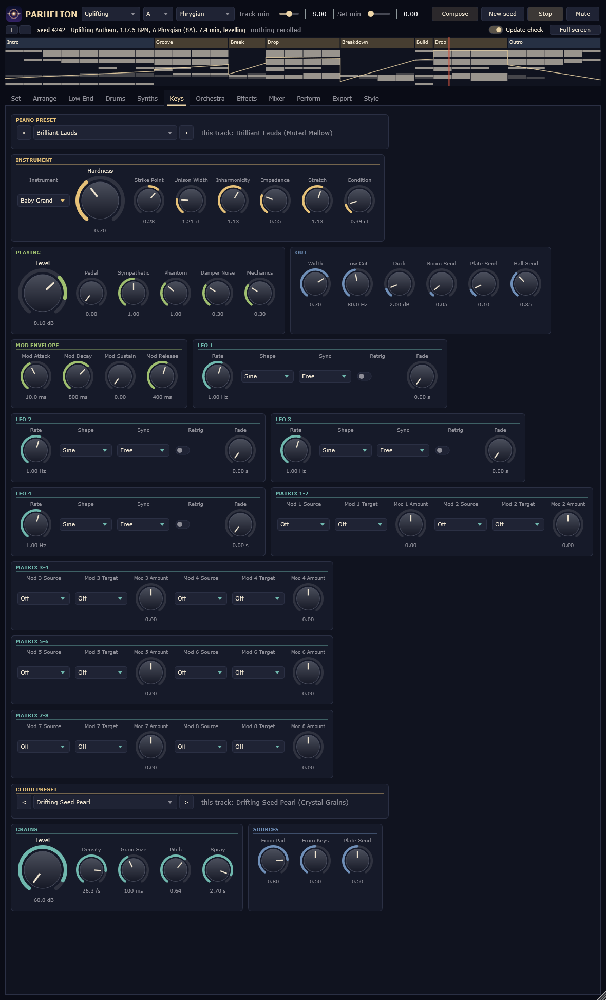
The piano is a physical model, not a sample: for every key a string of the length, tension and stiffness of a real instrument (four of them: Grand, Baby Grand, Upright and Soft, the slightly muffled piano of Dream House), one to three strings per note, a felt hammer, a soundboard solved as a ribbed orthotropic plate, the damper, the pedal and the sympathetic strings. Its stretched tuning comes from the strings' stiffness. Its voicing was set note by note against a concert grand (Pianoteq's Steinway D): the level over the keyboard and the velocity, how bright a note is and how much brighter a harder blow makes it, the two stages of its decay, the action's knock and the body in the first moments, how fast the damper takes a note away. In Dream House it plays the motif, the pedal down and lifted at every chord change.
The grain cloud hears the pad, the pluck and the piano and scatters them in grains into the plate -- Deep's haze and Dream House's breath.
| Control | Key | Range | Default |
|---|---|---|---|
| Instrument | piano.instrument | Grand, Baby Grand, Upright, Soft | Grand |
| Hardness | piano.hardness | 0.25 .. 4 | 1 |
| Strike Point | piano.strike | -1 .. 1 | 0 |
| Unison Width | piano.unison | 0 .. 6 ct | 1 ct |
| Inharmonicity | piano.inharm | 0.25 .. 3 | 1 |
| Impedance | piano.impedance | 0.3 .. 3 | 1 |
| Stretch | piano.stretch | 0 .. 2 | 1 |
| Condition | piano.condition | 0 .. 3 ct | 0.3 ct |
| Level | piano.level | -36 .. 6 dB | -6 dB |
| Pedal | piano.pedal | 0 .. 1 | 0 |
| Sympathetic | piano.sympathetic | 0 .. 2 | 1 |
| Phantom | piano.phantom | 0 .. 3 | 1 |
| Damper Noise | piano.damper_noise | 0 .. 1 | 0.3 |
| Mechanics | piano.mechanics | 0 .. 1 | 0.3 |
| Width | piano.width | 0 .. 1 | 0.7 |
| Low Cut | piano.low_cut | 20 .. 400 Hz | 80 Hz |
| Duck | piano.duck | 0 .. 18 dB | 2 dB |
| Room Send | piano.room_send | 0 .. 1 | 0.05 |
| Plate Send | piano.plate_send | 0 .. 1 | 0.1 |
| Hall Send | piano.hall_send | 0 .. 1 | 0.35 |
| Mod Attack | piano.menv_attack | 0.1 .. 8000 ms | 10 ms |
| Mod Decay | piano.menv_decay | 5 .. 12000 ms | 800 ms |
| Mod Sustain | piano.menv_sustain | 0 .. 1 | 0 |
| Mod Release | piano.menv_release | 5 .. 12000 ms | 400 ms |
| LFO 1 Rate | piano.lfo1_rate | 0.01 .. 40 Hz | 1 Hz |
| LFO 1 Shape | piano.lfo1_shape | Sine, Triangle, Saw Up, Saw Down, Square, Sample & Hold, Smooth Random | Sine |
| LFO 1 Sync | piano.lfo1_sync | Free, 4 Bars, 2 Bars, 1 Bar, 1/2, 1/4, 1/8, 1/16, 1/4 T, 1/8 T | Free |
| LFO 1 Retrig | piano.lfo1_retrig | off / on | off |
| LFO 1 Fade | piano.lfo1_fade | 0 .. 8 s | 0 s |
| LFO 2 Rate | piano.lfo2_rate | 0.01 .. 40 Hz | 1 Hz |
| LFO 2 Shape | piano.lfo2_shape | Sine, Triangle, Saw Up, Saw Down, Square, Sample & Hold, Smooth Random | Sine |
| LFO 2 Sync | piano.lfo2_sync | Free, 4 Bars, 2 Bars, 1 Bar, 1/2, 1/4, 1/8, 1/16, 1/4 T, 1/8 T | Free |
| LFO 2 Retrig | piano.lfo2_retrig | off / on | off |
| LFO 2 Fade | piano.lfo2_fade | 0 .. 8 s | 0 s |
| LFO 3 Rate | piano.lfo3_rate | 0.01 .. 40 Hz | 1 Hz |
| LFO 3 Shape | piano.lfo3_shape | Sine, Triangle, Saw Up, Saw Down, Square, Sample & Hold, Smooth Random | Sine |
| LFO 3 Sync | piano.lfo3_sync | Free, 4 Bars, 2 Bars, 1 Bar, 1/2, 1/4, 1/8, 1/16, 1/4 T, 1/8 T | Free |
| LFO 3 Retrig | piano.lfo3_retrig | off / on | off |
| LFO 3 Fade | piano.lfo3_fade | 0 .. 8 s | 0 s |
| LFO 4 Rate | piano.lfo4_rate | 0.01 .. 40 Hz | 1 Hz |
| LFO 4 Shape | piano.lfo4_shape | Sine, Triangle, Saw Up, Saw Down, Square, Sample & Hold, Smooth Random | Sine |
| LFO 4 Sync | piano.lfo4_sync | Free, 4 Bars, 2 Bars, 1 Bar, 1/2, 1/4, 1/8, 1/16, 1/4 T, 1/8 T | Free |
| LFO 4 Retrig | piano.lfo4_retrig | off / on | off |
| LFO 4 Fade | piano.lfo4_fade | 0 .. 8 s | 0 s |
| Mod 1 Source | piano.mx1_src | Off, LFO 1, LFO 2, LFO 3, LFO 4, Mod Env, Filter Env, Velocity, Key, Random, Wheel, Pressure, Energy | Off |
| Mod 1 Target | piano.mx1_dst | Off, Pitch, Hardness, Level, Pan | Off |
| Mod 1 Amount | piano.mx1_amount | -1 .. 1 | 0 |
| Mod 2 Source | piano.mx2_src | Off, LFO 1, LFO 2, LFO 3, LFO 4, Mod Env, Filter Env, Velocity, Key, Random, Wheel, Pressure, Energy | Off |
| Mod 2 Target | piano.mx2_dst | Off, Pitch, Hardness, Level, Pan | Off |
| Mod 2 Amount | piano.mx2_amount | -1 .. 1 | 0 |
| Mod 3 Source | piano.mx3_src | Off, LFO 1, LFO 2, LFO 3, LFO 4, Mod Env, Filter Env, Velocity, Key, Random, Wheel, Pressure, Energy | Off |
| Mod 3 Target | piano.mx3_dst | Off, Pitch, Hardness, Level, Pan | Off |
| Mod 3 Amount | piano.mx3_amount | -1 .. 1 | 0 |
| Mod 4 Source | piano.mx4_src | Off, LFO 1, LFO 2, LFO 3, LFO 4, Mod Env, Filter Env, Velocity, Key, Random, Wheel, Pressure, Energy | Off |
| Mod 4 Target | piano.mx4_dst | Off, Pitch, Hardness, Level, Pan | Off |
| Mod 4 Amount | piano.mx4_amount | -1 .. 1 | 0 |
| Mod 5 Source | piano.mx5_src | Off, LFO 1, LFO 2, LFO 3, LFO 4, Mod Env, Filter Env, Velocity, Key, Random, Wheel, Pressure, Energy | Off |
| Mod 5 Target | piano.mx5_dst | Off, Pitch, Hardness, Level, Pan | Off |
| Mod 5 Amount | piano.mx5_amount | -1 .. 1 | 0 |
| Mod 6 Source | piano.mx6_src | Off, LFO 1, LFO 2, LFO 3, LFO 4, Mod Env, Filter Env, Velocity, Key, Random, Wheel, Pressure, Energy | Off |
| Mod 6 Target | piano.mx6_dst | Off, Pitch, Hardness, Level, Pan | Off |
| Mod 6 Amount | piano.mx6_amount | -1 .. 1 | 0 |
| Mod 7 Source | piano.mx7_src | Off, LFO 1, LFO 2, LFO 3, LFO 4, Mod Env, Filter Env, Velocity, Key, Random, Wheel, Pressure, Energy | Off |
| Mod 7 Target | piano.mx7_dst | Off, Pitch, Hardness, Level, Pan | Off |
| Mod 7 Amount | piano.mx7_amount | -1 .. 1 | 0 |
| Mod 8 Source | piano.mx8_src | Off, LFO 1, LFO 2, LFO 3, LFO 4, Mod Env, Filter Env, Velocity, Key, Random, Wheel, Pressure, Energy | Off |
| Mod 8 Target | piano.mx8_dst | Off, Pitch, Hardness, Level, Pan | Off |
| Mod 8 Amount | piano.mx8_amount | -1 .. 1 | 0 |
| Control | Key | Range | Default |
|---|---|---|---|
| Level | cloud.level | -60 .. 6 dB | -60 dB |
| Density | cloud.density | 0.5 .. 60 /s | 10 /s |
| Grain Size | cloud.size | 20 .. 1000 ms | 260 ms |
| Pitch | cloud.pitch | 0 .. 1 | 0.3 |
| Spray | cloud.spray | 0.05 .. 4.5 s | 2.5 s |
| From Pad | cloud.pad_send | 0 .. 1 | 0.8 |
| From Keys | cloud.keys_send | 0 .. 1 | 0.5 |
| Plate Send | cloud.plate_send | 0 .. 1 | 0.5 |
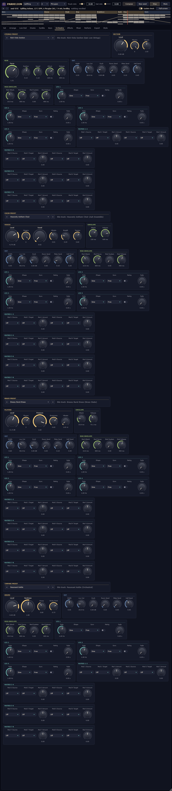
The Cinematic tracks of Uplifting (and some of Dream House and Deep) bring an orchestra, all of it modelled. The strings: six players a note, each a modal string under a bow with the friction of rosin, their own intonation, attack and vibrato, in the body of a violin, viola, cello or double bass by register. The choir: a glottal source with the tension of the voice, five formants per singer on the vowels a, o and u, breath and vibrato. The brass: a lip that buzzes into a bore and its bell, brighter with more breath. The timpani: the modes of a kettle drum under a felt mallet.
The strings enter with the main breakdown's tease and take the melody at its peak; the choir sings at the peak and in the second half of the main drop; at every drop the brass play a braam (the root low, its fifth, the octave) and the timpani strike, after a roll in the two bars before it.
| Control | Key | Range | Default |
|---|---|---|---|
| Level | strings.level | -36 .. 6 dB | -6 dB |
| Players | strings.players | 1 .. 6 | 6 |
| Vibrato | strings.vibrato | 0 .. 2 | 1 |
| Bow Force | strings.pressure | 0.3 .. 3 | 1 |
| Bow Position | strings.position | -1 .. 1 | 0 |
| Bow Speed | strings.speed | 0.3 .. 3 | 1 |
| Attack | strings.attack | 5 .. 800 ms | 90 ms |
| Release | strings.release | 10 .. 1500 ms | 180 ms |
| Width | strings.width | 0 .. 1 | 0.55 |
| Low Cut | strings.low_cut | 20 .. 400 Hz | 60 Hz |
| Duck | strings.duck | 0 .. 18 dB | 3 dB |
| Room Send | strings.room_send | 0 .. 1 | 0.05 |
| Plate Send | strings.plate_send | 0 .. 1 | 0.1 |
| Hall Send | strings.hall_send | 0 .. 1 | 0.45 |
| Mod Attack | strings.menv_attack | 0.1 .. 8000 ms | 10 ms |
| Mod Decay | strings.menv_decay | 5 .. 12000 ms | 800 ms |
| Mod Sustain | strings.menv_sustain | 0 .. 1 | 0 |
| Mod Release | strings.menv_release | 5 .. 12000 ms | 400 ms |
| LFO 1 Rate | strings.lfo1_rate | 0.01 .. 40 Hz | 1 Hz |
| LFO 1 Shape | strings.lfo1_shape | Sine, Triangle, Saw Up, Saw Down, Square, Sample & Hold, Smooth Random | Sine |
| LFO 1 Sync | strings.lfo1_sync | Free, 4 Bars, 2 Bars, 1 Bar, 1/2, 1/4, 1/8, 1/16, 1/4 T, 1/8 T | Free |
| LFO 1 Retrig | strings.lfo1_retrig | off / on | off |
| LFO 1 Fade | strings.lfo1_fade | 0 .. 8 s | 0 s |
| LFO 2 Rate | strings.lfo2_rate | 0.01 .. 40 Hz | 1 Hz |
| LFO 2 Shape | strings.lfo2_shape | Sine, Triangle, Saw Up, Saw Down, Square, Sample & Hold, Smooth Random | Sine |
| LFO 2 Sync | strings.lfo2_sync | Free, 4 Bars, 2 Bars, 1 Bar, 1/2, 1/4, 1/8, 1/16, 1/4 T, 1/8 T | Free |
| LFO 2 Retrig | strings.lfo2_retrig | off / on | off |
| LFO 2 Fade | strings.lfo2_fade | 0 .. 8 s | 0 s |
| LFO 3 Rate | strings.lfo3_rate | 0.01 .. 40 Hz | 1 Hz |
| LFO 3 Shape | strings.lfo3_shape | Sine, Triangle, Saw Up, Saw Down, Square, Sample & Hold, Smooth Random | Sine |
| LFO 3 Sync | strings.lfo3_sync | Free, 4 Bars, 2 Bars, 1 Bar, 1/2, 1/4, 1/8, 1/16, 1/4 T, 1/8 T | Free |
| LFO 3 Retrig | strings.lfo3_retrig | off / on | off |
| LFO 3 Fade | strings.lfo3_fade | 0 .. 8 s | 0 s |
| LFO 4 Rate | strings.lfo4_rate | 0.01 .. 40 Hz | 1 Hz |
| LFO 4 Shape | strings.lfo4_shape | Sine, Triangle, Saw Up, Saw Down, Square, Sample & Hold, Smooth Random | Sine |
| LFO 4 Sync | strings.lfo4_sync | Free, 4 Bars, 2 Bars, 1 Bar, 1/2, 1/4, 1/8, 1/16, 1/4 T, 1/8 T | Free |
| LFO 4 Retrig | strings.lfo4_retrig | off / on | off |
| LFO 4 Fade | strings.lfo4_fade | 0 .. 8 s | 0 s |
| Mod 1 Source | strings.mx1_src | Off, LFO 1, LFO 2, LFO 3, LFO 4, Mod Env, Filter Env, Velocity, Key, Random, Wheel, Pressure, Energy | Off |
| Mod 1 Target | strings.mx1_dst | Off, Pitch, Bow Pressure, Bow Speed, Bow Position, Vibrato, Vibrato Rate, Level, Pan | Off |
| Mod 1 Amount | strings.mx1_amount | -1 .. 1 | 0 |
| Mod 2 Source | strings.mx2_src | Off, LFO 1, LFO 2, LFO 3, LFO 4, Mod Env, Filter Env, Velocity, Key, Random, Wheel, Pressure, Energy | Off |
| Mod 2 Target | strings.mx2_dst | Off, Pitch, Bow Pressure, Bow Speed, Bow Position, Vibrato, Vibrato Rate, Level, Pan | Off |
| Mod 2 Amount | strings.mx2_amount | -1 .. 1 | 0 |
| Mod 3 Source | strings.mx3_src | Off, LFO 1, LFO 2, LFO 3, LFO 4, Mod Env, Filter Env, Velocity, Key, Random, Wheel, Pressure, Energy | Off |
| Mod 3 Target | strings.mx3_dst | Off, Pitch, Bow Pressure, Bow Speed, Bow Position, Vibrato, Vibrato Rate, Level, Pan | Off |
| Mod 3 Amount | strings.mx3_amount | -1 .. 1 | 0 |
| Mod 4 Source | strings.mx4_src | Off, LFO 1, LFO 2, LFO 3, LFO 4, Mod Env, Filter Env, Velocity, Key, Random, Wheel, Pressure, Energy | Off |
| Mod 4 Target | strings.mx4_dst | Off, Pitch, Bow Pressure, Bow Speed, Bow Position, Vibrato, Vibrato Rate, Level, Pan | Off |
| Mod 4 Amount | strings.mx4_amount | -1 .. 1 | 0 |
| Mod 5 Source | strings.mx5_src | Off, LFO 1, LFO 2, LFO 3, LFO 4, Mod Env, Filter Env, Velocity, Key, Random, Wheel, Pressure, Energy | Off |
| Mod 5 Target | strings.mx5_dst | Off, Pitch, Bow Pressure, Bow Speed, Bow Position, Vibrato, Vibrato Rate, Level, Pan | Off |
| Mod 5 Amount | strings.mx5_amount | -1 .. 1 | 0 |
| Mod 6 Source | strings.mx6_src | Off, LFO 1, LFO 2, LFO 3, LFO 4, Mod Env, Filter Env, Velocity, Key, Random, Wheel, Pressure, Energy | Off |
| Mod 6 Target | strings.mx6_dst | Off, Pitch, Bow Pressure, Bow Speed, Bow Position, Vibrato, Vibrato Rate, Level, Pan | Off |
| Mod 6 Amount | strings.mx6_amount | -1 .. 1 | 0 |
| Mod 7 Source | strings.mx7_src | Off, LFO 1, LFO 2, LFO 3, LFO 4, Mod Env, Filter Env, Velocity, Key, Random, Wheel, Pressure, Energy | Off |
| Mod 7 Target | strings.mx7_dst | Off, Pitch, Bow Pressure, Bow Speed, Bow Position, Vibrato, Vibrato Rate, Level, Pan | Off |
| Mod 7 Amount | strings.mx7_amount | -1 .. 1 | 0 |
| Mod 8 Source | strings.mx8_src | Off, LFO 1, LFO 2, LFO 3, LFO 4, Mod Env, Filter Env, Velocity, Key, Random, Wheel, Pressure, Energy | Off |
| Mod 8 Target | strings.mx8_dst | Off, Pitch, Bow Pressure, Bow Speed, Bow Position, Vibrato, Vibrato Rate, Level, Pan | Off |
| Mod 8 Amount | strings.mx8_amount | -1 .. 1 | 0 |
| Control | Key | Range | Default |
|---|---|---|---|
| Level | choir.level | -36 .. 6 dB | -6 dB |
| Singers | choir.singers | 1 .. 6 | 6 |
| Vowel | choir.vowel | 0 .. 1 | 0 |
| Vibrato | choir.vibrato | 0 .. 2 | 1 |
| Breath | choir.breath | 0 .. 1 | 0.25 |
| Tension | choir.tension | 0 .. 1 | 0.4 |
| Attack | choir.attack | 5 .. 1500 ms | 250 ms |
| Release | choir.release | 10 .. 2000 ms | 400 ms |
| Width | choir.width | 0 .. 1 | 0.55 |
| Low Cut | choir.low_cut | 20 .. 400 Hz | 90 Hz |
| Duck | choir.duck | 0 .. 18 dB | 3 dB |
| Room Send | choir.room_send | 0 .. 1 | 0 |
| Plate Send | choir.plate_send | 0 .. 1 | 0.1 |
| Hall Send | choir.hall_send | 0 .. 1 | 0.55 |
| Mod Attack | choir.menv_attack | 0.1 .. 8000 ms | 10 ms |
| Mod Decay | choir.menv_decay | 5 .. 12000 ms | 800 ms |
| Mod Sustain | choir.menv_sustain | 0 .. 1 | 0 |
| Mod Release | choir.menv_release | 5 .. 12000 ms | 400 ms |
| LFO 1 Rate | choir.lfo1_rate | 0.01 .. 40 Hz | 1 Hz |
| LFO 1 Shape | choir.lfo1_shape | Sine, Triangle, Saw Up, Saw Down, Square, Sample & Hold, Smooth Random | Sine |
| LFO 1 Sync | choir.lfo1_sync | Free, 4 Bars, 2 Bars, 1 Bar, 1/2, 1/4, 1/8, 1/16, 1/4 T, 1/8 T | Free |
| LFO 1 Retrig | choir.lfo1_retrig | off / on | off |
| LFO 1 Fade | choir.lfo1_fade | 0 .. 8 s | 0 s |
| LFO 2 Rate | choir.lfo2_rate | 0.01 .. 40 Hz | 1 Hz |
| LFO 2 Shape | choir.lfo2_shape | Sine, Triangle, Saw Up, Saw Down, Square, Sample & Hold, Smooth Random | Sine |
| LFO 2 Sync | choir.lfo2_sync | Free, 4 Bars, 2 Bars, 1 Bar, 1/2, 1/4, 1/8, 1/16, 1/4 T, 1/8 T | Free |
| LFO 2 Retrig | choir.lfo2_retrig | off / on | off |
| LFO 2 Fade | choir.lfo2_fade | 0 .. 8 s | 0 s |
| LFO 3 Rate | choir.lfo3_rate | 0.01 .. 40 Hz | 1 Hz |
| LFO 3 Shape | choir.lfo3_shape | Sine, Triangle, Saw Up, Saw Down, Square, Sample & Hold, Smooth Random | Sine |
| LFO 3 Sync | choir.lfo3_sync | Free, 4 Bars, 2 Bars, 1 Bar, 1/2, 1/4, 1/8, 1/16, 1/4 T, 1/8 T | Free |
| LFO 3 Retrig | choir.lfo3_retrig | off / on | off |
| LFO 3 Fade | choir.lfo3_fade | 0 .. 8 s | 0 s |
| LFO 4 Rate | choir.lfo4_rate | 0.01 .. 40 Hz | 1 Hz |
| LFO 4 Shape | choir.lfo4_shape | Sine, Triangle, Saw Up, Saw Down, Square, Sample & Hold, Smooth Random | Sine |
| LFO 4 Sync | choir.lfo4_sync | Free, 4 Bars, 2 Bars, 1 Bar, 1/2, 1/4, 1/8, 1/16, 1/4 T, 1/8 T | Free |
| LFO 4 Retrig | choir.lfo4_retrig | off / on | off |
| LFO 4 Fade | choir.lfo4_fade | 0 .. 8 s | 0 s |
| Mod 1 Source | choir.mx1_src | Off, LFO 1, LFO 2, LFO 3, LFO 4, Mod Env, Filter Env, Velocity, Key, Random, Wheel, Pressure, Energy | Off |
| Mod 1 Target | choir.mx1_dst | Off, Pitch, Vowel, Tension, Breath, Vibrato, Formant, Level, Pan | Off |
| Mod 1 Amount | choir.mx1_amount | -1 .. 1 | 0 |
| Mod 2 Source | choir.mx2_src | Off, LFO 1, LFO 2, LFO 3, LFO 4, Mod Env, Filter Env, Velocity, Key, Random, Wheel, Pressure, Energy | Off |
| Mod 2 Target | choir.mx2_dst | Off, Pitch, Vowel, Tension, Breath, Vibrato, Formant, Level, Pan | Off |
| Mod 2 Amount | choir.mx2_amount | -1 .. 1 | 0 |
| Mod 3 Source | choir.mx3_src | Off, LFO 1, LFO 2, LFO 3, LFO 4, Mod Env, Filter Env, Velocity, Key, Random, Wheel, Pressure, Energy | Off |
| Mod 3 Target | choir.mx3_dst | Off, Pitch, Vowel, Tension, Breath, Vibrato, Formant, Level, Pan | Off |
| Mod 3 Amount | choir.mx3_amount | -1 .. 1 | 0 |
| Mod 4 Source | choir.mx4_src | Off, LFO 1, LFO 2, LFO 3, LFO 4, Mod Env, Filter Env, Velocity, Key, Random, Wheel, Pressure, Energy | Off |
| Mod 4 Target | choir.mx4_dst | Off, Pitch, Vowel, Tension, Breath, Vibrato, Formant, Level, Pan | Off |
| Mod 4 Amount | choir.mx4_amount | -1 .. 1 | 0 |
| Mod 5 Source | choir.mx5_src | Off, LFO 1, LFO 2, LFO 3, LFO 4, Mod Env, Filter Env, Velocity, Key, Random, Wheel, Pressure, Energy | Off |
| Mod 5 Target | choir.mx5_dst | Off, Pitch, Vowel, Tension, Breath, Vibrato, Formant, Level, Pan | Off |
| Mod 5 Amount | choir.mx5_amount | -1 .. 1 | 0 |
| Mod 6 Source | choir.mx6_src | Off, LFO 1, LFO 2, LFO 3, LFO 4, Mod Env, Filter Env, Velocity, Key, Random, Wheel, Pressure, Energy | Off |
| Mod 6 Target | choir.mx6_dst | Off, Pitch, Vowel, Tension, Breath, Vibrato, Formant, Level, Pan | Off |
| Mod 6 Amount | choir.mx6_amount | -1 .. 1 | 0 |
| Mod 7 Source | choir.mx7_src | Off, LFO 1, LFO 2, LFO 3, LFO 4, Mod Env, Filter Env, Velocity, Key, Random, Wheel, Pressure, Energy | Off |
| Mod 7 Target | choir.mx7_dst | Off, Pitch, Vowel, Tension, Breath, Vibrato, Formant, Level, Pan | Off |
| Mod 7 Amount | choir.mx7_amount | -1 .. 1 | 0 |
| Mod 8 Source | choir.mx8_src | Off, LFO 1, LFO 2, LFO 3, LFO 4, Mod Env, Filter Env, Velocity, Key, Random, Wheel, Pressure, Energy | Off |
| Mod 8 Target | choir.mx8_dst | Off, Pitch, Vowel, Tension, Breath, Vibrato, Formant, Level, Pan | Off |
| Mod 8 Amount | choir.mx8_amount | -1 .. 1 | 0 |
| Control | Key | Range | Default |
|---|---|---|---|
| Level | brass.level | -36 .. 6 dB | -6 dB |
| Players | brass.players | 1 .. 4 | 3 |
| Pressure | brass.pressure | 0.3 .. 2 | 1 |
| Brassiness | brass.brassiness | 0 .. 1 | 0.35 |
| Attack | brass.attack | 5 .. 800 ms | 40 ms |
| Release | brass.release | 10 .. 1500 ms | 150 ms |
| Vibrato | brass.vibrato | 0 .. 40 ct | 6 ct |
| Width | brass.width | 0 .. 1 | 0.6 |
| Low Cut | brass.low_cut | 20 .. 400 Hz | 50 Hz |
| Duck | brass.duck | 0 .. 18 dB | 3 dB |
| Room Send | brass.room_send | 0 .. 1 | 0.05 |
| Plate Send | brass.plate_send | 0 .. 1 | 0.1 |
| Hall Send | brass.hall_send | 0 .. 1 | 0.45 |
| Mod Attack | brass.menv_attack | 0.1 .. 8000 ms | 10 ms |
| Mod Decay | brass.menv_decay | 5 .. 12000 ms | 800 ms |
| Mod Sustain | brass.menv_sustain | 0 .. 1 | 0 |
| Mod Release | brass.menv_release | 5 .. 12000 ms | 400 ms |
| LFO 1 Rate | brass.lfo1_rate | 0.01 .. 40 Hz | 1 Hz |
| LFO 1 Shape | brass.lfo1_shape | Sine, Triangle, Saw Up, Saw Down, Square, Sample & Hold, Smooth Random | Sine |
| LFO 1 Sync | brass.lfo1_sync | Free, 4 Bars, 2 Bars, 1 Bar, 1/2, 1/4, 1/8, 1/16, 1/4 T, 1/8 T | Free |
| LFO 1 Retrig | brass.lfo1_retrig | off / on | off |
| LFO 1 Fade | brass.lfo1_fade | 0 .. 8 s | 0 s |
| LFO 2 Rate | brass.lfo2_rate | 0.01 .. 40 Hz | 1 Hz |
| LFO 2 Shape | brass.lfo2_shape | Sine, Triangle, Saw Up, Saw Down, Square, Sample & Hold, Smooth Random | Sine |
| LFO 2 Sync | brass.lfo2_sync | Free, 4 Bars, 2 Bars, 1 Bar, 1/2, 1/4, 1/8, 1/16, 1/4 T, 1/8 T | Free |
| LFO 2 Retrig | brass.lfo2_retrig | off / on | off |
| LFO 2 Fade | brass.lfo2_fade | 0 .. 8 s | 0 s |
| LFO 3 Rate | brass.lfo3_rate | 0.01 .. 40 Hz | 1 Hz |
| LFO 3 Shape | brass.lfo3_shape | Sine, Triangle, Saw Up, Saw Down, Square, Sample & Hold, Smooth Random | Sine |
| LFO 3 Sync | brass.lfo3_sync | Free, 4 Bars, 2 Bars, 1 Bar, 1/2, 1/4, 1/8, 1/16, 1/4 T, 1/8 T | Free |
| LFO 3 Retrig | brass.lfo3_retrig | off / on | off |
| LFO 3 Fade | brass.lfo3_fade | 0 .. 8 s | 0 s |
| LFO 4 Rate | brass.lfo4_rate | 0.01 .. 40 Hz | 1 Hz |
| LFO 4 Shape | brass.lfo4_shape | Sine, Triangle, Saw Up, Saw Down, Square, Sample & Hold, Smooth Random | Sine |
| LFO 4 Sync | brass.lfo4_sync | Free, 4 Bars, 2 Bars, 1 Bar, 1/2, 1/4, 1/8, 1/16, 1/4 T, 1/8 T | Free |
| LFO 4 Retrig | brass.lfo4_retrig | off / on | off |
| LFO 4 Fade | brass.lfo4_fade | 0 .. 8 s | 0 s |
| Mod 1 Source | brass.mx1_src | Off, LFO 1, LFO 2, LFO 3, LFO 4, Mod Env, Filter Env, Velocity, Key, Random, Wheel, Pressure, Energy | Off |
| Mod 1 Target | brass.mx1_dst | Off, Pitch, Breath, Brassiness, Vibrato, Level, Pan | Off |
| Mod 1 Amount | brass.mx1_amount | -1 .. 1 | 0 |
| Mod 2 Source | brass.mx2_src | Off, LFO 1, LFO 2, LFO 3, LFO 4, Mod Env, Filter Env, Velocity, Key, Random, Wheel, Pressure, Energy | Off |
| Mod 2 Target | brass.mx2_dst | Off, Pitch, Breath, Brassiness, Vibrato, Level, Pan | Off |
| Mod 2 Amount | brass.mx2_amount | -1 .. 1 | 0 |
| Mod 3 Source | brass.mx3_src | Off, LFO 1, LFO 2, LFO 3, LFO 4, Mod Env, Filter Env, Velocity, Key, Random, Wheel, Pressure, Energy | Off |
| Mod 3 Target | brass.mx3_dst | Off, Pitch, Breath, Brassiness, Vibrato, Level, Pan | Off |
| Mod 3 Amount | brass.mx3_amount | -1 .. 1 | 0 |
| Mod 4 Source | brass.mx4_src | Off, LFO 1, LFO 2, LFO 3, LFO 4, Mod Env, Filter Env, Velocity, Key, Random, Wheel, Pressure, Energy | Off |
| Mod 4 Target | brass.mx4_dst | Off, Pitch, Breath, Brassiness, Vibrato, Level, Pan | Off |
| Mod 4 Amount | brass.mx4_amount | -1 .. 1 | 0 |
| Mod 5 Source | brass.mx5_src | Off, LFO 1, LFO 2, LFO 3, LFO 4, Mod Env, Filter Env, Velocity, Key, Random, Wheel, Pressure, Energy | Off |
| Mod 5 Target | brass.mx5_dst | Off, Pitch, Breath, Brassiness, Vibrato, Level, Pan | Off |
| Mod 5 Amount | brass.mx5_amount | -1 .. 1 | 0 |
| Mod 6 Source | brass.mx6_src | Off, LFO 1, LFO 2, LFO 3, LFO 4, Mod Env, Filter Env, Velocity, Key, Random, Wheel, Pressure, Energy | Off |
| Mod 6 Target | brass.mx6_dst | Off, Pitch, Breath, Brassiness, Vibrato, Level, Pan | Off |
| Mod 6 Amount | brass.mx6_amount | -1 .. 1 | 0 |
| Mod 7 Source | brass.mx7_src | Off, LFO 1, LFO 2, LFO 3, LFO 4, Mod Env, Filter Env, Velocity, Key, Random, Wheel, Pressure, Energy | Off |
| Mod 7 Target | brass.mx7_dst | Off, Pitch, Breath, Brassiness, Vibrato, Level, Pan | Off |
| Mod 7 Amount | brass.mx7_amount | -1 .. 1 | 0 |
| Mod 8 Source | brass.mx8_src | Off, LFO 1, LFO 2, LFO 3, LFO 4, Mod Env, Filter Env, Velocity, Key, Random, Wheel, Pressure, Energy | Off |
| Mod 8 Target | brass.mx8_dst | Off, Pitch, Breath, Brassiness, Vibrato, Level, Pan | Off |
| Mod 8 Amount | brass.mx8_amount | -1 .. 1 | 0 |
| Control | Key | Range | Default |
|---|---|---|---|
| Level | timpani.level | -36 .. 6 dB | -6 dB |
| Hardness | timpani.hardness | 0.25 .. 4 | 1 |
| Decay | timpani.decay | 0.3 .. 3 | 1 |
| Strike Point | timpani.strike | 0.3 .. 0.9 | 0.68 |
| Width | timpani.width | 0 .. 1 | 0.5 |
| Low Cut | timpani.low_cut | 20 .. 400 Hz | 35 Hz |
| Duck | timpani.duck | 0 .. 18 dB | 0 dB |
| Room Send | timpani.room_send | 0 .. 1 | 0.05 |
| Plate Send | timpani.plate_send | 0 .. 1 | 0.05 |
| Hall Send | timpani.hall_send | 0 .. 1 | 0.4 |
| Mod Attack | timpani.menv_attack | 0.1 .. 8000 ms | 10 ms |
| Mod Decay | timpani.menv_decay | 5 .. 12000 ms | 800 ms |
| Mod Sustain | timpani.menv_sustain | 0 .. 1 | 0 |
| Mod Release | timpani.menv_release | 5 .. 12000 ms | 400 ms |
| LFO 1 Rate | timpani.lfo1_rate | 0.01 .. 40 Hz | 1 Hz |
| LFO 1 Shape | timpani.lfo1_shape | Sine, Triangle, Saw Up, Saw Down, Square, Sample & Hold, Smooth Random | Sine |
| LFO 1 Sync | timpani.lfo1_sync | Free, 4 Bars, 2 Bars, 1 Bar, 1/2, 1/4, 1/8, 1/16, 1/4 T, 1/8 T | Free |
| LFO 1 Retrig | timpani.lfo1_retrig | off / on | off |
| LFO 1 Fade | timpani.lfo1_fade | 0 .. 8 s | 0 s |
| LFO 2 Rate | timpani.lfo2_rate | 0.01 .. 40 Hz | 1 Hz |
| LFO 2 Shape | timpani.lfo2_shape | Sine, Triangle, Saw Up, Saw Down, Square, Sample & Hold, Smooth Random | Sine |
| LFO 2 Sync | timpani.lfo2_sync | Free, 4 Bars, 2 Bars, 1 Bar, 1/2, 1/4, 1/8, 1/16, 1/4 T, 1/8 T | Free |
| LFO 2 Retrig | timpani.lfo2_retrig | off / on | off |
| LFO 2 Fade | timpani.lfo2_fade | 0 .. 8 s | 0 s |
| LFO 3 Rate | timpani.lfo3_rate | 0.01 .. 40 Hz | 1 Hz |
| LFO 3 Shape | timpani.lfo3_shape | Sine, Triangle, Saw Up, Saw Down, Square, Sample & Hold, Smooth Random | Sine |
| LFO 3 Sync | timpani.lfo3_sync | Free, 4 Bars, 2 Bars, 1 Bar, 1/2, 1/4, 1/8, 1/16, 1/4 T, 1/8 T | Free |
| LFO 3 Retrig | timpani.lfo3_retrig | off / on | off |
| LFO 3 Fade | timpani.lfo3_fade | 0 .. 8 s | 0 s |
| LFO 4 Rate | timpani.lfo4_rate | 0.01 .. 40 Hz | 1 Hz |
| LFO 4 Shape | timpani.lfo4_shape | Sine, Triangle, Saw Up, Saw Down, Square, Sample & Hold, Smooth Random | Sine |
| LFO 4 Sync | timpani.lfo4_sync | Free, 4 Bars, 2 Bars, 1 Bar, 1/2, 1/4, 1/8, 1/16, 1/4 T, 1/8 T | Free |
| LFO 4 Retrig | timpani.lfo4_retrig | off / on | off |
| LFO 4 Fade | timpani.lfo4_fade | 0 .. 8 s | 0 s |
| Mod 1 Source | timpani.mx1_src | Off, LFO 1, LFO 2, LFO 3, LFO 4, Mod Env, Filter Env, Velocity, Key, Random, Wheel, Pressure, Energy | Off |
| Mod 1 Target | timpani.mx1_dst | Off, Pitch, Hardness, Strike, Decay, Level, Pan | Off |
| Mod 1 Amount | timpani.mx1_amount | -1 .. 1 | 0 |
| Mod 2 Source | timpani.mx2_src | Off, LFO 1, LFO 2, LFO 3, LFO 4, Mod Env, Filter Env, Velocity, Key, Random, Wheel, Pressure, Energy | Off |
| Mod 2 Target | timpani.mx2_dst | Off, Pitch, Hardness, Strike, Decay, Level, Pan | Off |
| Mod 2 Amount | timpani.mx2_amount | -1 .. 1 | 0 |
| Mod 3 Source | timpani.mx3_src | Off, LFO 1, LFO 2, LFO 3, LFO 4, Mod Env, Filter Env, Velocity, Key, Random, Wheel, Pressure, Energy | Off |
| Mod 3 Target | timpani.mx3_dst | Off, Pitch, Hardness, Strike, Decay, Level, Pan | Off |
| Mod 3 Amount | timpani.mx3_amount | -1 .. 1 | 0 |
| Mod 4 Source | timpani.mx4_src | Off, LFO 1, LFO 2, LFO 3, LFO 4, Mod Env, Filter Env, Velocity, Key, Random, Wheel, Pressure, Energy | Off |
| Mod 4 Target | timpani.mx4_dst | Off, Pitch, Hardness, Strike, Decay, Level, Pan | Off |
| Mod 4 Amount | timpani.mx4_amount | -1 .. 1 | 0 |
| Mod 5 Source | timpani.mx5_src | Off, LFO 1, LFO 2, LFO 3, LFO 4, Mod Env, Filter Env, Velocity, Key, Random, Wheel, Pressure, Energy | Off |
| Mod 5 Target | timpani.mx5_dst | Off, Pitch, Hardness, Strike, Decay, Level, Pan | Off |
| Mod 5 Amount | timpani.mx5_amount | -1 .. 1 | 0 |
| Mod 6 Source | timpani.mx6_src | Off, LFO 1, LFO 2, LFO 3, LFO 4, Mod Env, Filter Env, Velocity, Key, Random, Wheel, Pressure, Energy | Off |
| Mod 6 Target | timpani.mx6_dst | Off, Pitch, Hardness, Strike, Decay, Level, Pan | Off |
| Mod 6 Amount | timpani.mx6_amount | -1 .. 1 | 0 |
| Mod 7 Source | timpani.mx7_src | Off, LFO 1, LFO 2, LFO 3, LFO 4, Mod Env, Filter Env, Velocity, Key, Random, Wheel, Pressure, Energy | Off |
| Mod 7 Target | timpani.mx7_dst | Off, Pitch, Hardness, Strike, Decay, Level, Pan | Off |
| Mod 7 Amount | timpani.mx7_amount | -1 .. 1 | 0 |
| Mod 8 Source | timpani.mx8_src | Off, LFO 1, LFO 2, LFO 3, LFO 4, Mod Env, Filter Env, Velocity, Key, Random, Wheel, Pressure, Energy | Off |
| Mod 8 Target | timpani.mx8_dst | Off, Pitch, Hardness, Strike, Decay, Level, Pan | Off |
| Mod 8 Amount | timpani.mx8_amount | -1 .. 1 | 0 |
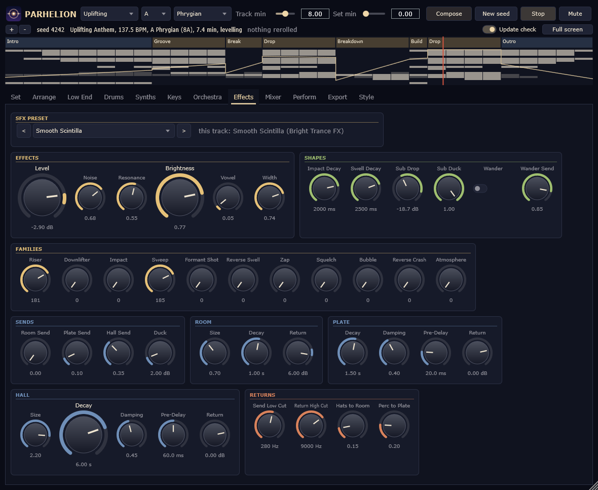
The effects are synthesised as well: the riser and the sweep of the build, the reverse crash and the impact on the drop, the downlifter after it, the sub drop, swells, zaps and atmospheres, each from its own group of presets.
The sends: a room, a plate and a long hall, which every voice sends into by its own knobs (the hats into the room and the percussion into the plate by the knobs here), each with a low cut at its input and its return ducked by the pump. The composer draws the hall long in a breakdown and short in a drop.
| Control | Key | Range | Default |
|---|---|---|---|
| Level | sfx.level | -36 .. 6 dB | -3 dB |
| Noise | sfx.noise | 0 .. 1 | 0.6 |
| Resonance | sfx.resonance | 0 .. 1 | 0.5 |
| Brightness | sfx.brightness | 0 .. 1 | 0.5 |
| Impact Decay | sfx.impact_decay | 200 .. 4000 ms | 1400 ms |
| Vowel | sfx.vowel | 0 .. 1 | 0.3 |
| Swell Decay | sfx.swell_decay | 200 .. 6000 ms | 1500 ms |
| Width | sfx.width | 0 .. 1 | 0.7 |
| Room Send | sfx.room_send | 0 .. 1 | 0 |
| Hall Send | sfx.hall_send | 0 .. 1 | 0.35 |
| Duck | sfx.duck | 0 .. 18 dB | 2 dB |
| Sub Drop | sfx.sub_level | -36 .. 6 dB | -14 dB |
| Sub Duck | sfx.sub_duck | 0 .. 1 | 1 |
| Wander | sfx.wander | off / on | off |
| Wander Send | sfx.wander_send | 0 .. 1 | 0.85 |
| Riser | sfx.preset_riser | 0 .. 256 | 0 |
| Downlifter | sfx.preset_downlifter | 0 .. 128 | 0 |
| Impact | sfx.preset_impact | 0 .. 128 | 0 |
| Sweep | sfx.preset_sweep | 0 .. 256 | 0 |
| Formant Shot | sfx.preset_formant_shot | 0 .. 96 | 0 |
| Reverse Swell | sfx.preset_reverse_swell | 0 .. 256 | 0 |
| Zap | sfx.preset_zap | 0 .. 96 | 0 |
| Squelch | sfx.preset_squelch | 0 .. 128 | 0 |
| Bubble | sfx.preset_bubble | 0 .. 64 | 0 |
| Reverse Crash | sfx.preset_reverse_crash | 0 .. 128 | 0 |
| Atmosphere | sfx.preset_atmosphere | 0 .. 512 | 0 |
| Plate Send | sfx.plate_send | 0 .. 1 | 0.1 |
| Control | Key | Range | Default |
|---|---|---|---|
| Room Size | sends.room_size | 0.3 .. 3 | 0.7 |
| Room Decay | sends.room_decay | 0.2 .. 4 s | 1 s |
| Room Return | sends.room_return | -60 .. 18 dB | 6 dB |
| Plate Decay | sends.plate_decay | 0.3 .. 6 s | 1.5 s |
| Plate Damping | sends.plate_damping | 0 .. 1 | 0.4 |
| Plate Pre-Delay | sends.plate_predelay | 0 .. 100 ms | 20 ms |
| Plate Return | sends.plate_return | -60 .. 18 dB | 0 dB |
| Hall Size | sends.hall_size | 0.5 .. 3 | 2.2 |
| Hall Decay | sends.hall_decay | 0.5 .. 14 s | 6 s |
| Hall Damping | sends.hall_damping | 0 .. 1 | 0.45 |
| Hall Pre-Delay | sends.hall_predelay | 0 .. 120 ms | 60 ms |
| Hall Return | sends.hall_return | -60 .. 18 dB | 0 dB |
| Send Low Cut | sends.low_cut | 80 .. 800 Hz | 280 Hz |
| Return High Cut | sends.high_cut | 2000 .. 18000 Hz | 9000 Hz |
| Hats to Room | sends.hats_send | 0 .. 1 | 0.15 |
| Perc to Plate | sends.perc_send | 0 .. 1 | 0.2 |
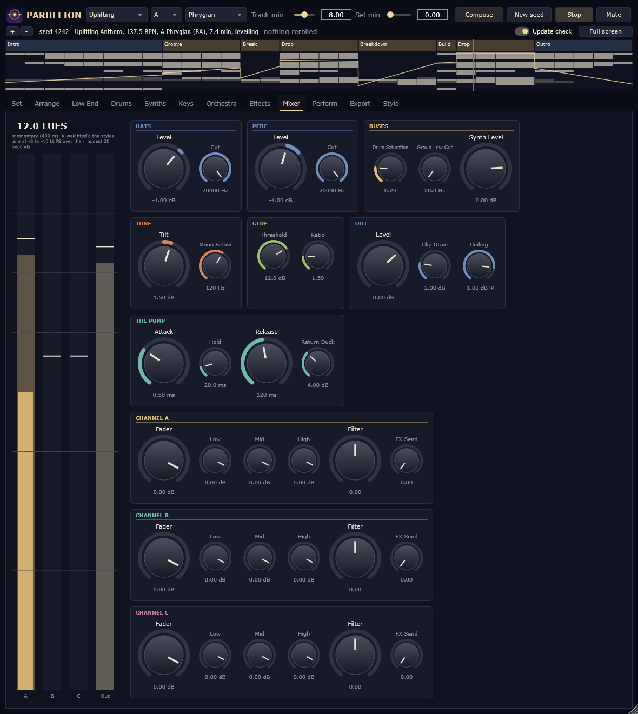
The meters: each deck after its mixer channel, the output, and the loudness of the last 400 ms. Under them the mix buses (the Drums chapter), the pump (the Low End chapter) and the master: the glue compressor, a tilt of the highs against the lows, the side under Mono Below made mono, the level, a clipper at four times the rate and a true-peak limiter at the ceiling.
A deck's channel is a DJ mixer's: the fader, a three-band isolator (200 Hz and 2.5 kHz, each band from a kill to +6 dB), a filter that is a low pass to the left and a high pass to the right, and the send into the mixer's effects. In a set the composer moves them as a DJ would; in the plugin they are yours too.
| Control | Key | Range | Default |
|---|---|---|---|
| Level | master.level | -24 .. 12 dB | 0 dB |
| Glue Threshold | master.threshold | -40 .. 0 dB | -12 dB |
| Glue Ratio | master.ratio | 1 .. 10 | 1.5 |
| Clip Drive | master.clip | 0 .. 9 dB | 2 dB |
| Ceiling | master.ceiling | -6 .. 0 dBTP | -1 dBTP |
| Mono Below | master.mono_below | 40 .. 250 Hz | 120 Hz |
| Tilt | master.tilt | -12 .. 12 dB | 1.5 dB |
| Control | Key | Range | Default |
|---|---|---|---|
| Fader | deckN.fader | -60 .. 6 dB | 0 dB |
| Low | deckN.low | -60 .. 6 dB | 0 dB |
| Mid | deckN.mid | -60 .. 6 dB | 0 dB |
| High | deckN.high | -60 .. 6 dB | 0 dB |
| Filter | deckN.filter | -1 .. 1 | 0 |
| FX Send | deckN.fx_send | 0 .. 1 | 0 |
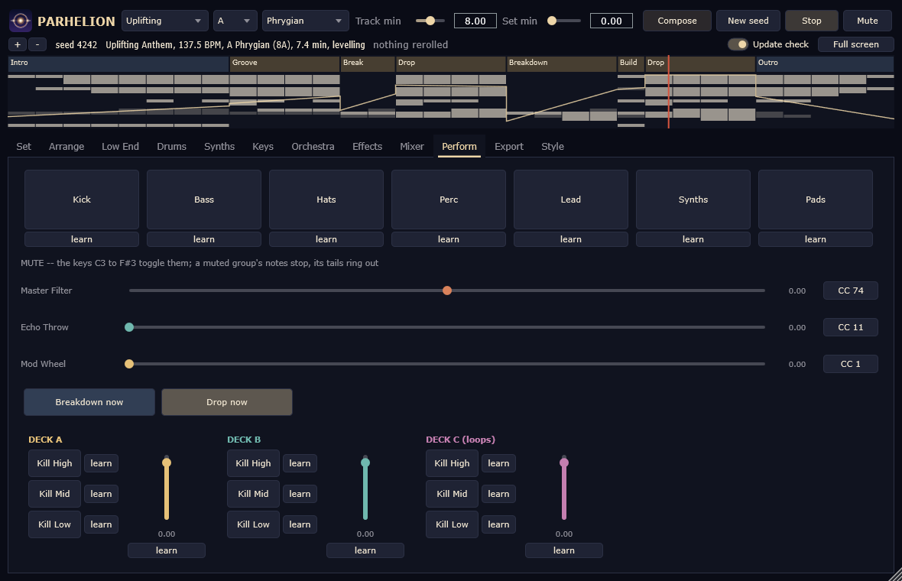
As at a mixer. Seven mutes -- kick, bass, hats, percussion, lead, the other synths, pads --: a muted group's notes stop and its tails ring out. The master filter takes the whole mix, the echo throw sends it into the mixer's echo, and the mod wheel drives every voice's modulation matrix where its preset listens to it. Each deck has its kills and its fader.
Breakdown now and Drop now rewrite the playing track from its next 8-bar line (or the one after it, where that is less than six seconds away): into a breakdown with its build and a drop after it, or into the drop at once, after a beat of silence. Everything before that line stays as it was, and the track plays on without a gap. A set is not rewritten -- its next blend would have to move with it.
Every control can be learned from a MIDI controller: click learn, move the controller (a right click forgets it). By default controller 74 moves the filter, controller 11 the throw and the mod wheel the wheel; channel pressure is the matrices' pressure; the keys from middle C up (C to F#) toggle the seven mutes. The bindings are saved with the project.
The perform controls are live only: an export or parh_render plays the track as it was composed.
| Control | Key | Range | Default |
|---|---|---|---|
| Master Filter | perform.filter | -1 .. 1 | 0 |
| Echo Throw | perform.throw | 0 .. 1 | 0 |
| Mute Kick | perform.mute_kick | off / on | off |
| Mute Bass | perform.mute_bass | off / on | off |
| Mute Hats | perform.mute_hats | off / on | off |
| Mute Perc | perform.mute_perc | off / on | off |
| Mute Lead | perform.mute_lead | off / on | off |
| Mute Synths | perform.mute_synths | off / on | off |
| Mute Pads | perform.mute_pads | off / on | off |
| Mod Wheel | perform.wheel | 0 .. 1 | 0 |
| Pressure | perform.pressure | 0 .. 1 | 0 |
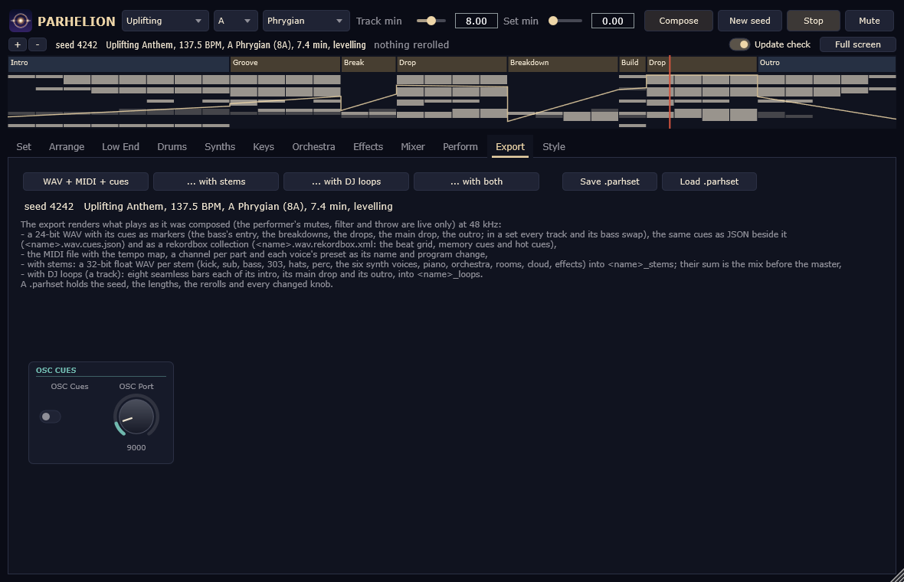
The export renders what plays at 48 kHz: a 24-bit WAV with cue markers (the bass's entry, the breakdowns, the drops, the main drop, the outro; in a set every track and its bass swap) and the same cues as JSON beside it (<name>.wav.cues.json), for DJ software that does not read the WAV's markers, and a rekordbox collection beside it (<name>.wav.rekordbox.xml: the beat grid, following a set's tempo bar by bar, every cue a memory cue and the first eight hot cues; import it in rekordbox under Preferences > Advanced > rekordbox xml); the MIDI file with the tempo map, a channel per part and each voice's preset as its name and program change; on request the stems -- a WAV per part -- and the DJ loops of a track: eight seamless bars each of its intro, its main drop and its outro. A .parhset file holds the seed, the lengths, the rerolls and every changed knob.
The OSC cues tell a visualiser what the score knows, at the moment it is heard: the beat and the tempo, the bar, the section's name, what the layer matrix changes, the key. They go to this machine at the port given, or to PARH_CUE_HOST.
/parh/beat i f beat number, tempo
/parh/bar i bar number
/parh/block s the section's name ("Breakdown", "Drop", a set's track)
/parh/op s the layer matrix's change ("add lead", "filter pluck", "remove kick")
/parh/key s the key as a Camelot label ("8A")
| Control | Key | Range | Default |
|---|---|---|---|
| OSC Cues | cue.enabled | off / on | off |
| OSC Port | cue.port | 1024 .. 65535 | 9000 |
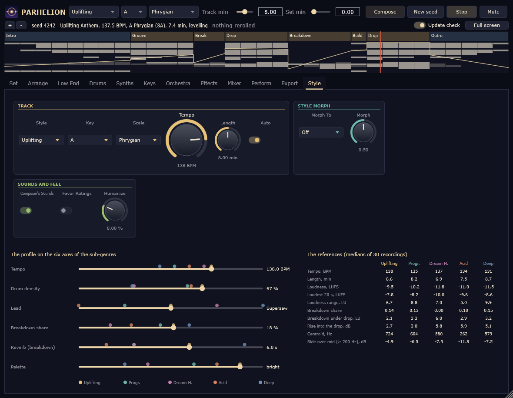
Where the knobs' profile stands among the five styles, on six axes: the tempo, the density of the drums, how much the lead carries, the share of the breakdowns, the length of the breakdown's reverb and the brightness of the palette the composer chooses its presets from. The markers are the five profiles; the bar is the profile of the knobs, with its morph. Under them the references' medians per style, as they were measured: tempo, length, integrated loudness and the loudest 20 seconds, the loudness range, the breakdown's share and its distance to the drop, the rise into the drop, the spectral centroid and the width above 200 Hz.
parh_render composes and renders without a window, the same samples the plugin plays:
parh_render --seed 7 --out track.wav --midi track.mid --stems stems --loops loops parh_render --style Acid --seed 3 --minutes 7 --out acid.wav --plan-json acid.json parh_render --dj 120 --seed 7 --set "set.dramaturgy=Sunrise; set.journey=Wander" --out set.wav parh_render --seed 7 --reroll motif --out other_hook.wav parh_render --list every parameter with its value parh_render --bench --quality quest how fast, at the headset's quality
Tools/calibrate.py renders every style and measures its tracks exactly as the references were measured; the evaluation (Tools/eval_report.py) adds the section boundaries it hears against the planned ones, the key it hears against the planned one, and the rise into each drop.